QM-01 — Origins of Quantum Theory
Quantum Mechanics trunk · QM/QM-01_origins · open in the Teaching Network
The four experiments that classical physics could not explain, and the quantum postulates introduced to fix each — as closed-form formulae you can evaluate:
1. Black-body radiation — Planck's law, its Rayleigh–Jeans (UV catastrophe) and Wien limits; Stefan–Boltzmann and Wien displacement recovered as consequences. 2. Photoelectric effect — Einstein's quantum of light, K_max = hf − W. 3. Bohr model — quantized energies/orbits and the Rydberg spectral series. 4. de Broglie waves — λ = h/p, matter as waves (the seed of the trunk). 5. Compton scattering — the photon's momentum p = h/λ.
House rule for this module: nothing is quoted. σ, the Wien constant b, the Rydberg constant and the Compton wavelength are all rederived from the fundamental constants (h, c, k_B, e, mₑ) — by integrating Planck (→ σ), maximising Planck (→ b), and assembling combinations of constants — then checked against CODATA in the tests. (This is the QM-trunk analogue of MA-01's "three kinds of input, one set of functions": here it is one set of constants, every result derived.)
Key equations
Figures
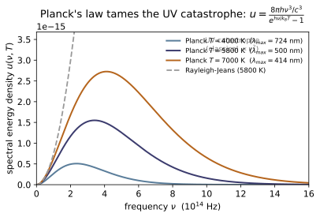
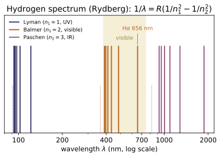
Example problems
Show that Rayleigh–Jeans is the $h\nu\ll k_BT$ limit of Planck, and that, unlike Planck, it has no finite total energy. (At fixed T, RJ grows without bound while Planck turns over.) Check: rayleigh_jeans_u_nu(1e9, 300) ≈ planck_u_nu(1e9, 300) (classical regime); at high ν, planck_u_nu(1e16, 5000) < planck_u_nu(1e15, 5000) but the RJ values keep rising. (test_planck_reduces_to_rayleigh_jeans, test_rayleigh_jeans_diverges_but_planck_does_not.)
Write Planck with $x=h\nu/k_BT$: $u=\dfrac{8\pi h\nu^3}{c^3}\,\dfrac{1}{e^{x}-1}$. For $x\ll1$, $e^{x}-1\to x=\dfrac{h\nu}{k_BT}$, so
the Rayleigh–Jeans law. At $\nu=10^9,\,T=300$ K, $x\approx1.6\times10^{-4}\ll1$, so the two agree ($3.8635\times10^{-27}$ vs $3.8632\times10^{-27}$). But RJ $\propto\nu^2$ gives $\int_0^\infty\nu^2\,d\nu=\infty$ — the UV catastrophe — whereas Planck's $e^{h\nu/k_BT}$ denominator forces an exponential turn-over: $u(10^{16},5000)\approx1.3\times10^{-51}\ll u(10^{15},5000)\approx4.2\times10^{-17}$, exactly the two Check: comparisons.
Without quoting them, obtain the Stefan–Boltzmann constant and the Wien displacement constant from Planck's law. (σ by integrating $x^3/(e^x-1)=\pi^4/15$; b by solving $x=5(1-e^{-x})$, x≈4.965.) Answer: σ = 5.6704×10⁻⁸ W m⁻² K⁻⁴, b = 2.898×10⁻³ m K. Check: stefan_boltzmann_sigma(), wien_displacement_b().
σ: integrate Planck over $\nu$ with $x=h\nu/k_BT$ (so $d\nu=\frac{k_BT}{h}dx$):
using $\int_0^\infty\frac{x^3}{e^x-1}dx=\Gamma(4)\zeta(4)=\frac{\pi^4}{15}$. With $a=4\sigma/c$, $\sigma=\frac{2\pi^5k_B^4}{15h^3c^2}=5.6704\times10^{-8}$. b: maximizing $B_\lambda\propto\lambda^{-5}/(e^{hc/\lambda k_BT}-1)$ over $\lambda$ gives, with $x=hc/\lambda k_BT$, the transcendental $x=5(1-e^{-x})$ (root $x\approx4.965$), so $\lambda_{\max}T=\frac{hc}{k_Bx}=b =2.898\times10^{-3}$ m K. The code returns $\sigma=5.6704\times10^{-8}$ and $b=2.8978\times10^{-3}$.
The Sun's surface is ≈5772 K. Where does its spectrum peak? Answer: λ_max = b/T ≈ 502 nm (green; the eye's peak sensitivity sits here — not a coincidence). Check: wien_displacement_b()/5772 * 1e9.
Wien's displacement law puts the spectral peak at $\lambda_{\max}=b/T$. With $b=2.898\times10^{-3}$ m K and $T=5772$ K,
which lies in the green, coinciding with the eye's peak photopic sensitivity (not an accident — the eye evolved under sunlight). wien_displacement_b()/5772*1e9 returns $502.0$ nm.
Sodium has W = 2.28 eV. (a) What is the longest wavelength that ejects electrons? (b) Show the stopping voltage vs frequency is a line of slope h/e. Answer: (a) λ₀ = c/f₀ ≈ 544 nm. (b) slope = h/e. Check: threshold_frequency(2.28e) → f₀; c/f01e9 ≈ 544; test_photoelectric_threshold_and_linearity verifies dK_max/df = h.
(a) The threshold is where $K_{\max}=h\nu-W=0$, i.e. $f_0=W/h$. With $W=2.28\,\mathrm{eV}=3.65\times10^{-19}$ J,
(b) The stopping voltage satisfies $eV_s=K_{\max}=h\nu-W$, so $V_s=\frac{h}{e}\nu-\frac{W}{e}$ — a straight line of slope $h/e$ (equivalently $dK_{\max}/d\nu=h$, how Millikan measured $h$). threshold_frequency(2.28*e) gives $5.513\times10^{14}$ Hz and $c/f_0\cdot10^9=543.8$ nm.
From the Bohr levels, find the Balmer Hα (3→2) and Lyman-α (2→1) wavelengths and say which part of the spectrum each lands in. Answer: Hα = 656 nm (visible red), Lyman-α = 122 nm (UV). Check: rydberg_wavelength(2,3)1e9 ≈ 656.1; rydberg_wavelength(1,2)1e9 ≈ 121.6.
The Rydberg formula reads $\frac1\lambda=R\big(\frac1{n_1^2}-\frac1{n_2^2}\big)$ with $R=1.097\times10^7\,\mathrm{m^{-1}}$. Balmer Hα ($n_2{=}3\to n_1{=}2$):
Lyman-α ($2\to1$): $\frac1\lambda=R\big(1-\frac14\big)=\frac{3R}{4}\Rightarrow\lambda=\frac{4}{3R}=121.5\ \mathrm{nm}$ (UV). The code returns rydberg_wavelength(2,3)1e9 ≈ $656.1$ and rydberg_wavelength(1,2)1e9 ≈ $121.5$.
A 100 eV electron: what is its de Broglie wavelength, and how does it compare to visible light (~500 nm)? Answer: λ = h/√(2mE) ≈ 0.123 nm — ~4000× shorter than visible light, so the diffraction-limited resolution is ~4000× finer. Check: de_broglie_from_energy(100e)1e9 ≈ 0.1226.
Non-relativistically $p=\sqrt{2m_eE}$, so $\lambda=\dfrac{h}{p}=\dfrac{h}{\sqrt{2m_eE}}$. With $E=100\,\mathrm{eV}=1.602\times10^{-17}$ J,
This is $\sim\!500/0.123\approx4000\times$ shorter than visible light, so the diffraction-limited resolution ($\sim\lambda$) is $\sim\!4000\times$ finer — why electron microscopes resolve atoms. de_broglie_from_energy(100e)1e9 ≈ $0.1226$.
Find the maximum wavelength shift when X-rays Compton-scatter off electrons, and the angle at which it occurs. Answer: Δλ_max = 2λ_C ≈ 4.85 pm, at θ = 180° (back-scatter). Check: compton_shift(math.pi)*1e12 ≈ 4.853; compton_shift(0) = 0.
The Compton shift is $\Delta\lambda=\lambda_C(1-\cos\theta)$ with $\lambda_C=h/m_ec=2.426$ pm. The factor $(1-\cos\theta)$ is largest at $\cos\theta=-1$, i.e. $\theta=180^\circ$ (back-scatter):
and it vanishes in the forward direction $\theta=0$ (since $1-\cos0=0$). The X-ray loses momentum to the recoiling electron, lengthening its wavelength. compton_shift(math.pi)*1e12 ≈ $4.853$ and compton_shift(0) $=0$.
Run the worked code: cd QM/QM-01_origins/code && python3 origins.py
QM-02 — The Wavefunction & Born's Rule
Quantum Mechanics trunk · QM/QM-02_wavefunction_born · open in the Teaching Network
Born's statistical interpretation, as composable operations on a 1-D grid that you evaluate and cross-check against closed forms:
1. The wavefunction $\Psi(x,t)$ — a complex probability amplitude. 2. Born's rule — $|\Psi|^2$ is a probability density; $\int_a^b|\Psi|^2dx$ is the probability of finding the particle in $[a,b]$. 3. Normalization $\int|\Psi|^2dx=1$, square-integrability ($\Psi\to0$ at $\infty$), and the preservation of the norm in time. 4. Expectation values $\langle x\rangle$, $\langle x^2\rangle$, $\langle p\rangle$ and the standard deviations $\sigma_x,\sigma_p$, with $\hat p=-i\hbar\,\partial_x$. 5. The move to momentum space — $\Phi(p)$ is the Fourier transform of $\Psi$.
House rule for this module: nothing is asserted, everything is checked against a closed form. The validation target is the analytic Gaussian wavepacket $\Psi\propto e^{-(x-x_0)^2/4\sigma^2}e^{ik_0x}$, whose every moment is known in closed form ($\langle x\rangle=x_0$, $\sigma_x=\sigma$, $\langle p\rangle=\hbar k_0$, $\sigma_p=\hbar/2\sigma$, $\sigma_x\sigma_p=\hbar/2$, and $P(|x-x_0|<L\sigma)=\operatorname{erf}(L/\sqrt2)$). The tests confirm each numerically. (This is the QM-02 analogue of ~QM-01's "every constant rederived.")
Key equations
Figures
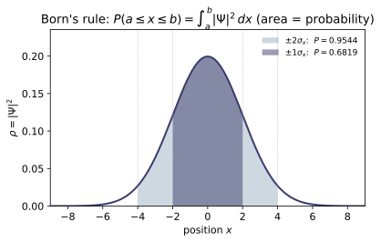
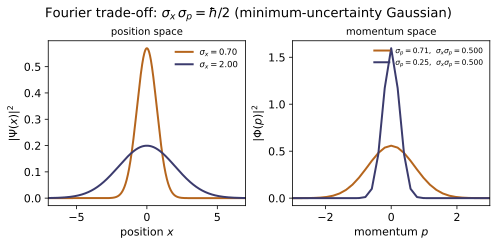
Example problems
A state arrives un-normalized, $\Psi_{\text{raw}}(x)=C\,f(x)$. Born's rule needs $\int|\Psi|^2dx=1$; find the rescaling and confirm the density now integrates to 1. Answer: divide by $\sqrt{\int|\Psi_{\text{raw}}|^2dx}$; then $\int|\Psi|^2dx=1$. Check: ``python raw = 7.3np.exp(-(x-1)**2/2)np.exp(0.4j*x) total_probability(normalize(raw, x), x) # -> 1.0 ` (test_normalize_makes_unit_integral`.)
Linearity of the Schrödinger equation means $A\Psi_{\text{raw}}$ is a state for any constant $A$; Born's rule fixes $|A|$. Demand
So the normalized state is $\Psi=\Psi_{\text{raw}}/\sqrt{\int|\Psi_{\text{raw}}|^2dx}$ (the overall phase of $A$ is physically irrelevant and left free). By construction $\int|\Psi|^2dx=\int|\Psi_{\text{raw}}|^2dx\big/\int|\Psi_{\text{raw}}|^2dx=1$. This is exactly what normalize does — divide by $\sqrt{\int|\Psi_{\text{raw}}|^2dx}$ — so total_probability(normalize(raw, x), x) returns $1.0$.
For the Gaussian above, what is the probability of finding the particle between $x=1$ and $x=3$ (i.e. within one $\sigma$ of the centre $x_0=2$)? And over the whole line? Answer: $P(1\le x\le 3)=\operatorname{erf}(1/\sqrt2)\approx0.6827$; $P(-\infty,\infty)=1$. Check: prob_between(psi, x, 1, 3) ≈ 0.6827; prob_between(psi, x, x[0], x[-1]) ≈ 1.0. (test_prob_symmetric_interval_is_erf, test_prob_over_whole_line_is_one.)
The Born density is the normal density $|\Psi|^2=\frac{1}{\sqrt{2\pi}\,\sigma}e^{-(x-x_0)^2/2\sigma^2}$ with $x_0=2,\ \sigma=1$. The interval $[1,3]$ is exactly $x_0\pm\sigma$, so substituting $u=(x-x_0)/\sigma$,
using $\frac{1}{\sqrt{2\pi}}\int_{-a}^{a}e^{-u^2/2}du=\operatorname{erf}(a/\sqrt2)$. Over the whole line the integral is the normalization, $=1$. These match prob_between(psi, x, 1, 3) $\approx0.68269$ and prob_between(psi, x, x[0], x[-1]) $\approx1.0$.
Show that for any Gaussian state the probability of lying within $L$ standard deviations of the mean is $\operatorname{erf}(L/\sqrt2)$, independent of $x_0,\sigma$. Evaluate for $L=1,2,3$. Answer: $0.6827,\ 0.9545,\ 0.9973$ (the familiar 68–95–99.7%). Check: ``python for L in (1,2,3): print(prob_between(psi, x, 2-L, 2+L), math.erf(L/math.sqrt(2))) ` (test_prob_symmetric_interval_is_erf`.)
For any mean $x_0$ and width $\sigma$, the substitution $u=(x-x_0)/\sigma$ removes both parameters:
a pure number depending only on $L$. Evaluating: $\operatorname{erf}(1/\sqrt2)=0.6827$, $\operatorname{erf}(2/\sqrt2)=0.9545$, $\operatorname{erf}(3/\sqrt2)=0.9973$ — the familiar 68–95–99.7% rule. The loop prints these alongside math.erf(L/math.sqrt(2)), agreeing to grid accuracy.
For $\Psi\propto e^{-(x-x_0)^2/4\sigma^2}e^{ik_0x}$, compute $\langle x\rangle$, $\langle x^2\rangle$ and the standard deviation $\sigma_x$ from the Born density. Answer: $\langle x\rangle=x_0=2$, $\langle x^2\rangle=x_0^2+\sigma^2=5$, $\sigma_x=\sigma=1$. Check: expectation_x(psi, x) ≈ 2; expectation_x2(psi, x) ≈ 5; sigma_x(psi, x) ≈ 1. (test_expectation_x, test_expectation_x2, test_sigma_x.)
The phase $e^{ik_0x}$ cancels in $|\Psi|^2=\frac{1}{\sqrt{2\pi}\,\sigma}e^{-(x-x_0)^2/2\sigma^2}$, a normal density of mean $x_0$ and variance $\sigma^2$. Its first moment is the mean,
By the variance theorem $\sigma_x^2=\langle x^2\rangle-\langle x\rangle^2=\sigma^2$, so $\langle x^2\rangle=x_0^2+\sigma^2=4+1=5$ and $\sigma_x=\sqrt{5-4}=\sigma=1$. These reproduce expectation_x(psi, x) $\approx2$, expectation_x2(psi, x) $\approx5$, sigma_x(psi, x) $\approx1$.
The factor $e^{ik_0x}$ contributes no probability density ($|e^{ik_0x}|=1$) yet sets the momentum. Using $\hat p=-i\hbar\,\partial_x$, find $\langle p\rangle$ and $\sigma_p$. Answer: $\langle p\rangle=\hbar k_0=5$ (with $\hbar=1$); $\sigma_p=\hbar/2\sigma=0.5$. Check: expectation_p(psi, x) ≈ 5 (finite diff.); expectation_p_fft(psi, x) = 5 (exact, via momentum space); sigma_p(psi, x) ≈ 0.5. (test_expectation_p_finite_difference, test_expectation_p_fft_is_exact, test_sigma_p.)
Write $\Psi=g(x)\,e^{ik_0x}$ with $g$ the real Gaussian envelope. Then $\hat p\Psi=-i\hbar\,\partial_x\Psi=(\hbar k_0\,g-i\hbar\,g')\,e^{ik_0x}$, so
Integrating: $\int g^2dx=1$ gives $\hbar k_0$, while $\int g g'dx=\tfrac12\int(g^2)'dx=0$ (boundary terms vanish), so $\langle p\rangle=\hbar k_0=5$. For the spread, $\langle p^2\rangle=\hbar^2\!\int|\partial_x\Psi|^2dx=\hbar^2\!\big(k_0^2+\tfrac{1}{4\sigma^2}\big)$, hence $\sigma_p^2=\hbar^2/4\sigma^2$ and $\sigma_p=\hbar/2\sigma=0.5$. This matches expectation_p_fft(psi, x) $=5.0$ (the finite-difference expectation_p $\approx4.998$) and sigma_p(psi, x) $\approx0.499$.
Form the product $\sigma_x\sigma_p$ for the Gaussian and compare it to the Heisenberg bound $\hbar/2$. Answer: $\sigma_x\sigma_p=\sigma\cdot\dfrac{\hbar}{2\sigma}=\dfrac{\hbar}{2}$ — the Gaussian saturates the bound (no state is more localized in both $x$ and $p$). Check: sigma_x(psi, x)*sigma_p(psi, x) ≈ 0.5 = ℏ/2. (test_minimum_uncertainty_product.)
Combine the two closed forms from P4 and P5, $\sigma_x=\sigma$ and $\sigma_p=\hbar/2\sigma$:
The $\sigma$ cancels, so every Gaussian — no matter how wide or narrow — has the same product $\hbar/2$, the exact floor of the Heisenberg inequality $\sigma_x\sigma_p\ge\hbar/2$ (~QM-07). Squeezing the packet in $x$ (small $\sigma$) inflates $\sigma_p=\hbar/2\sigma$ in lockstep. Numerically sigma_x(psi, x)*sigma_p(psi, x) $\approx0.4994\approx\hbar/2=0.5$ (the tiny shortfall is finite-difference/grid error).
The momentum-space wavefunction is the Fourier transform $\Phi(p)=(2\pi\hbar)^{-1/2}\!\int\Psi e^{-ipx/\hbar}dx$. Show $|\Phi(p)|^2$ is a Gaussian centred at $p_0=\hbar k_0$ with width $\sigma_p=\hbar/2\sigma$, and that $\int|\Phi|^2dp=1$ (Plancherel). Answer: $|\Phi(p)|^2=\dfrac{1}{\sqrt{2\pi}\,\sigma_p}e^{-(p-\hbar k_0)^2/2\sigma_p^2}$; $\int|\Phi|^2dp=1$. Check: ``python p, phi = momentum_space(psi, x) p[np.argmax(np.abs(phi)2)] # -> ~5.0 (peak at p = hbar*k0) np.trapz(np.abs(phi)2, p) # -> ~1.0 (Plancherel) ` (test_momentum_space_is_normalized, test_momentum_space_density_matches_closed_form_gaussian`.)
Insert $\Psi=(2\pi\sigma^2)^{-1/4}e^{-(x-x_0)^2/4\sigma^2}e^{ik_0x}$ into $\Phi(p)=(2\pi\hbar)^{-1/2}\!\int\Psi\,e^{-ipx/\hbar}dx$. Collecting exponentials, the integral is the Fourier transform of a Gaussian at wavenumber $q=p/\hbar-k_0$, which (completing the square) gives $\Phi(p)\propto\exp\!\big[-\sigma^2(p/\hbar-k_0)^2\big]=\exp\!\big[-\sigma^2(p-\hbar k_0)^2/\hbar^2\big]$. Therefore
a Gaussian centred at $p_0=\hbar k_0=5$ with width $\hbar/2\sigma$. Plancherel's theorem makes $\int|\Phi|^2dp=\int|\Psi|^2dx=1$. The code confirms the peak at p[argmax|phi|^2] $\approx5.0$ and np.trapz(|phi|^2, p) $\approx1.0$.
A free Gaussian ($V=0$) spreads as it evolves. Show numerically that $\int|\Psi(x,t)|^2dx$ stays 1 while $\sigma_x$ grows as $\sigma_x(t)=\sigma_0\sqrt{1+\big(\hbar t/2m\sigma_0^2\big)^2}$. Answer: the norm is conserved (the Schrödinger equation preserves it); the width follows the spreading law above. Check: ``python xx = np.linspace(-40, 60, 8001); p0 = gaussian_packet(xx, 0.0, 1.0, 4.0) pt = free_propagate(p0, xx, t=2.0) # m=1, hbar=1 total_probability(pt, xx) # -> 1.0 sigma_x(pt, xx), 1.0*math.sqrt(1+(2/2)**2) # -> (1.414..., 1.414...) ` (test_free_evolution_preserves_normalization, test_free_evolution_spreading_law`.)
Free evolution acts in momentum space as a pure phase: $\widetilde\Psi(k,t)=e^{-i\hbar k^2 t/2m}\,\widetilde\Psi(k,0)$. Since $|e^{-i\hbar k^2t/2m}|=1$, every mode keeps its modulus, so by Plancherel
for all $t$ — normalization is conserved. The phase does, however, dephase the modes and broaden the packet: a Gaussian spreads as $\sigma_x(t)=\sigma_0\sqrt{1+(\hbar t/2m\sigma_0^2)^2}$. At $t=2,\ m=\hbar=\sigma_0=1$ this is $\sqrt{1+1}=\sqrt2\approx1.4142$, matching total_probability(pt, xx) $\approx1.0$ and sigma_x(pt, xx) $\approx1.41421$.
Ehrenfest's theorem says expectation values obey the classical laws. For the free packet, where is the centre $\langle x\rangle(t)$ at time $t$, and how fast does it move? Answer: $\langle x\rangle(t)=x_0+\dfrac{\langle p\rangle}{m}t=x_0+\dfrac{\hbar k_0}{m}t$ — it drifts at the (group) velocity $\hbar k_0/m$, while $\langle p\rangle$ stays constant ($V=0$, no force). Check: expectation_x(free_propagate(p0, xx, 1.0), xx) ≈ 0 + 4*1 = 4; expectation_p_fft(free_propagate(p0, xx, 1.0), xx) ≈ 4 (unchanged). (test_free_evolution_group_velocity, test_free_evolution_conserves_momentum.)
Ehrenfest's theorem gives $\frac{d}{dt}\langle x\rangle=\frac{\langle p\rangle}{m}$ and $\frac{d}{dt}\langle p\rangle=\langle-\partial_xV\rangle$. With $V=0$ there is no force, so $\langle p\rangle=\hbar k_0$ stays constant; integrating the first equation,
i.e. the centroid drifts at the group velocity $\hbar k_0/m$. For $x_0=0,\ k_0=4,\ m=\hbar=1$, at $t=1$ this is $\langle x\rangle=0+4\cdot1=4$, while $\langle p\rangle=\hbar k_0=4$ is unchanged. These match expectation_x(free_propagate(p0, xx, 1.0), xx) $\approx4.0$ and expectation_p_fft(...) $\approx4.0$.
Run the worked code: cd QM/QM-02_wavefunction_born/code && python3 wavefunction.py
QM-03 — The Schrödinger Equation
Quantum Mechanics trunk · QM/QM-03_schrodinger_equation · open in the Teaching Network
The central equation of quantum mechanics and the anatomy of its solutions, as objects you build and evolve on a grid:
1. Time-dependent Schrödinger equation (TDSE) $i\hbar\,\partial_t\Psi=\hat H\Psi$ — the dynamical law, with $\hat H=-\frac{\hbar^2}{2m}\partial_x^2+V(x)$. 2. Separation of variables $\Rightarrow$ the time-independent equation (TISE) $\hat H\psi=E\psi$ — an eigenvalue problem for the energies $E_n$. 3. Stationary states $\Psi_n=\psi_n e^{-iE_nt/\hbar}$ — why $|\Psi|^2$ is then frozen in time even though the phase rotates. 4. The general solution $\Psi=\sum_n c_n\psi_n e^{-iE_nt/\hbar}$ — the rôle of the $c_n$ (Fourier's trick; $|c_n|^2$ = energy probability) and the beat at $\omega=(E_2-E_1)/\hbar$ that makes a superposition move.
House rule for this module: nothing is asserted that the code does not recover. The Hamiltonian is built by finite differences and diagonalised (numpy.linalg.eigh); the well spectrum $E_n=n^2\pi^2\hbar^2/2mL^2$, the frozen-in-time $|\Psi|^2$ of a stationary state, the Bohr beat period, $\sum|c_n|^2 =1$, and (same solver, different $V$) the oscillator ladder $E_n=(n+\tfrac12) \hbar\omega$ are all checked against their closed forms in the tests.
Key equations
Figures
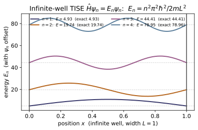
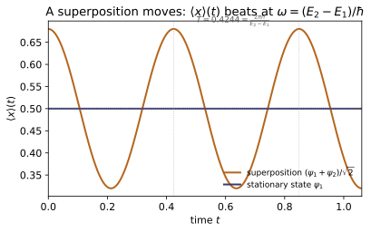
Example problems
Starting from the TDSE with a time-independent $V$, substitute $\Psi=\psi(x) \varphi(t)$ and show that consistency forces both sides to a constant $E$, giving $\varphi(t)=e^{-iEt/\hbar}$ and the TISE $\hat H\psi=E\psi$. Answer: dividing by $\psi\varphi$ separates $t$ from $x$; a $t$-only function equal to an $x$-only function must be constant. The time factor is the universal "wiggle" $e^{-iEt/\hbar}$. Check: the universality of the phase is exercised by stationary_state; e.g. stationary_state(psi[:,0], E[0], 2*np.pi/E[0]) returns $+\psi$ and at np.pi/E[0] returns $-\psi$. (test_stationary_state_phase_does_evolve.)
Insert $\Psi=\psi(x)\varphi(t)$ into $i\hbar\,\partial_t\Psi=\hat H\Psi$. The left side is $i\hbar\,\psi\dot\varphi$ and the right is $\varphi\big(-\tfrac{\hbar^2}{2m}\psi''+V\psi\big)$; divide through by $\psi\varphi$:
The left depends only on $t$, the right only on $x$, so for the equality to hold for all $x,t$ both must equal one constant $E$. The time half integrates to $\dot\varphi=-\tfrac{iE}{\hbar}\varphi\Rightarrow\varphi(t)=e^{-iEt/\hbar}$, and the space half is the TISE $\hat H\psi=E\psi$. Every separable state shares this phase: with $\hbar=1$, $t=\pi/E$ gives $e^{-i\pi}=-1$ (returns $-\psi$) and $t=2\pi/E$ gives $e^{-2\pi i}=1$ (returns $+\psi$) — exactly what stationary_state(psi[:,0], E[0], ...) produces.
Solve the TISE for $V=0$ on $[0,L]$ with $\psi(0)=\psi(L)=0$ and recover the lowest five levels. Compare to $E_n=n^2\pi^2\hbar^2/2mL^2$. Answer: $E_n=n^2\pi^2/2$ for $L=\hbar=m=1$: $4.93,\,19.74,\,44.41,\,78.96,\, 123.37$. The finite-difference grid reproduces them to $<0.02\%$. Check: E,psi = solve(make_grid(0,1,400)); E[0] ≈ infinite_well_energy(1,1) ≈ 4.9348. (test_infinite_well_energies.)
Inside the well $V=0$, so the TISE is $-\tfrac{\hbar^2}{2m}\psi''=E\psi$, i.e. $\psi''=-k^2\psi$ with $k=\sqrt{2mE}/\hbar$. The general solution $A\sin kx+B\cos kx$ must vanish at $x=0$ (so $B=0$) and at $x=L$, forcing $\sin kL=0$, i.e. $k_nL=n\pi$. Hence
For $n=1\ldots5$ this is $4.9348,\,19.7392,\,44.4132,\,78.9568,\,123.3701$. The 400-point finite-difference grid returns $4.9348,\,19.7388,\,44.4112,\,78.9504,\,123.354$ — agreeing to $<0.02\%$, and E[0] $\approx$ infinite_well_energy(1,1) $\approx 4.9348$.
Show the eigenstates are $\psi_n=\sqrt{2/L}\sin(n\pi x/L)$ and that $\langle\psi_m|\psi_n\rangle=\delta_{mn}$. Answer: the ground-state density is $(2/L)\sin^2(\pi x/L)$, peaking at $2/L=2$ at $x=L/2$; distinct states are orthogonal. Check: prob_density(psi[:,0]) matches infinite_well_eigenfunction(1,x,1)**2 to $<10^{-4}$, and inner_product(psi[:,0], psi[:,1], dx) ≈ 0. (test_infinite_well_eigenfunction_shape, test_eigenstates_orthonormal.)
Normalizing $\psi_n=A\sin(n\pi x/L)$: $\int_0^L A^2\sin^2(n\pi x/L)\,dx=A^2\tfrac L2=1$ gives $A=\sqrt{2/L}$, so $\psi_n=\sqrt{2/L}\sin(n\pi x/L)$. Orthogonality uses the product-to-sum identity:
since each cosine integrates to zero unless $m=n$. Thus $\langle\psi_m|\psi_n\rangle=\delta_{mn}$. The ground density $|\psi_1|^2=(2/L)\sin^2(\pi x/L)$ peaks at $x=L/2$ where $\sin^2=1$, giving $2/L=2$. The grid confirms max prob_density(psi[:,0]) = 2.0 and inner_product(psi[:,0], psi[:,1], dx) $\approx-1.4\times10^{-16}$.
For a single eigenstate, show $|\Psi(x,t)|^2$ is independent of $t$, even though $\Psi$ itself is not. Answer: $|\psi_n e^{-iE_nt/\hbar}|^2=|\psi_n|^2$; the phase $e^{-iE_nt/\hbar}$ has unit modulus, so every observable is frozen while the phase still rotates. Check: prob_density(stationary_state(psi[:,0],E[0],t)) is the same to $\sim10^{-16}$ for any $t$. (test_stationary_state_density_time_independent.)
A single separable state is $\Psi_n(x,t)=\psi_n(x)\,e^{-iE_nt/\hbar}$. Its Born density factorizes the modulus:
because $|e^{-iE_nt/\hbar}|^2=e^{-iE_nt/\hbar}\,e^{+iE_nt/\hbar}=1$ ($E_n$ is real). So the density — and hence every probability and every expectation of a time-independent operator — is frozen, even though $\Psi$ itself keeps rotating in phase at rate $E_n/\hbar$. That is the sense of "stationary." The code confirms prob_density(stationary_state(psi[:,0],E[0],t)) is $t$-independent to $\sim10^{-16}$.
A particle starts as an even mixture of the first two stationary states, $\Psi(x,0)=\tfrac1{\sqrt2}(\psi_1+\psi_2)$. Find $|\Psi(x,t)|^2$ and $\langle x \rangle(t)$, and give the angular frequency of the oscillation. Answer: $|\Psi|^2=\tfrac12[\psi_1^2+\psi_2^2+2\psi_1\psi_2\cos\omega t]$ with $\omega=(E_2-E_1)/\hbar=3\pi^2\hbar/2mL^2\approx14.80$; $\langle x\rangle$ oscillates about $L/2$ with period $T=2\pi/\omega\approx0.4244$. Check: superposition_period(E[1],E[0]) ≈ 0.4244; sampling $\langle x\rangle(t)$ and calling measure_period returns the same to $<1\%$. (test_superposition_period_matches_bohr_frequency, test_superposition_revival_and_time_dependence.)
Each term evolves with its own phase, so $\Psi(x,t)=\tfrac1{\sqrt2}\big(\psi_1e^{-iE_1t/\hbar}+\psi_2e^{-iE_2t/\hbar}\big)$. With real $\psi_1,\psi_2$ the density is
the cross-term reducing to a cosine because only the relative phase $e^{-i(E_2-E_1)t/\hbar}$ survives. The beat angular frequency is $\omega=(E_2-E_1)/\hbar=(4-1)\pi^2/2=3\pi^2/2\approx14.80$, so $\langle x\rangle$ oscillates about $L/2$ with period $T=2\pi/\omega\approx0.4244$. This matches superposition_period(E[1],E[0]) $\approx0.4244$ and measure_period on the sampled $\langle x\rangle(t)$.
Given $\Psi(x,0)=0.6\,\psi_1+0.8\,\psi_5$, recover the coefficients $c_n$ and the probabilities of each energy outcome. Answer: $c_n=\int\psi_n^\ast\Psi_0\,dx$ gives $c_1=0.6,\,c_5=0.8$; the probabilities are $|c_1|^2=0.36$ and $|c_5|^2=0.64$, summing to 1. A measurement of the energy yields $E_1$ 36% of the time and $E_5$ 64% of the time, and $\langle H\rangle=0.36E_1+0.64E_5$ is constant in time. Check: coefficients(psi, Psi0, dx) returns those $c_n$, psi @ c reconstructs $\Psi_0$, and $\sum|c_n|^2=1$. (test_coefficients_recovered.)
Fourier's trick projects onto the orthonormal eigenbasis: multiply $\Psi_0=\sum_m c_m\psi_m$ by $\psi_n^\ast$ and integrate, using $\langle\psi_n|\psi_m\rangle=\delta_{nm}$:
For $\Psi_0=0.6\,\psi_1+0.8\,\psi_5$ only the matching terms survive, so $c_1=0.6$, $c_5=0.8$ (all others $0$); note $0.6^2+0.8^2=1$, so $\Psi_0$ is already normalized. The Born rule for energy gives $|c_1|^2=0.36$ and $|c_5|^2=0.64$, summing to $1$, and $\langle H\rangle=0.36\,E_1+0.64\,E_5$ — constant, since the $c_n$ never change. The code returns exactly c1=0.6, c5=0.8, sum|c_n|^2 = 1.0, and psi @ c rebuilds $\Psi_0$.
Replace $V=0$ with $V=\tfrac12 m\omega^2x^2$ and recover the oscillator ladder $E_n=(n+\tfrac12)\hbar\omega$. Answer: with $\hbar=m=\omega=1$, $E_n=n+\tfrac12$: $0.5,1.5,2.5,3.5,4.5$, equally spaced by $\hbar\omega=1$. The same finite-difference routine reproduces them to $\sim0.1\%$ — the bridge to the analytic/ladder treatment in ~QM-09. Check: Eh,_ = solve(make_grid(-8,8,800), V=lambda x: 0.5*x**2); Eh[0] ≈ 0.5, Eh[4] ≈ 4.5. (test_harmonic_oscillator_energies.)
The Hamiltonian assembly $H=-\tfrac{\hbar^2}{2m}\,\mathrm{tridiag}(1,-2,1)/(\Delta x)^2+\mathrm{diag}\,V_i$ is agnostic to $V$, so swapping the flat $V=0$ for the parabola $V=\tfrac12 m\omega^2x^2$ and re-diagonalizing solves the oscillator TISE $-\tfrac{\hbar^2}{2m}\psi''+\tfrac12 m\omega^2x^2\psi=E\psi$. Its exact spectrum (derived analytically with ladder operators in ~QM-09) is
With $\hbar=m=\omega=1$ this is $0.5,1.5,2.5,3.5,4.5$ — equally spaced by $\hbar\omega=1$. The grid run on $[-8,8]$ returns $0.5,1.4999,2.4998,3.4997,4.4995$ ($\sim0.1\%$), so Eh[0] $\approx0.5$ and Eh[4] $\approx4.5$.
Run the worked code: cd QM/QM-03_schrodinger_equation/code && python3 schrodinger.py
QM-04 — Probability Current & Continuity
Quantum Mechanics trunk · QM/QM-04_probability_current_continuity · open in the Teaching Network
The time-dependent Schrödinger equation implies a local conservation law for probability: ∂ρ/∂t + ∇·j = 0, with density ρ = |Ψ|² and probability current j = (ℏ/m) Im(Ψ∇Ψ) = (iℏ/2m)(Ψ∇Ψ − Ψ*∇Ψ). Integrated over all space it gives global conservation d/dt ∫|Ψ|² dV = 0 — normalization is preserved for all time (~QM-02). Two limits read the current physically: a travelling wave e^{ikx} carries j = ρv with v = ℏk/m (probability flows like a fluid, ~CM-22), while a real / standing stationary state has j = 0 everywhere (no net flow). This is the quantum face of KEY BRIDGE B2 — one continuity equation, four densities: mass, charge, probability, phase space.
Key equations
Figures
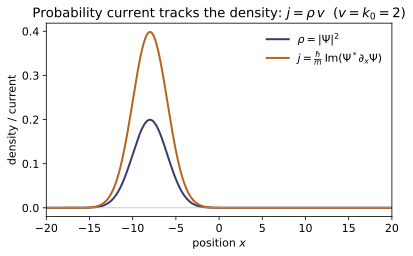
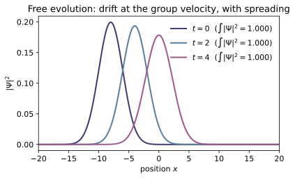
Example problems
Starting from the time-dependent Schrödinger equation and its conjugate (V real), show ∂|Ψ|²/∂t = −∇·j with j = (ℏ/m) Im(Ψ∇Ψ). Where exactly does the assumption that V is real get used? Check: continuity_residual(psi0, psi1, dx, dt) on a free-evolved packet is ~10⁻⁴, far below the ~0.12 size of ∂ₜρ itself. Answer: the $V$-terms cancel only because $V=V^$ (real); that single fact turns $\partial_t\rho$ into $-\nabla\!\cdot\mathbf j$.
Solve each equation for its time derivative,
and assemble $\partial_t\rho=\Psi^\partial_t\Psi+\Psi\,\partial_t\Psi^$:
The potential piece $-\tfrac{i}{\hbar}(V-V^)|\Psi|^2$ vanishes iff $V=V^$ — that is the one and only place reality of $V$ is used (a complex $V$ would leave a source). With the identity $\Psi^\nabla^2\Psi-\Psi\nabla^2\Psi^=\nabla\!\cdot(\Psi^\nabla\Psi-\Psi\nabla\Psi^)$,
Numerically the residual $\partial_t\rho+\partial_x j$ on a free-evolved packet is $1.6\times10^{-4}$, far below the $\sim0.12$ magnitude of $\partial_t\rho$ itself — the continuity equation holds to discretization error.
Show (ℏ/m) Im(Ψ∇Ψ) = (iℏ/2m)(Ψ∇Ψ − Ψ∇Ψ), and that j is real. Check: test_two_current_formulas_agree compares the two expressions on a Gaussian packet (equal to 10⁻¹²; imaginary part ~10⁻¹²). Answer: both equal $\tfrac{\hbar}{m}\mathrm{Im}(\Psi^\nabla\Psi)$ via $\mathrm{Im}\,z=(z-z^*)/2i$, and the current is real.
For any complex number $z$, $\mathrm{Im}\,z=\dfrac{z-z^}{2i}$. Take $z=\Psi^\nabla\Psi$; since $(\nabla\Psi)^=\nabla\Psi^$ its conjugate is $z^=\Psi\nabla\Psi^$, so
using $1/i=-i$ — exactly the second form. Reality is automatic: $\tfrac{\hbar}{m}\mathrm{Im}(\cdots)$ is $\hbar/m$ times a real number; equivalently the bracket $\Psi\nabla\Psi^-\Psi^\nabla\Psi=z^*-z=-2i\,\mathrm{Im}\,z$ is purely imaginary, and $i\times(\text{imaginary})$ is real. This is why the two arrays agree to $10^{-12}$ while the imaginary part of the second form is $\sim10^{-12}$ — one real current wearing two algebraic faces.
For Ψ = A e^{i(kx−ωt)}, compute ρ and j and show j = ρ(ℏk/m) = ρv. Interpret v. Check: prob_current(plane_wave(x,1.5), dx).mean()/prob_density(...).mean() ≈ 1.5 = k, and reverses sign for k → −k. Answer: $\rho=|A|^2$ and $j=\tfrac{\hbar k}{m}|A|^2=\rho v$ with $v=\hbar k/m=p/m$; $j$ flips sign with $k$.
For $\Psi=A\,e^{i(kx-\omega t)}$ the density is $\rho=|\Psi|^2=|A|^2$ — uniform and time-independent. The derivative is $\partial_x\Psi=ik\Psi$, so
and therefore
So $v$ is the de Broglie velocity: the probability fluid drifts rigidly at $v$, the same $\rho\mathbf v$ flux carried by a mass current (~CM-22). Sending $k\to-k$ reverses $v$, hence $j$. With $k=1.5$, prob_current(...).mean()/prob_density(...).mean() $\approx1.4991\approx k=v$ (the $\sim1\%$ deficit is central-difference error), and it changes sign for $k\to-k$ — exactly $j=\rho v$.
Show that any wavefunction that is real (up to a constant global phase) — e.g. an infinite-square-well eigenstate ψₙ ∝ sin(nπx/a) — has j = 0 everywhere. Why does this not contradict the particle "moving"? Check: prob_current(np.cos(1.5x), dx) is 0 to 10⁻¹². Answer: a real (constant-global-phase) $\Psi$ gives $\Psi^\nabla\Psi=\tfrac12\nabla(R^2)$, real, so $\mathbf j=0$; the standing state is equal $\pm k$ currents that cancel ($\langle p\rangle=0$ but $\langle p^2\rangle\neq0$).
Write $\Psi(x)=R(x)\,e^{i\alpha}$ with $R$ real and $\alpha$ a constant global phase. Then
which is real, so $\mathrm{Im}(\Psi^\nabla\Psi)=0$ and $\mathbf j=0$ everywhere. For the well mode $\psi_n\propto\sin(n\pi x/a)$ we have $R=\sin(n\pi x/a)$ real ($\alpha=0$), hence $\mathbf j\equiv0$. This does not contradict "motion": a real eigenstate is a standing wave, the equal superposition $\sin(kx)\propto e^{ikx}-e^{-ikx}$ of right- and left-movers whose currents are equal and opposite and cancel. There is real momentum content — $\langle p^2\rangle\neq0$, i.e. nonzero kinetic energy — but $\langle p\rangle=0$ and zero net flux, just as a standing wave on a string stores energy yet transports none. Thus prob_current(np.cos(1.5x), dx) is $0$ to $10^{-12}$ (in fact identically zero, since $\mathrm{Im}$ of a real array vanishes).
From ∂ₜρ + ∇·j = 0 and j → 0 at infinity, prove d/dt ∫|Ψ|² dV = 0. Check: total_probability stays 1.000000 across 50 free-evolution steps (test_normalization_conserved_under_free_evolution). Answer: $\dfrac{d}{dt}\!\int|\Psi|^2\,dV=-\oint_S\mathbf j\cdot d\mathbf A\to0$, so total probability is constant in time.
Integrate continuity over all space and pull the derivative out of the integral:
By the divergence theorem the right-hand side is a flux through the surface at infinity:
because any normalizable $\Psi$ — and with it $\mathbf j$ — decays to zero at infinity, killing the surface integral. Hence $\tfrac{d}{dt}\int|\Psi|^2\,dV=0$: normalized once, normalized forever, which is exactly what makes Schrödinger evolution consistent with the Born rule (~QM-02). Numerically total_probability holds at $1.000000$ across $50$ free-evolution steps (drift $<10^{-9}$) — global conservation confirmed.
Take Ψ = c₁ψ₁ + c₂ψ₂ with ψ₁, ψ₂ real energy eigenstates (E₁ ≠ E₂). Show the current oscillates at the Bohr frequency (E₂−E₁)/ℏ even though each ψₙ alone has j = 0 — the microscopic origin of dipole radiation (~QM-16). Check (optional): build two real well-states on the grid, add them with a relative phase e^{−i(E₂−E₁)t/ℏ}, and watch prob_current slosh back and forth. Answer: $j=\dfrac{\hbar}{m}\,c_1c_2\big(\psi_2\psi_1'-\psi_1\psi_2'\big)\sin\!\big[(E_2-E_1)t/\hbar\big]$ — a current oscillating at the Bohr frequency $\omega_{21}=(E_2-E_1)/\hbar$.
Stationary states evolve by a pure phase, so (taking $c_1,c_2$ real WLOG — a phase in $c_n$ only shifts the sine)
Form $\Psi^*\partial_x\Psi$. The diagonal pieces $c_1^2\psi_1\psi_1'+c_2^2\psi_2\psi_2'$ are real (the $\psi_n$ are real), so they drop out of $\mathrm{Im}$ — each state alone gives $j=0$, recovering P4. Only the cross terms remain:
Taking the imaginary part with $\mathrm{Im}\,e^{\pm i\omega_{21}t}=\pm\sin\omega_{21}t$,
The current sloshes sinusoidally at the Bohr frequency $\omega_{21}=(E_2-E_1)/\hbar$, though each $\psi_n$ alone carries none; its spatial moment $\frac{d}{dt}\langle x\rangle\propto\int j\,dx$ is the oscillating dipole that radiates at the transition frequency (~QM-16). Building two real well-states with relative phase $e^{-i(E_2-E_1)t/\hbar}$ and evaluating prob_current shows exactly this back-and-forth slosh, of period $2\pi\hbar/(E_2-E_1)$.
Write the continuity equation for mass (~CM-22), charge (~EM-14), probability (here), and phase space (~PK-01) in one table, identifying ρ and j in each. What new feature does EM-14 add that QM-04 lacks, and why? (Answer: a source term −J·E; probability has none because V is real.)
Every one of these laws has the same skeleton $\partial_t\rho+\nabla\!\cdot\mathbf j=0$; only the conserved "stuff" and its flux change:
Written out, the phase-space row is the collisionless Boltzmann/Liouville (Vlasov) equation $\partial_t f+\mathbf v\cdot\nabla_x f+\mathbf a\cdot\nabla_v f=0$. What EM-14 adds is a source: bookkeeping field energy (Poynting) instead of charge turns bare continuity into a balance law
where $-\mathbf J\cdot\mathbf E$ is the rate the field does work on charges (Joule heating) — energy is exchanged between field and matter, so the field-energy flux is not source-free. Probability has no such source because $V$ is real: in P1 the potential terms cancelled exactly, leaving $\partial_t\rho+\nabla\!\cdot\mathbf j=0$ with zero right-hand side. (A complex optical potential $V=V_R-iV_I$ breaks this, adding a sink $-\tfrac{2V_I}{\hbar}|\Psi|^2$ that models absorption — the direct analog of $-\mathbf J\cdot\mathbf E$.) This is the B2 capstone: the QM-04 code verifies the probability row numerically — continuity_residual $\sim10^{-4}$ and total_probability fixed at $1.000000$ — and the residual stays at discretization noise precisely because the law is source-free.
Run the worked code: cd QM/QM-04_probability_current_continuity/code && python3 probability_current.py
QM-05 — Formalism: Hilbert Space, Dirac Notation, Operators, Commutators
Quantum Mechanics trunk · QM/QM-05_formalism · open in the Teaching Network
States are abstract vectors $|\psi\rangle$ in a Hilbert space; the inner product $\langle\phi|\psi\rangle$; Dirac bra-ket notation; linear operators and their matrix representation; Hermitian operators = observables (real eigenvalues, orthonormal eigenvectors — the spectral theorem); commutators $[A,B]=AB-BA$; and the canonical commutator $[\hat x,\hat p]=i\hbar$. (Griffiths 3e, Ch. 3, with the commutator/ladder material of Ch. 2.)
House rule for this module: nothing about an operator is asserted — it is verified numerically against a closed form. Eigenvalues are checked real, eigenvectors checked orthonormal, $A=\sum_n\lambda_n|n\rangle\langle n|$ checked to reconstruct $A$, the Jacobi identity checked to vanish, and the canonical commutator checked honestly: it equals $i\hbar$ only on the interior of a finite truncation (see the caveat below).
Key equations
Figures
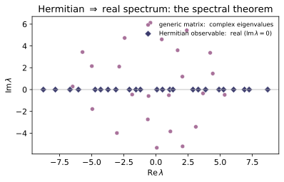
![The canonical commutator [x,p] assembled from ladder operators in the N=8 number basis (canonical_commutator), displayed as Im[x,p]. It equals +1 (= hbar in natural units) all along the interior diagonal -- i.e. [x,p]=i hbar -- and is exactly 0 off-diagonal. The single bottom-right corner reads -(N-1)=-7: the honest truncation artifact. No finite matrices can satisfy [x,p]=i hbar everywhere, because every commutator is traceless while tr(i hbar I) is not.](QM/QM-05_formalism/figures/fig2_canonical_commutator.svg)
Example problems
Show from $\langle\phi|\psi\rangle=\sum_i\phi_i^{}\psi_i$ that $\langle\phi|\psi\rangle=\langle\psi|\phi\rangle^{}$, and hence that $\langle\psi|\psi\rangle$ is real. (Griffiths 3e §3.1, Eq. 3.8, p.120.) Answer: swapping the arguments conjugates every term; with $\phi=\psi$ the sum is $\sum|\psi_i|^2\ge0$. Check: inner_product([1,1j],[1,2]) $=1-2j$ while inner_product([1,2],[1,1j]) $=1+2j$. (test_inner_product_conjugate_symmetry.)
Start from the definition $\langle\phi|\psi\rangle=\sum_i\phi_i^{*}\psi_i$ and swap the arguments:
which is conjugate symmetry. Setting $\phi=\psi$ gives $\langle\psi|\psi\rangle=\sum_i\phi_i^{}\psi_i\big|_{\phi=\psi}=\sum_i|\psi_i|^2$, a sum of non-negative reals, so it is real and $\ge0$. Numerically the bra is conjugated: inner_product([1,1j],[1,2]) $=1^{}\cdot1+(i)^{*}\cdot2=1-2i$, while reversing the slots gives $1+2i$ — the conjugate, exactly as the check reports.
An observable's expectation value $\langle Q\rangle=\langle\psi|\hat Q|\psi\rangle$ must be real for every state. Show this forces $\hat Q=\hat Q^\dagger$. (Griffiths 3e §3.2.1, Eqs. 3.16–3.17, p.123.) Answer: $\langle Q\rangle=\langle Q\rangle^{}$ for all $\psi$ means $\langle\psi|\hat Q\psi\rangle=\langle\hat Q\psi|\psi\rangle=\langle\psi|\hat Q^\dagger\psi\rangle$ for all $\psi$, i.e. $\hat Q=\hat Q^\dagger$. Check:* for Hermitian A, expectation(A, psi).imag $\approx0$; for a generic matrix it is nonzero. (test_hermitian_has_real_expectation_values.)
Reality of $\langle Q\rangle=\langle\psi|\hat Q\psi\rangle$ means $\langle Q\rangle=\langle Q\rangle^{*}$. Conjugate symmetry turns the right side into a statement about the adjoint:
using $\langle\hat Q\psi|\psi\rangle=\langle\psi|\hat Q^\dagger\psi\rangle$ from the definition of $\hat Q^\dagger$. So $\langle\psi|(\hat Q-\hat Q^\dagger)\psi\rangle=0$ for every $\psi$; polarization (apply it to $\psi+\phi$ and $\psi+i\phi$) extends this to all matrix elements $\langle\phi|(\hat Q-\hat Q^\dagger)\psi\rangle=0$, forcing $\hat Q=\hat Q^\dagger$. Hence expectation(A, psi).imag $\approx0$ exactly when A is Hermitian, and is nonzero for a generic matrix.
Prove that a Hermitian operator has (1) real eigenvalues and (2) orthogonal eigenvectors for distinct eigenvalues, and conclude $\hat A=\sum_n\lambda_n|n\rangle\langle n|$. (Griffiths 3e §3.3.1, p.128; spectral form §3.6, p.152.) Answer: (1) $\lambda\langle n|n\rangle=\langle n|\hat A n\rangle=\langle\hat A n|n\rangle=\lambda^{}\langle n|n\rangle\Rightarrow\lambda=\lambda^{}$. (2) $\lambda_n\langle m|n\rangle=\langle m|\hat A n\rangle=\langle\hat A m|n\rangle=\lambda_m\langle m|n\rangle$, so $\langle m|n\rangle=0$ when $\lambda_m\neq\lambda_n$. Check: w, V = spectral_decomposition(random_hermitian(8, seed=42)); then np.allclose(w.imag, 0), np.allclose(dagger(V)@V, np.eye(8)), and np.allclose(reconstruct_from_spectrum(w, V), random_hermitian(8, seed=42)). (test_spectral_theorem_real_eigenvalues, ..._orthonormal_eigenvectors, test_spectral_reconstruction.)
Let $\hat A|n\rangle=\lambda_n|n\rangle$ with $\hat A=\hat A^\dagger$. (1) Real eigenvalues: $\lambda_n\langle n|n\rangle=\langle n|\hat A n\rangle=\langle\hat A n|n\rangle=\lambda_n^{}\langle n|n\rangle$, and $\langle n|n\rangle\neq0$, so $\lambda_n=\lambda_n^{}\in\mathbb R$. (2) Orthogonality: for $\lambda_m\neq\lambda_n$,
so $(\lambda_n-\lambda_m)\langle m|n\rangle=0\Rightarrow\langle m|n\rangle=0$. The eigenvectors thus form a complete orthonormal basis, and inserting $\hat I=\sum_n|n\rangle\langle n|$ gives the spectral form $\hat A=\hat A\hat I=\sum_n\lambda_n|n\rangle\langle n|$. The check confirms w.imag$\approx0$, dagger(V)@V$=I$, and reconstruct_from_spectrum(w,V) rebuilds the matrix.
Show $[A,B]=-[B,A]$ and verify the Jacobi identity $[A,[B,C]]+[B,[C,A]]+[C,[A,B]]=0$ (so operators form a Lie algebra). (Griffiths 3e Eq. 2.48, p.59.) Answer: antisymmetry is immediate from $AB-BA$; expanding the nine double products in the Jacobi sum cancels them in pairs. Check: A,B,C = random_matrix(6,32),random_matrix(6,33),random_matrix(6,34); np.allclose(commutator(A,B), -commutator(B,A)); the Jacobi combination is $\approx0$. (test_commutator_definition_and_antisymmetry, test_jacobi_identity.)
Antisymmetry is immediate: $[A,B]=AB-BA=-(BA-AB)=-[B,A]$. For the Jacobi identity, expand one term, $[A,[B,C]]=A(BC-CB)-(BC-CB)A=ABC-ACB-BCA+CBA$, and likewise for the two cyclic rotations $A\to B\to C\to A$:
Adding all three, each of the six orderings $ABC,ACB,\dots$ appears once with $+$ and once with $-$, so the sum is $0$. Operators under $[\,\cdot\,,\cdot\,]$ therefore satisfy the Lie-algebra axioms, matching the check that commutator(A,B)$=-$commutator(B,A) and the Jacobi combination $\approx0$.
Show that for Hermitian $A,B$ the commutator $[A,B]$ is anti-Hermitian, so $i[A,B]$ is Hermitian. (This is why the uncertainty bound carries a factor $i$; Griffiths 3e §3.5, p.139.) Answer: $[A,B]^\dagger=(AB-BA)^\dagger=B^\dagger A^\dagger-A^\dagger B^\dagger=BA-AB=-[A,B]$. Check: with A,B = random_hermitian(5,35), random_hermitian(5,36), is_hermitian(1j*commutator(A,B)) is True. (test_commutator_of_hermitians_is_anti_hermitian.)
With $A=A^\dagger$ and $B=B^\dagger$, the adjoint reverses the product (and conjugates):
so $[A,B]$ is anti-Hermitian. Multiplying by $i$ flips the sign that the dagger pulls through:
so $i[A,B]$ is Hermitian — a genuine observable. This is the factor of $i$ in the generalized uncertainty bound. Accordingly is_hermitian(1j*commutator(A,B)) returns True for the random Hermitian pair.
Show that commuting Hermitian operators share a complete eigenbasis, while non-commuting ones cannot. (Griffiths 3e §3.5, p.139.) Answer: if $[A,B]=0$ and $A|n\rangle=\lambda_n|n\rangle$ (nondegenerate), then $A(B|n\rangle)=\lambda_n(B|n\rangle)$, so $B|n\rangle\propto|n\rangle$: the $|n\rangle$ diagonalize $B$ too. Generic Hermitian $A,B$ have $[A,B]\neq0$, so no common eigenbasis exists. Check: build A = U@np.diag([1,2,3,4,5])@dagger(U), B = U@np.diag([-2,.5,7,1,3])@dagger(U) with U = haar_unitary(5, seed=50): np.linalg.norm(commutator(A,B)) $\approx0$, and dagger(VA)@B@VA is diagonal. For random_hermitian pairs the off-diagonal is large. (test_compatible_observables_share_eigenbasis, test_incompatible_observables_do_not_share_eigenbasis.)
Suppose $[A,B]=0$ and $A|n\rangle=\lambda_n|n\rangle$ with $\lambda_n$ nondegenerate. Then
so $B|n\rangle$ is an eigenvector of $A$ with the same eigenvalue $\lambda_n$; nondegeneracy forces $B|n\rangle\propto|n\rangle$, i.e. $B|n\rangle=\mu_n|n\rangle$. Thus the eigenbasis of $A$ diagonalizes $B$ simultaneously. The check builds $A=U\,\mathrm{diag}(1..5)\,U^\dagger$ and $B=U\,\mathrm{diag}(-2,.5,7,1,3)\,U^\dagger$ from a common $U$, so they commute (np.linalg.norm(commutator(A,B))$\approx1.3\times10^{-14}$) and $A$'s eigenvectors $V_A$ render $V_A^\dagger B\,V_A$ diagonal. Two generic Hermitian matrices have $[A,B]\neq0$ and no shared eigenbasis.
With $\hat x=\sqrt{\hbar/2m\omega}\,(a+a^\dagger)$ and $\hat p=i\sqrt{\hbar m\omega/2}\,(a^\dagger-a)$, show $[\hat x,\hat p]=i\hbar[a,a^\dagger]$, which is $i\hbar$ when $[a,a^\dagger]=1$. (Griffiths 3e §2.3.1, Example 2.5 p.65; canonical relation Eq. 2.52, p.60.) Answer: the prefactors multiply to $i\hbar/2$, and $[a+a^\dagger,\,a^\dagger-a]=2[a,a^\dagger]$, giving $i\hbar[a,a^\dagger]$. Check: on the interior of an $N=8$ truncation, canonical_commutator(8)[:7,:7] $\approx i\,I_7$ (with $\hbar=1$). (test_canonical_commutator_holds_on_interior, test_ladder_relations.)
The scalar prefactors multiply to
and the operator part expands using $[a,a]=[a^\dagger,a^\dagger]=0$ and $[a^\dagger,a]=-[a,a^\dagger]$:
Therefore $[\hat x,\hat p]=\tfrac{i\hbar}{2}\cdot2[a,a^\dagger]=i\hbar\,[a,a^\dagger]$, which is $i\hbar$ wherever $[a,a^\dagger]=1$. With $\hbar=1$, canonical_commutator(8)[:7,:7]$\approx i\,I_7$ on the interior, as the check confirms.
Prove that no finite matrices satisfy $[\hat x,\hat p]=i\hbar I$, and identify exactly where the $N$-level number-basis $[\hat x,\hat p]$ deviates from $i\hbar I$. (Mathematical theorem — Wintner 1947 / Wielandt 1949; see ../refs.md.) Answer: $\mathrm{tr}[\hat x,\hat p]=0$ for any finite matrices, but $\mathrm{tr}(i\hbar I)=i\hbar N\neq0$ — contradiction. Concretely $[a,a^\dagger]=I-N|N{-}1\rangle\langle N{-}1|$, so $[\hat x,\hat p]=i\hbar(I-N|N{-}1\rangle\langle N{-}1|)$: correct on the interior, but the bottom-right corner is $-i\hbar(N-1)$. Check: C = canonical_commutator(8); abs(np.trace(C)) < 1e-9 (zero), while C[7,7] $=-7i$ (the artifact, $=-i\hbar(N-1)$), and removing that one entry leaves C - 1j*np.eye(8) $\approx0$. (test_canonical_commutator_truncation_artifact.)
Any commutator of finite matrices is traceless, since $\mathrm{tr}(\hat x\hat p)=\mathrm{tr}(\hat p\hat x)$, so $\mathrm{tr}[\hat x,\hat p]=0$; but $\mathrm{tr}(i\hbar I)=i\hbar N\neq0$ — the two cannot be equal, so $[\hat x,\hat p]=i\hbar I$ has no finite-dimensional representation. The deviation is localized: $a^\dagger a=\mathrm{diag}(0,\dots,N-1)$ is exact, but $aa^\dagger$ loses the rung $a^\dagger|N-1\rangle$ (it would land on the discarded $|N\rangle$), giving
So it is $i\hbar$ on the interior but the corner reads $-i\hbar(N-1)$. For $N=8$ the code gives np.trace(C)$\approx0$ and C[7,7]$=-7i=-i\hbar(N-1)$; zeroing that one entry makes C - 1j*np.eye(8)$\approx0$.
For an orthonormal basis $\{|n\rangle\}$ show $\sum_n|n\rangle\langle n|=\hat I$, and that this is the statement of completeness. (Griffiths 3e §3.6.2, Eq. 3.93, p.152.) Answer: acting on any $|\psi\rangle=\sum_m c_m|m\rangle$, $\sum_n|n\rangle\langle n|\psi\rangle=\sum_n c_n|n\rangle=|\psi\rangle$. Check: V = haar_unitary(6, seed=12); sum(projector(V[:,n]) for n in range(6)) $\approx I_6$. (test_resolution_of_identity.)
Let $\{|n\rangle\}$ be orthonormal, $\langle n|m\rangle=\delta_{nm}$, and complete (it spans $\mathcal H$). Any state expands as $|\psi\rangle=\sum_m c_m|m\rangle$ with $c_m=\langle m|\psi\rangle$. Apply the candidate operator:
Since this reproduces every $|\psi\rangle$, the operator is the identity: $\sum_n|n\rangle\langle n|=\hat I$. The content is completeness — the projectors leave nothing out only if the basis spans the whole space. Numerically, summing the projectors onto the 6 columns of a unitary, sum(projector(V[:,n]) for n in range(6)), returns $\approx I_6$.
Run the worked code: cd QM/QM-05_formalism/code && python3 formalism.py
QM-06 — Measurement Postulates
Quantum Mechanics trunk · QM/QM-06_measurement · open in the Teaching Network
What a measurement is, as evaluable linear algebra — the postulates of Griffiths 3e Ch. 3:
1. Observable ↔ Hermitian operator. Every measurable $A$ is a Hermitian $\hat A$; its real eigenvalues are the only possible readings; its eigenvectors form an orthonormal complete basis. 2. Generalized statistical interpretation. Measuring $A$ on $|\psi\rangle$ yields eigenvalue $a_n$ with $P(a_n)=|\langle a_n|\psi\rangle|^2$ (and the $P(a_n)$ sum to 1) — Born in the eigenbasis of the measured operator. 3. Expectation value. $\langle A\rangle=\sum_n a_nP(a_n)=\langle\psi|\hat A|\psi\rangle$ — two routes to one number. 4. Collapse. After reading $a_n$ the state jumps to the normalized projection onto that eigenspace; a re-measurement then returns $a_n$ for sure. 5. Compatible vs incompatible. Commuting observables share an eigenbasis and don't disturb each other; non-commuting ones (e.g. $\sigma_x$, $\sigma_z$) do.
House rule for this module: nothing is asserted, everything is checked. Σ P = 1, the two expectation routes, collapse idempotence, and the commuting/non-commuting disturbance are all verified numerically against closed forms in test_measurement.py — the spin-½ Stern-Gerlach cascade is the worked example.
Key equations
Figures
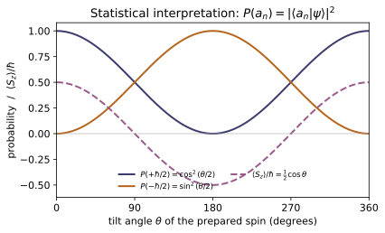
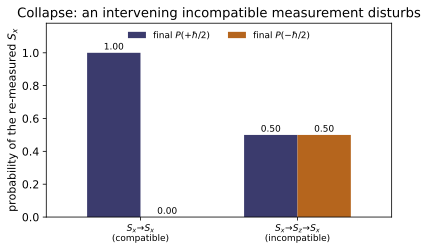
Example problems
Show that a Hermitian operator has (a) real eigenvalues and (b) an orthonormal, complete set of eigenvectors — the two properties that make it a legitimate observable (real meter readings; a full set of distinguishable outcomes). Answer: $\hat A=\hat A^\dagger\Rightarrow a_n\in\mathbb R$ and $\langle a_m|a_n\rangle=\delta_{mn}$ with $\sum_n|a_n\rangle\langle a_n|=\mathbb 1$ (Griffiths §3.3, p.127). Check: eigensystem(A) returns real eigenvalues; for a random Hermitian A, V.conj().T @ V and V @ V.conj().T are both the identity. (test_hermitian_real_eigenvalues, test_eigenbasis_orthonormal_and_complete.)
Let $\hat A=\hat A^\dagger$ with $\hat A|a_n\rangle=a_n|a_n\rangle$ and $\langle a_n|a_n\rangle=1$. Sandwiching the operator and moving it onto the bra (Hermiticity) gives
so $a_n\in\mathbb R$ — real meter readings. For two eigenvectors, $\langle a_m|\hat A|a_n\rangle$ read rightward is $a_n\langle a_m|a_n\rangle$ and read leftward (Hermiticity, $a_m$ real) is $a_m\langle a_m|a_n\rangle$, so $(a_n-a_m)\langle a_m|a_n\rangle=0$ forces $\langle a_m|a_n\rangle=0$ when $a_n\neq a_m$ (degenerate blocks are orthogonalized by Gram–Schmidt). The spectral theorem then makes the normalized set complete, $\sum_n|a_n\rangle\langle a_n|=\mathbb 1$. This is exactly why eigensystem(A) returns real eigenvalues and V.conj().T @ V = V @ V.conj().T = I.
A particle is in state $|\psi\rangle=\sum_n c_n|a_n\rangle$. What values can a measurement of $A$ return, with what probabilities, and why do they form a probability distribution? Answer: one of the eigenvalues $a_n$, with $P(a_n)=|c_n|^2=|\langle a_n|\psi\rangle|^2$; completeness + normalization give $\sum_n P(a_n)=1$. Check: for any state and Hermitian A, outcome_probabilities(psi, A)[1].sum() $=1$. (test_probabilities_sum_to_one, test_born_rule_nondegenerate.)
A measurement can only return one of the eigenvalues $a_n$ of $\hat A$. Projecting the expansion $|\psi\rangle=\sum_n c_n|a_n\rangle$ onto $\langle a_m|$ isolates the amplitude $c_m=\langle a_m|\psi\rangle$, and the generalized Born rule assigns
These form a probability distribution because completeness $\sum_n|a_n\rangle\langle a_n|=\mathbb 1$ and normalization give
Hence outcome_probabilities(psi, A)[1].sum() $=1$ for any state and any Hermitian A.
Show $\langle A\rangle=\sum_n a_nP(a_n)$ equals $\langle\psi|\hat A|\psi\rangle$, and that it is real for a Hermitian $\hat A$. Answer: substitute $|\psi\rangle=\sum_n c_n|a_n\rangle$ into the sandwich and use $\hat A|a_n\rangle=a_n|a_n\rangle$, $\langle a_m|a_n\rangle=\delta_{mn}$: $\langle\psi|\hat A|\psi\rangle=\sum_n a_n|c_n|^2$. Check: expectation(psi, A) computes both forms and asserts they agree; it returns a real number. (test_expectation_two_ways.)
Insert $|\psi\rangle=\sum_n c_n|a_n\rangle$ into the sandwich and use $\hat A|a_n\rangle=a_n|a_n\rangle$ with $\langle a_m|a_n\rangle=\delta_{mn}$:
So the "average of outcomes" and the "sandwich" are the same number. It is real because every $a_n\in\mathbb R$ and every $|c_n|^2\ge0$ — equivalently $\langle\psi|\hat A|\psi\rangle^*=\langle\psi|\hat A^\dagger|\psi\rangle=\langle\psi|\hat A|\psi\rangle$. expectation(psi, A) evaluates both the spectral and sandwich forms and asserts they agree, returning that real value.
For which states is a measurement of $A$ certain (zero spread)? Compute the variance of $\sigma_z$ in $|0\rangle$ (spin-up-$z$) and in $|{+x}\rangle$. Answer: the determinate states are exactly the eigenstates of $\hat A$ ($\sigma_A=0\Leftrightarrow\hat A\psi=q\psi$). $\mathrm{Var}_{|0\rangle} (\sigma_z)=0$ (eigenstate); $\mathrm{Var}_{|+x\rangle}(\sigma_z)=1$ ($\langle\sigma_z\rangle=0$, $\langle\sigma_z^2\rangle=1$). Check: variance(spin_state(0), sigma_z) $\approx0$; variance(spin_state(np.pi/2,0), sigma_z) $\approx1$. (test_variance_nonneg_and_determinacy, test_eigenstate_is_determinate.)
Write the spread as $\sigma_A^2=\langle(\hat A-\langle A\rangle)^2\rangle=\lVert(\hat A-\langle A\rangle)|\psi\rangle\rVert^2\ge0$, which vanishes iff $(\hat A-\langle A\rangle)|\psi\rangle=0$, i.e. $|\psi\rangle$ is an eigenstate ($\hat A\psi=q\psi$ with $q=\langle A\rangle$). For $|0\rangle$: $\sigma_z|0\rangle=+|0\rangle$ is an eigenstate, so $\mathrm{Var}=0$. For $|{+x}\rangle=\tfrac1{\sqrt2}(1,1)$ the diagonal $\sigma_z=\mathrm{diag}(1,-1)$ gives $\langle\sigma_z\rangle=\tfrac12(1-1)=0$, while $\sigma_z^2=\mathbb 1\Rightarrow\langle\sigma_z^2\rangle=1$, so
This matches variance(spin_state(0), sigma_z) $\approx0$ and variance(spin_state(np.pi/2,0), sigma_z) $\approx1$.
After a measurement of $A$ returns $a_n$, the state is $\hat P_n|\psi\rangle/\lVert\hat P_n|\psi\rangle\rVert$. Show that an immediate re-measurement returns $a_n$ with probability 1, and connect this to the fact that projectors satisfy $\hat P_n^2=\hat P_n$. Answer: the collapsed state is an eigenstate of $\hat A$ (eigenvalue $a_n$), so $P'(a_n)=\lVert\hat P_n\psi'\rVert^2=1$; idempotence $\hat P_n^2=\hat P_n$ is exactly why the second projection changes nothing. Check: s = collapse(psi, A, n); outcome_probabilities(s, A)[1][n] $=1$. (test_collapse_idempotent.)
Collapse sends $|\psi\rangle\to|\psi'\rangle=\hat P_n|\psi\rangle/\lVert\hat P_n|\psi\rangle\rVert$. The weight of the same outcome on re-measurement is $P'(a_n)=\lVert\hat P_n|\psi'\rangle\rVert^2$. Using idempotence $\hat P_n^2=\hat P_n$,
so $\hat P_n$ leaves $|\psi'\rangle$ untouched and $P'(a_n)=\lVert\psi'\rVert^2=1$. The collapsed state is already an $a_n$-eigenstate, so the second projection changes nothing — this is the reproducibility checked by s = collapse(psi, A, n) then outcome_probabilities(s, A)[1][n] $=1$.
A spin-½ is prepared pointing at polar angle $\theta$ from $\hat z$. (a) What is $\langle\sigma_z\rangle$? (b) If it is prepared along $\hat x$ ($\theta=90^\circ$) and you measure $\sigma_z$, what are the probabilities? Answer: (a) $\langle\sigma_z\rangle=\cos\theta$ (so $\langle S_z\rangle= \tfrac\hbar2\cos\theta$ — the spin-½ Malus law). (b) $P(\pm1)=\tfrac12$ each: $\hat z$ and $\hat x$ are mutually unbiased because $[\sigma_x,\sigma_z]\neq0$. Check: expectation(spin_state(np.pi/3), sigma_z) $=0.5$ ($\cos60^\circ$); outcome_probabilities(spin_state(np.pi/2,0), sigma_z) $\to(\,[-1,1],[0.5,0.5]\,)$. (test_spin_expectation_law, test_spin_born_probabilities.)
The prepared state is $|{+n}\rangle=(\cos\tfrac\theta2,\,e^{i\phi}\sin\tfrac\theta2)$. (a) With $\sigma_z=\mathrm{diag}(1,-1)$,
the spin-½ Malus law (so $\langle S_z\rangle=\tfrac\hbar2\cos\theta$); at $\theta=60^\circ$ this is $\cos60^\circ=\tfrac12$. (b) For $\theta=90^\circ$, $|{+x}\rangle=\tfrac1{\sqrt2}(1,1)$, and the $\sigma_z$-eigenstates are $|0\rangle,|1\rangle$, so
Confirmed by expectation(spin_state(np.pi/3), sigma_z) $=0.5$ and outcome_probabilities(spin_state(np.pi/2,0), sigma_z) $\to([-1,1],[0.5,0.5])$.
Prepare $|{+x}\rangle$, so $\sigma_x$ is certain to read $+1$. (a) Compatible case: re-measuring $\sigma_x$ (or any commuting observable then $\sigma_x$) still gives $+1$ for sure. (b) Incompatible case: measure $\sigma_z$ in between, then $\sigma_x$ again — what is $P(\sigma_x=+1)$ now? Answer: (a) $+1$ with probability 1 — commuting observables share an eigenbasis and do not disturb (Griffiths §3.5.1, p.139). (b) $P(+1)=\tfrac12$: the intervening $\sigma_z$ collapses the state to a $\sigma_z$-eigenstate, which is an equal superposition of $\sigma_x$ eigenstates, so the once-certain outcome is now random. Noncommuting operators share no complete common eigenbasis (Prob. 3.16). Check: outcome_probabilities(spin_state(np.pi/2,0), sigma_x)[1] $=[0,1]$ ($+1$ sure); after collapse(..., sigma_z, index_of(sigma_z,+1)) the $\sigma_x$ probabilities become $[0.5, 0.5]$. (test_incompatible_randomized, test_compatible_no_disturbance.)
(a) If $[\hat B,\sigma_x]=0$ the two share an eigenbasis, so measuring $\sigma_x=+1$ leaves the state a simultaneous eigenstate and a later $\sigma_x$ still reads $+1$ — no disturbance. (b) Write $|{+x}\rangle=\tfrac1{\sqrt2}(|0\rangle+|1\rangle)$. The intervening $\sigma_z$ measurement collapses it to $|0\rangle$ (or $|1\rangle$). Re-expanding that result in the $\sigma_x$-basis, $|0\rangle=\tfrac1{\sqrt2}(|{+x}\rangle+|{-x}\rangle)$, gives
Because $\sigma_z$ fails to commute, $[\sigma_x,\sigma_z]=-2i\sigma_y\neq0$, it shares no common eigenbasis with $\sigma_x$ and randomizes the once-certain outcome. So outcome_probabilities(spin_state(np.pi/2,0), sigma_x)[1] $=[0,1]$, but after collapse(..., sigma_z, index_of(sigma_z,+1)) the $\sigma_x$ probabilities become $[0.5,0.5]$.
Run the worked code: cd QM/QM-06_measurement/code && python3 measurement.py
QM-07 — Uncertainty Principle & Ehrenfest's Theorem
Quantum Mechanics trunk · QM/QM-07_uncertainty · open in the Teaching Network
The position–momentum uncertainty relation, its generalization to any pair of observables, the state that saturates it, and the theorem that pulls classical mechanics back out — all as quantities you compute and check against closed forms:
1. Position–momentum $\sigma_x\sigma_p\ge\hbar/2$ for states on a 1-D grid, with $\hat p=-i\hbar\,d/dx$ applied spectrally (FFT). 2. Generalized (Robertson) $\sigma_A\sigma_B\ge\tfrac12|\langle[\hat A,\hat B]\rangle|$ for Hermitian $A,B$, verified on finite matrices (spin-$\tfrac12$) — with the Schwarz inequality derived step by step (notes §2.1) and every link of the proof chain checked separately (test_uncertainty_chain_stepwise). 3. Minimum-uncertainty packet — the Gaussian saturates the bound exactly; the oscillator eigenstates give $\sigma_x\sigma_p=(n+\tfrac12)\hbar$. 4. Ehrenfest's theorem $d\langle x\rangle/dt=\langle p\rangle/m$, $d\langle p\rangle/dt=-\langle V'(x)\rangle$, by time-evolving a packet in free space and a harmonic well; the SHO centre traces the classical oscillation.
House rule for this module: nothing is asserted, everything is measured on a state. Every bound is checked numerically against its analytic value — the Gaussian's $\hbar/2$, the oscillator's $n+\tfrac12$, spin's $(\hbar/2)|\langle S_z\rangle|$, and the two Ehrenfest rates against the recorded $\langle p\rangle$ and the mean force. Natural units $\hbar=m=1$.
Key equations
Figures
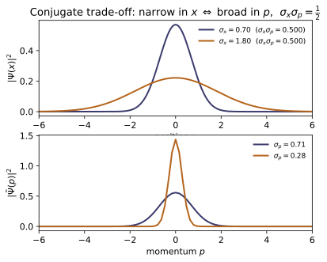

Example problems
Show that the Gaussian $\psi\propto e^{-(x-x_0)^2/4\sigma^2}e^{ip_0x}$ has $\sigma_x=\sigma$, $\sigma_p=1/2\sigma$, and therefore saturates the bound, $\sigma_x\sigma_p=\tfrac12$, for any width or boost. Answer: equality holds because the Gaussian solves the minimum-uncertainty ODE $(\hat p-\langle p\rangle)\psi=ia(\hat x-\langle x\rangle)\psi$ (Griffiths Eq. 3.69). Check: uncertainty_product(gaussian_packet(x, sigma=1.3, p0=0.7), x, dx) ≈ 0.5 for x, dx = grid(40, 2048). (test_gaussian_saturates, test_gaussian_components.)
With $\hbar=1$, the density $|\psi|^2\propto e^{-(x-x_0)^2/2\sigma^2}$ is a Gaussian of variance $\sigma^2$, so $\langle x\rangle=x_0$ and $\sigma_x=\sigma$. The boost $e^{ip_0x}$ moves $\langle p\rangle$ to $p_0$ without changing the spread; the Fourier transform $\tilde\psi(p)$ is again Gaussian, of width $\hbar/2\sigma=1/2\sigma$, so $\sigma_p=1/2\sigma$. Hence
for every $\sigma,p_0$. Equality is forced because $\hat p\psi=\bigl[i(x-x_0)/2\sigma^2+p_0\bigr]\psi$, i.e. $(\hat p-\langle p\rangle)\psi=ia(\hat x-\langle x\rangle)\psi$ with $a=1/2\sigma^2$ real — exactly the minimum-uncertainty condition (Schwarz tight, $\operatorname{Re}z$ dropped). uncertainty_product(gaussian_packet(x, sigma=1.3, p0=0.7), x, dx) returns $0.49999\ldots\approx0.5$.
The oscillator eigenstate $\psi_n\propto H_n(x)e^{-x^2/2}$ has $\sigma_x=\sigma_p=\sqrt{n+\tfrac12}$. Find $\sigma_x\sigma_p$ and identify the one state that saturates the bound. Answer: $\sigma_x\sigma_p=n+\tfrac12$; only the ground state $n=0$ gives $\tfrac12$ (it is the minimum-uncertainty Gaussian). Excited states strictly exceed it. Check: uncertainty_product(ho_eigenstate(x, n), x, dx) ≈ n+0.5 for n=0..3. (test_ho_eigenstates_product.)
Multiplying the two equal spreads,
with equality only at $n=0$. The ground state $\psi_0\propto H_0(x)e^{-x^2/2}=e^{-x^2/2}$ is exactly the minimum-uncertainty Gaussian of P1 (width $\sigma=1/\sqrt2$, so $\sigma_x=\sigma_p=1/\sqrt2$ and the product is $\tfrac12$). Each excitation adds one full quantum $\hbar=1$ to the product, so every $n\ge1$ state is strictly fuzzier. uncertainty_product(ho_eigenstate(x, n), x, dx) returns $0.5,\,1.5,\,2.5,\,3.5$ for $n=0,1,2,3$ — i.e. $n+\tfrac12$.
Build a non-Gaussian state (e.g. a two-bump "cat" $\psi\propto g(x{+}3)+g(x{-}3)$) and check that its product is consistent with, but strictly above, the bound. Answer: any non-Gaussian has $\sigma_x\sigma_p>\tfrac12$ (the Gaussian is the unique minimizer). Check: with cat = gaussian_packet(x,x0=-3)+gaussian_packet(x,x0=3), uncertainty_product(cat, x, dx) $>0.5$. (test_uncertainty_lower_bound_holds.)
Being non-Gaussian, the cat must lie strictly above the bound (P1 uniqueness). Concretely, with unit-width bumps at $x=\pm3$ and $\langle x\rangle=0$, the density has $\langle x^2\rangle\approx\sigma^2+3^2=10$, so $\sigma_x\approx\sqrt{10}\approx3.15$; the coherent superposition prints interference fringes in $\tilde\psi(p)$ that hold $\sigma_p\approx0.47$. Their product
is comfortably consistent with — but far from saturating — the inequality. uncertainty_product(cat, x, dx) returns $1.4935$, confirming $>0.5$.
For spin-$\tfrac12$, $[\hat S_x,\hat S_y]=i\hbar\hat S_z$. Show the Robertson bound is $\sigma_{S_x}\sigma_{S_y}\ge\tfrac\hbar2|\langle\hat S_z\rangle|$ and find a state that saturates it. Answer: $|{\uparrow_z}\rangle$ saturates it: $\sigma_{S_x}=\sigma_{S_y}=\tfrac\hbar2$, $\langle\hat S_z\rangle=\tfrac\hbar2$, so both sides equal $\hbar^2/4$. A state off the $x$–$z$ Bloch plane makes the inequality strict. Check: Sx,Sy,Sz = spin_ops(); std(Sx,[1,0])*std(Sy,[1,0]) = generalized_bound(Sx,Sy,[1,0]) = 0.25; the complex state in test_spin_strict_case gives a strict gap. (test_spin_saturation_upz, test_spin_bound_holds.)
Feed $[\hat S_x,\hat S_y]=i\hbar\hat S_z$ into the Robertson bound:
For $|{\uparrow_z}\rangle=(1,0)$, a $\hat S_z$ eigenstate with $\langle\hat S_z\rangle=\hbar/2$, the RHS is $\hbar^2/4$. Since $\hat S_x=\tfrac\hbar2\sigma_x$ with $\sigma_x^2=\mathbb 1$, we get $\langle S_x\rangle=0$, $\langle S_x^2\rangle=\hbar^2/4$, so $\sigma_{S_x}=\hbar/2$; identically $\sigma_{S_y}=\hbar/2$, making the LHS $\hbar^2/4$ as well — saturation. In $\hbar=1$ units both sides equal $0.25$, exactly what std(Sx,[1,0])*std(Sy,[1,0]) and generalized_bound(Sx,Sy,[1,0]) return.
Show that when $[\hat A,\hat B]=0$ the bound vanishes, so $A$ and $B$ can be sharp simultaneously (they share a complete eigenbasis), whereas noncommuting ("incompatible") observables cannot. Answer: the RHS $\tfrac12|\langle[\hat A,\hat B]\rangle|$ is identically $0$ for commuting operators; e.g. two diagonal matrices. Check: for A=diag(1,2,3), B=diag(5,7,11): commutator(A,B) is zero and generalized_bound(A,B,[1,1,1]) ≈ 0, while std(A,·)·std(B,·) ≥ 0. (test_bound_zero_for_commuting, test_pauli_commutators.)
The Robertson right-hand side is $\tfrac12\lvert\langle[\hat A,\hat B]\rangle\rvert$. If $[\hat A,\hat B]=0$ it is identically $0$, so $\sigma_A\sigma_B\ge0$ is vacuous — nothing forbids both spreads vanishing at once, and indeed commuting Hermitian operators are simultaneously diagonalizable (a shared complete eigenbasis). Two diagonal matrices commute entrywise:
So commutator(A,B) is the zero matrix and generalized_bound(A,B,[1,1,1]) $=0.0$, while each $\sigma_A,\sigma_B\ge0$ separately. Incompatible (noncommuting) observables, by contrast, carry a nonzero RHS and cannot both be sharp.
A free Gaussian packet is launched with mean momentum $p_0$. Verify $d\langle x\rangle/dt=\langle p\rangle/m$ and that $\langle p\rangle$ is conserved (no force). Answer: the centroid drifts as $\langle x\rangle(t)=\langle x\rangle_0+p_0t/m$ with $\langle p\rangle=p_0$ fixed; $d\langle p\rangle/dt=-\langle V'\rangle=0$. Check: split_step_evolve(gaussian_packet(x,p0=1.5), x, V=0.0, dt=0.02, nsteps=120) gives gradient(xs,t) ≈ ps/M and constant ps. (test_ehrenfest_free.)
Ehrenfest's theorem reads $\dfrac{d\langle x\rangle}{dt}=\dfrac{\langle p\rangle}{m}$ and $\dfrac{d\langle p\rangle}{dt}=-\langle V'(\hat x)\rangle$. With $V=0$ the force $V'=0$, so $\langle p\rangle$ stays fixed at its initial value $p_0$ and
a straight drift. The split-step run confirms it: at the midpoint gradient(xs,t) $=1.500$ equals ps/M $=1.500$, and ps is constant to $\sim5\times10^{-15}$ across all 120 steps. So $d\langle x\rangle/dt=\langle p\rangle/m$ with $d\langle p\rangle/dt=0$, as required.
Evolve a packet in $V=\tfrac12 m\omega^2x^2$. Show $d\langle p\rangle/dt=-\langle V'(x)\rangle$ and that the centre obeys the classical oscillation $\langle x\rangle(t)=x_0\cos\omega t+(p_0/m\omega)\sin\omega t$. Answer: because $V'$ is linear, $\langle V'(x)\rangle=V'(\langle x\rangle)=m\omega^2\langle x\rangle$, so the Ehrenfest equations close into Hamilton's equations for $(\langle x\rangle,\langle p\rangle)$ — the classical SHO, exactly. Check: over one period, max|xs - classical_sho(t, x0, p0, omega)| $\sim10^{-5}$ and gradient(ps,t) ≈ Fs. (test_sho_classical_limit, test_ehrenfest_harmonic.)
Here $V=\tfrac12 m\omega^2x^2$ has the linear derivative $V'(x)=m\omega^2x$, so the mean force is exact: $\langle V'(\hat x)\rangle=m\omega^2\langle x\rangle=V'(\langle x\rangle)$. Ehrenfest then closes into a self-contained pair for $(\langle x\rangle,\langle p\rangle)$,
whose solution is the classical SHO $\langle x\rangle(t)=x_0\cos\omega t+(p_0/m\omega)\sin\omega t$. Over one period the code gives max|xs - classical_sho| $\approx6.0\times10^{-5}\sim10^{-5}$, and at $t=T/4$ gradient(ps,t) $\approx$ Fs (both $\approx-0.0024$) — the packet centre rides the classical trajectory exactly.
The first inequality of the uncertainty proof is $\langle f|f\rangle\langle g|g\rangle\ge|\langle f|g\rangle|^2$. Prove it from the inner-product axioms alone, and state exactly when it becomes an equality. Answer: subtract from $g$ its projection along $f$, $h=g-\frac{\langle f|g\rangle}{\langle f|f\rangle}f$; expanding $\langle h|h\rangle\ge0$ gives $\langle f|f\rangle\langle g|g\rangle-|\langle f|g\rangle|^2=\langle f|f\rangle\langle h|h\rangle\ge0$. Equality iff $h=0$, i.e. $g=cf$. Check: schwarz_residual_identity(f, g) returns the gap, $\langle f|f\rangle\langle h|h\rangle$ (equal to round-off) and $\langle f|h\rangle$ ($=0$) for random states; schwarz_gap(f, c*f) $=0$. (test_schwarz_inequality_random, test_schwarz_projection_identity, test_schwarz_saturation.)
(Griffiths's Problem A.5, hint and all — the lemma behind P4 and the whole of §2 of the notes.) If $\langle f|f\rangle=0$ then $f=0$ and both sides vanish, so let $\langle f|f\rangle>0$ and define
$g$ minus its component along $f$. First, $h\perp f$:
Next expand $\langle h|h\rangle$ with $c=\langle f|g\rangle/\langle f|f\rangle$ (antilinear first slot, linear second):
By conjugate symmetry $\langle g|f\rangle=\langle f|g\rangle^*$, each of the last three terms equals $|\langle f|g\rangle|^2/\langle f|f\rangle$ (two cancel), so
Equality forces $\langle h|h\rangle=0$, hence $h=0$, hence $g=cf$ — one state a multiple of the other. (In §3 of the notes, demanding this and $\operatorname{Re}\langle f|g\rangle=0$ makes $c$ pure imaginary and turns the condition into the minimum-uncertainty ODE whose solution is the Gaussian.) Numerically, for 300 random 4-component kets the gap and $\langle f|f\rangle\langle h|h\rangle$ agree to $10^{-9}$ with $\langle f|h\rangle=0$; setting $g=(2-0.7i)f$ closes the gap to $10^{-9}$, and adding an orthogonal piece $w$ reopens it by exactly $\langle f|f\rangle\langle w|w\rangle$.
Run the worked code: cd QM/QM-07_uncertainty/code && python3 uncertainty.py
QM-08 — One-dimensional problems: wells, step & barrier, tunnelling
Quantum Mechanics trunk · QM/QM-08_1d_problems · open in the Teaching Network
The handful of 1-D potentials that can be solved exactly, and that fix the whole vocabulary of QM — quantization, parity, tunnelling, resonance — as functions you can evaluate:
1. Infinite square well — the cleanest bound-state ladder $E_n = n^2\pi^2\hbar^2/2mL^2$; recovered here numerically by a finite-difference eigensolver that works for any potential. 2. Finite square well — a finite number of bound states (counted from the transcendental/graphical condition) sitting below the well top. 3. Delta-function well — exactly one bound state, $E=-m\alpha^2/2\hbar^2$, recovered as the zero-width limit of a finite well. 4. Free particle / wave packets — the dispersive relation $\omega=\hbar k^2/2m$, group vs phase velocity, and the spreading of a Gaussian packet. 5. Scattering — the step ($R+T=1$, current-weighted) and the rectangular barrier: tunnelling ($T>0$ for $E<V_0$) and over-barrier resonances ($T=1$ at $k a=n\pi$).
House rule for this module: the analytic scattering coefficients are not just quoted — each is independently reproduced by a transfer-matrix solve of the same piecewise-constant potential, and the bound-state spectra come from a finite-difference eigensolver checked against the closed forms. The tests are the verification.
Key equations
Figures
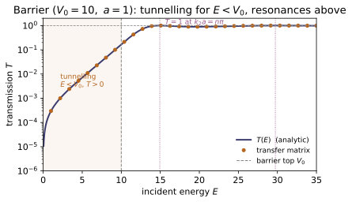
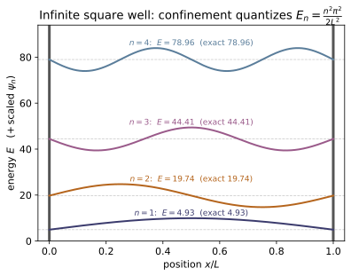
Example problems
Show that confining a free particle to $0<x<L$ quantizes its energy as $E_n=n^2\pi^2\hbar^2/2mL^2$, and that a numerical eigensolver on a grid recovers this from the bare Schrödinger operator. (The walls enter only as boundary conditions $\psi=0$.) Answer: $E_1:E_2:E_3=1:4:9$; for $L=1$, $E_1=\pi^2/2\approx4.93$. Check: bound_states(np.zeros(2001), np.linspace(0,1,2001), n_states=3)[0] $\approx$ [infinite_well_energy(n,1.0) for n in (1,2,3)]. (test_infinite_well_eigenvalues, test_infinite_well_orthonormal.) (Griffiths 3e §2.2, p.49–50.)
Inside the well $V=0$, so the TISE is $\psi''=-k^2\psi$ with $k=\sqrt{2mE}/\hbar$, giving $\psi=A\sin kx+B\cos kx$. The wall condition $\psi(0)=0$ kills the cosine ($B=0$); $\psi(L)=0$ then forces $\sin kL=0$, i.e. $kL=n\pi$. Therefore
so $E_1:E_2:E_3=1:4:9$, and for $L=1,\ \hbar=m=1$, $E_1=\pi^2/2\approx4.9348$. The finite-difference eigensolver, which only knows $V=0$ and the Dirichlet walls, returns $[4.9348,\,19.7392,\,44.4131]$ — matching infinite_well_energy(n,1.0) and confirming quantization comes purely from confinement.
For the well $V=-V_0$ on $|x|<a$, show the number of bound states is finite and equals $\lceil 2z_0/\pi\rceil$ with $z_0=\frac a\hbar\sqrt{2mV_0}$, and that every level sits in $-V_0<E<0$. Take $V_0=15$, $a=1$. Answer: $z_0=\sqrt{30}\approx5.48$, so $\lceil 2z_0/\pi\rceil=4$ bound states. Check: finite_square_well_bound_count(15.0, 1.0) $=4$; a finite-difference solve on a wide box finds exactly 4 levels with $E<0$, all $>-15$. (test_finite_well_count_matches_formula_and_solver, test_finite_well_energies_below_depth.) (Griffiths 3e §2.6, p.93.)
A bound state has $-V_0<E<0$: inside it oscillates with $l=\sqrt{2m(E+V_0)}/\hbar$, outside it decays with $\kappa=\sqrt{-2mE}/\hbar$. Matching $\psi$ and $\psi'$ at $x=a$ (using parity) gives the transcendental pair $\tan z=\sqrt{z_0^2-z^2}/z$ (even) and $-\cot z=\sqrt{z_0^2-z^2}/z$ (odd), where $z=la$ and $z_0=\frac a\hbar\sqrt{2mV_0}$. The right-hand side is a quarter-circle of radius $z_0$, so there are finitely many intersections — one even per $(n\pi,n\pi+\tfrac\pi2)$ and one odd per $(n\pi+\tfrac\pi2,(n{+}1)\pi)$ — totalling $\lceil 2z_0/\pi\rceil$. With $V_0=15,a=1$: $z_0=\sqrt{30}\approx5.477$, so $2z_0/\pi\approx3.49$ and $\lceil\cdot\rceil=4$. finite_square_well_bound_count(15,1) returns $4$, and the FD solver finds exactly four levels, all with $-15<E<0$.
Show $V=-\alpha\,\delta(x)$ binds exactly one state at $E=-m\alpha^2/2\hbar^2$, and that it is the zero-width limit of a finite well of fixed area $2aV_0=\alpha$. Answer: $E=-\alpha^2/2$ (natural units); independent of the value of $\alpha$. Check: delta_well_energy(2.0) $=-2.0$; modelling the delta as a narrow finite well and shrinking its width, bound_states ground energy $\to-2.0$ monotonically. (test_delta_well_one_bound_state, test_delta_well_as_finite_square_well_limit.)
Away from the origin $V=0$, so a bound state ($E<0$) is the decaying $\psi=Be^{-\kappa|x|}$ with $\kappa=\sqrt{-2mE}/\hbar$. Integrating the TISE across $x=0$ over $[-\varepsilon,\varepsilon]$, the $V$ term gives $-\alpha\psi(0)$ and the kinetic term gives the slope jump, so
Here $\psi'(0^\pm)=\mp\kappa B$, so $-2\kappa B=-\frac{2m\alpha}{\hbar^2}B$, fixing $\kappa=m\alpha/\hbar^2$ — one value, hence one bound state. Then $E=-\hbar^2\kappa^2/2m=-m\alpha^2/2\hbar^2$, i.e. $E=-\alpha^2/2$ in natural units, independent of $\alpha$. For $\alpha=2$, $E=-2$: delta_well_energy(2.0) returns $-2.0$, and the narrow-well limit recovers it.
A particle with $E<V_0$ meets a barrier of height $V_0$, width $a$. Show the transmission is nonzero, $T=[1+\frac{V_0^2\sinh^2\kappa a}{4E(V_0-E)}]^{-1}$ with $\kappa=\sqrt{2m(V_0-E)}/\hbar$, and that for a thick barrier $T\sim e^{-2\kappa a}$. Answer: for $V_0=10,E=5$: $T(a{=}1)\approx7.1\times10^{-3}$, falling ~30$\times$ per unit width — classically zero, quantum-mechanically finite (the STM, $\alpha$-decay). Check: transmission_barrier(5.0, 10.0, 1.0) $\approx0.00714$; compare transmission_barrier(5.0, 10.0, a) for $a=1,2,3$. (test_barrier_tunnelling_is_positive, test_barrier_analytic_formula, test_barrier_limits.)
With $E<V_0$ the wave is evanescent inside the barrier, $\psi\sim e^{\pm\kappa x}$, $\kappa=\sqrt{2m(V_0-E)}/\hbar$. Matching $\psi,\psi'$ at $x=0$ and $x=a$ gives the standard result
nonzero because $\sinh$ never vanishes — the particle tunnels. For $V_0=10,E=5$: $\kappa=\sqrt{2\cdot5}=\sqrt{10}\approx3.162$, and $T(a{=}1)\approx7.14\times10^{-3}$. For a thick barrier $\sinh\kappa a\to\tfrac12 e^{\kappa a}$, so $T\to\frac{16E(V_0-E)}{V_0^2}e^{-2\kappa a}\propto e^{-2\kappa a}$: each unit of width multiplies $T$ by $e^{-2\kappa}=e^{-2\sqrt{10}}\approx1/560$. Indeed transmission_barrier(5,10,a) gives $7.14\times10^{-3},\,1.28\times10^{-5},\, 2.30\times10^{-8}$ for $a=1,2,3$ — a $\sim$560-fold drop per unit width.
For $E>V_0$ show the transmission oscillates and hits $T=1$ exactly when the barrier width is an integer number of internal half-wavelengths, $k_2a=n\pi$, i.e. $E_n=V_0+n^2\pi^2\hbar^2/2ma^2$. Answer: for $V_0=10,a=1$ the first perfect-transmission energy is $E_1=10+\pi^2/2\approx14.93$. Check: transmission_barrier(10+np.pi**2/2, 10.0, 1.0) $\approx1.0$; between resonances $T<1$. (test_barrier_over_barrier_resonances.) (Cf. the finite-well transparency, Griffiths 3e Eq. 2.172, p.96 — the Ramsauer–Townsend effect.)
For $E>V_0$ the inside wave is oscillatory, $k_2=\sqrt{2m(E-V_0)}/\hbar$, and matching at both faces replaces $\sinh$ by $\sin$:
This dips below $1$ in general but equals $1$ exactly when $\sin(k_2a)=0$, i.e. $k_2a=n\pi$ — the barrier holds an integer number of internal half-wavelengths and becomes transparent. Squaring, $\frac{2m(E-V_0)}{\hbar^2}a^2=n^2\pi^2$, so
For $V_0=10,a=1,n=1$: $E_1=10+\pi^2/2\approx14.9348$, and transmission_barrier(10+np.pi**2/2,10,1) returns $T=1.0$, while off-resonance $T<1$ — the Ramsauer–Townsend resonance.
For the step $V=0\,(x<0),V_0\,(x>0)$ compute $R$ and $T$. (a) For $E>V_0$ show $R=(\frac{k_1-k_2}{k_1+k_2})^2$ and, using the current-weighted $T=\frac{k_2}{k_1}|F/A|^2$, that $R+T=1$. (b) For $E<V_0$ show $R=1$ (total reflection, evanescent tail). Answer: a quantum particle partially reflects even when $E>V_0$ (e.g. $E=1.5,V_0=1$: $R\approx0.072$); only $E\gg V_0$ gives $T\to1$. Check: step_RT(1.5, 1.0) $\approx(0.072,0.928)$, sum 1; step_RT(0.5,1.0) $=(1.0,0.0)$. The transfer matrix scatter_piecewise(E,[0,V0],[0]) agrees. (test_step_R_plus_T_and_transfer_matrix, test_step_total_reflection_below_barrier.)
Write $\psi=Ae^{ik_1x}+Be^{-ik_1x}$ for $x<0$ and $\psi=Fe^{ik_2x}$ for $x>0$, with $k_1=\sqrt{2mE}/\hbar$, $k_2=\sqrt{2m(E-V_0)}/\hbar$. Continuity of $\psi$ and $\psi'$ at $x=0$ gives $A+B=F$ and $k_1(A-B)=k_2F$, whence
(a) Then $R=|B/A|^2=\big(\tfrac{k_1-k_2}{k_1+k_2}\big)^2$ and, current-weighted, $T=\tfrac{k_2}{k_1}|F/A|^2=\tfrac{4k_1k_2}{(k_1+k_2)^2}$; adding, $R+T=\tfrac{(k_1-k_2)^2+4k_1k_2}{(k_1+k_2)^2}=1$. For $E=1.5,V_0=1$: $k_1=\sqrt3,k_2=1$, giving $R\approx0.072$, $T\approx0.928$ — partial reflection despite $E>V_0$. (b) For $E<V_0$, $k_2$ is imaginary, the right side is evanescent (no current), so $R=1,T=0$. This matches step_RT(1.5,1.0)$\approx(0.072,0.928)$ and step_RT(0.5,1.0)$=(1,0)$.
For $\omega(k)=\hbar k^2/2m$, show the group velocity $v_g=d\omega/dk=\hbar k/m=p/m$ is the classical speed and is twice the phase velocity. Show a minimum-uncertainty Gaussian of initial width $\sigma_0$ spreads as $\sigma_x(t)=\sigma_0\sqrt{1+(\hbar t/2m\sigma_0^2)^2}$. Answer: $v_g=2v_p$; the packet is narrowest at $t=0$ and broadens symmetrically. Check: group_velocity(3.0) == 2*phase_velocity(3.0); gaussian_packet_sigma(0,1) $=1<$ gaussian_packet_sigma(2,1). (test_free_particle_dispersion_and_velocities, test_gaussian_packet_spreads.) Links to ~MA-09 (Fourier) and ~EM-15 (optical dispersion).
From $\omega(k)=\hbar k^2/2m$ the two velocities are
so $v_g=2v_p$, and $v_g=p/m$ is exactly the classical particle speed (group_velocity(3)$=3=2\times$phase_velocity(3)). Because $\omega\propto k^2$ is nonlinear, the component waves dephase and a minimum-uncertainty Gaussian broadens as $\sigma_x(t)=\sigma_0\sqrt{1+(\hbar t/2m\sigma_0^2)^2}$. This is smallest at $t=0$ (where $\sigma_x=\sigma_0$) and grows symmetrically in $|t|$: with $\sigma_0=1$, gaussian_packet_sigma(0,1)$=1<$gaussian_packet_sigma(2,1)$=\sqrt2\approx1.414$, confirming the packet spreads.
Run the worked code: cd QM/QM-08_1d_problems/code && python3 one_dim.py
QM-09 — The Quantum Harmonic Oscillator
Quantum Mechanics trunk · QM/QM-09_harmonic_oscillator · open in the Teaching Network
Both standard solutions of $H=\frac{p^2}{2m}+\frac12 m\omega^2x^2$, as code you can run and check:
1. Algebraic method (ladder operators, Griffiths §2.3.1). Build $a$ and $a^\dagger$ as matrices; get $[a,a^\dagger]=1$, $N=a^\dagger a= \mathrm{diag}(0,1,2,\dots)$, $H=\hbar\omega(N+\tfrac12)$ with $E_n=\hbar\omega(n+\tfrac12)$ and zero-point energy $\tfrac12\hbar\omega$, and the ladder relations $a^\dagger|n\rangle=\sqrt{n+1}\,|n{+}1\rangle$, $a|n\rangle=\sqrt{n}\,|n{-}1\rangle$, $a|0\rangle=0$. 2. Analytic method (Hermite–Gaussians, Griffiths §2.3.2). The eigenfunctions $\psi_n(x)\propto H_n(\xi)\,e^{-\xi^2/2}$; verify orthonormality and that each solves the finite-difference TISE. 3. Cross-check: both methods give the identical spectrum $E_n=\hbar\omega(n+\tfrac12)$.
House rule for this module: nothing about the spectrum is asserted — it is derived twice. The ladder route diagonalises a matrix Hamiltonian; the Hermite route diagonalises a finite-difference Hamiltonian built with no knowledge of ladder operators. The tests confirm both equal $\hbar\omega(n+\tfrac12)$, and the truncation artifact of finite ladder matrices is exposed, not hidden.
> Units. Natural oscillator units $\hbar=m=\omega=1$ throughout (documented > in oscillator.py): energies in units of $\hbar\omega$, lengths in > $\sqrt{\hbar/m\omega}$, so $E_n=n+\tfrac12$ and $\xi=x$.
Key equations
Figures
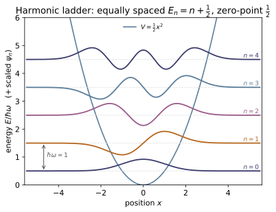
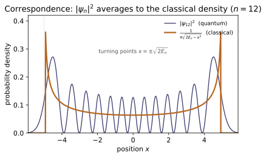
Example problems
From $H=\hbar\omega(a^\dagger a+\tfrac12)$, $[a,a^\dagger]=1$, and the existence of a lowest rung $a|0\rangle=0$, deduce the allowed energies and the ground-state energy — without ever solving a differential equation. Answer: $E_n=\hbar\omega(n+\tfrac12)$; $E_0=\tfrac12\hbar\omega\neq0$ (forced by $[x,p]=i\hbar$ — the particle can't have $x=p=0$). (Griffiths Eq. 2.62, p.62.) Check: algebraic_spectrum(6) → [0.5 1.5 2.5 3.5 4.5 5.5]; zero_point_energy() → 0.5. (test_hamiltonian_spectrum_is_n_plus_half.)
Let $N|n\rangle=n|n\rangle$. From $[N,a^\dagger]=a^\dagger$ and $[N,a]=-a$, the kets $a^\dagger|n\rangle$ and $a|n\rangle$ are again $N$-eigenstates, with eigenvalues $n+1$ and $n-1$ — the ladder. Eigenvalues cannot go negative, since
So lowering must terminate at a floor with $a|0\rangle=0$, giving $N|0\rangle=0$ and $E_0=\hbar\omega(0+\tfrac12)=\tfrac12\hbar\omega$. Climbing with $a^\dagger$ adds one quantum at a time, so $n=0,1,2,\dots$ and $E_n=\hbar\omega(n+\tfrac12)$. The floor $\tfrac12\hbar\omega\neq0$ because $a|0\rangle=0$ is a minimum-uncertainty state, not $x=p=0$. Matches algebraic_spectrum(6)→[0.5 1.5 2.5 3.5 4.5 5.5] and zero_point_energy()→0.5.
Show $a^\dagger|n\rangle=\sqrt{n+1}\,|n+1\rangle$ and $a|n\rangle=\sqrt{n}\, |n-1\rangle$, and confirm the bottom of the ladder $a|0\rangle=0$. Answer: the $\sqrt{n+1},\sqrt{n}$ factors come from normalising $a^\dagger|n\rangle$ and $a|n\rangle$ (Griffiths Eq. 2.66, p.64). Check: creation(6) @ basis_vector(2,6) $=\sqrt3\,|3\rangle$; annihilation(6) @ basis_vector(0,6) $=0$. (test_raising_lowering_relations.)
Since $a^\dagger|n\rangle$ has $N$-eigenvalue $n+1$, write $a^\dagger|n\rangle=c_n|n+1\rangle$. Fix $|c_n|$ from the norm, using $aa^\dagger=a^\dagger a+[a,a^\dagger]=N+1$:
so with the standard real-positive phase $a^\dagger|n\rangle=\sqrt{n+1}\,|n+1\rangle$. Likewise $\lVert a|n\rangle\rVert^2=\langle n|a^\dagger a|n\rangle=n$ gives $a|n\rangle=\sqrt{n}\,|n-1\rangle$, and at $n=0$ the factor $\sqrt0$ kills the state, $a|0\rangle=0$. Hence creation(6) @ basis_vector(2,6) $=\sqrt3\,|3\rangle$ (the $\sqrt3=1.7321$ entry in slot $3$) and annihilation(6) @ basis_vector(0,6) $=0$.
Prove that no finite-dimensional matrices $A,B$ can satisfy $[A,B]=\mathbb 1$. Then explain what the truncated $D\times D$ ladder operators actually give. Answer: $\operatorname{tr}[A,B]=\operatorname{tr}(AB)-\operatorname{tr}(BA)=0$, but $\operatorname{tr}\mathbb 1=D\neq0$ — contradiction. Truncation forces the defect into one corner: $[a,a^\dagger]=\operatorname{diag}(1,\dots,1,-(D-1))$, identity on the interior, with the bottom-right entry $-(D-1)$ making the trace zero. (The infinite-dimensional relation $[a,a^\dagger]=1$ holds only in the limit $D\to\infty$.) Check: np.diag(commutator(annihilation(6),creation(6))).real → [1 1 1 1 1 -5]; np.trace(...) $=0$. (test_ladder_commutator_interior_is_identity, test_truncation_artifact_is_honest.)
The trace is cyclic for any finite square matrices, $\operatorname{tr}(AB)=\operatorname{tr}(BA)$, so
But $\operatorname{tr}\mathbb 1_D=D\neq0$, so $[A,B]=\mathbb 1$ cannot hold in finite dimensions — it needs the infinite ladder. Truncating $a,a^\dagger$ to $D$ levels keeps $[a,a^\dagger]=1$ on every interior rung, but $a^\dagger|D-1\rangle=\sqrt{D}\,|D\rangle$ is dropped, so the bottom-right entry must equal $-(D-1)$ to force the trace to zero. For $D=6$ this is $\operatorname{diag}(1,1,1,1,1,-5)$, exactly what np.diag(commutator(annihilation(6),creation(6))).real→[1 1 1 1 1 -5] returns, with np.trace(...)$=0$.
Show by explicit integration that $\psi_0,\psi_1,\psi_2$ are orthonormal: $\int\psi_m\psi_n\,dx=\delta_{mn}$. (Hint: exploit the parity of the integrands — even$\times$odd integrates to zero.) Answer: the diagonal integrals are $1$ (normalisation), the off-diagonal ones $0$ (Griffiths Eq. 2.67, p.64). Check: overlap(2,2) ≈ 1.0, overlap(1,2) ≈ 0.0. (test_eigenfunctions_orthonormal.)
The eigenfunction $\psi_k$ has parity $(-1)^k$, so the product $\psi_m\psi_n$ has parity $(-1)^{m+n}$. When $m+n$ is odd the integrand is an odd function and $\int_{-\infty}^\infty\psi_m\psi_n\,dx=0$ with no calculation — this kills $(0,1),(1,2),\dots$. The diagonal terms are the normalization integrals, set to $1$ by the prefactor $(m\omega/\pi\hbar)^{1/4}/\sqrt{2^n n!}$ together with $\int H_n(\xi)^2e^{-\xi^2}\,d\xi=\sqrt\pi\,2^n n!$. Hence $\int\psi_m\psi_n\,dx=\delta_{mn}$, confirmed by overlap(2,2)≈$1.0$ and overlap(1,2)≈$0.0$.
Construct $\psi_2(x)\propto(2\xi^2-1)e^{-\xi^2/2}$ using $H_2(\xi)=4\xi^2-2$, and state its parity. More generally, $\psi_n$ has parity $(-1)^n$, so $\psi_n(0)=0$ for odd $n$. Answer: $\psi_2$ is even ($\psi_2(-x)=\psi_2(x)$); $\psi_1,\psi_3,\dots$ are odd. Check: psi(2,-x) == psi(2,x) and psi(1,-x) == -psi(1,x). (test_parity_of_eigenfunctions; psi imports $H_n$ from ~MA-12.)
With $H_2(\xi)=4\xi^2-2=2(2\xi^2-1)$, Eq. 2.85 gives
Under $x\to-x$ we have $\xi\to-\xi$, but $\xi^2$ and $e^{-\xi^2/2}$ are unchanged, so $\psi_2(-x)=\psi_2(x)$ — even. Generally $H_n(-\xi)=(-1)^nH_n(\xi)$, so $\psi_n$ has parity $(-1)^n$; for odd $n$ the function is odd and $\psi_n(0)=0$. Hence psi(2,-x) == psi(2,x) while psi(1,-x) == -psi(1,x).
The algebraic method (diagonalise $H=\hbar\omega(N+\tfrac12)$) and the analytic method (diagonalise the finite-difference Hamiltonian $-\tfrac12 d^2/dx^2+ \tfrac12 x^2$) are built from completely different machinery. Show they give the same spectrum. Answer: both yield $E_n=\hbar\omega(n+\tfrac12)$; the FD spectrum converges to it as the grid refines (Griffiths: the analytic states are "identical, of course, to the ones we obtained algebraically", p.71). Check: algebraic_spectrum(20)[:6] vs fd_spectrum(k=6) — both $\approx[0.5,1.5,2.5,3.5,4.5,5.5]$. (test_two_methods_same_spectrum.)
The algebraic route diagonalizes $H=\hbar\omega(N+\tfrac12)$ with $N=\operatorname{diag}(0,1,2,\dots)$, returning $E_n=\hbar\omega(n+\tfrac12)$ exactly. The analytic route discretizes $-\tfrac12 d^2/dx^2+\tfrac12 x^2$ with a 3-point Laplacian and diagonalizes that matrix — no ladder operators anywhere. Both give the same numbers: algebraic_spectrum(20)[:6]$=[0.5,1.5,2.5,3.5,4.5,5.5]$ and fd_spectrum(k=6)$=[0.5,1.500,2.500,3.500,4.499,5.499]$, the tiny deficits being $O(\Delta x^2)$ grid error that vanishes as the box refines. One spectrum, two independent derivations.
Verify directly that the analytic $\psi_n$ satisfies the TISE $-\tfrac{\hbar^2}{2m}\psi_n''+\tfrac12 m\omega^2x^2\psi_n=E_n\psi_n$ with $E_n=\hbar\omega(n+\tfrac12)$ (use a finite-difference second derivative). Answer: the relative residual $\lVert H\psi_n-E_n\psi_n\rVert/\lVert\psi_n\rVert$ is $\sim10^{-4}$ and shrinks $\propto(\Delta x)^2$ — zero in the continuum limit. Check: fd_residual(0)…fd_residual(4) all $<2\times10^{-3}$. (test_eigenfunctions_solve_fd_tise.)
Sample the analytic $\psi_n$ on the grid and apply the finite-difference Hamiltonian $H_{\rm fd}=-\tfrac12 D^2+\tfrac12 x^2$ (3-point stencil). Each $\psi_n$ solves the continuum TISE $H\psi_n=E_n\psi_n$ with $E_n=n+\tfrac12$ exactly, so the only error is the stencil's $D^2\psi_n=\psi_n''+O(\Delta x^2)$. The relative residual is then
Numerically fd_residual(0..4)$=\{3.0,\,8.9,\,19,\,34,\,53\}\times10^{-5}$, all $<2\times10^{-3}$ and shrinking as the grid refines — every Hermite–Gaussian solves the discretized Schrödinger equation.
For the $n$th stationary state, use $x=\sqrt{\tfrac{\hbar}{2m\omega}}(a+a^\dagger)$ and $p=i\sqrt{\tfrac{\hbar m\omega}{2}}(a^\dagger-a)$ to find $\langle x\rangle, \langle p\rangle,\langle x^2\rangle,\langle p^2\rangle$ and the product $\sigma_x\sigma_p$. Answer: $\langle x\rangle=\langle p\rangle=0$; $\langle x^2\rangle= \tfrac{\hbar}{m\omega}(n+\tfrac12)$, $\langle p^2\rangle=\hbar m\omega(n+\tfrac12)$, so $\sigma_x\sigma_p=\hbar(n+\tfrac12)\ge\tfrac{\hbar}{2}$ — saturated by the ground state. (The $\langle x^2\rangle,\langle p^2\rangle$ split $E_n$ equally between kinetic and potential energy.) Check (natural units): the $x,p$ matrices give $\langle n|x^2|n\rangle=\langle n|p^2|n\rangle=n+\tfrac12$ on the interior, e.g. v=basis_vector(2,12); x=position_operator(12); (v.conj()@(x@x)@v).real → 2.5. (Built from position_operator/momentum_operator; cf. test_hamiltonian_from_xp_matches_ladder_form.)
Write $x=\sqrt{\tfrac{\hbar}{2m\omega}}(a+a^\dagger)$ and $p=i\sqrt{\tfrac{\hbar m\omega}{2}}(a^\dagger-a)$. Each shifts $|n\rangle$ to $|n\pm1\rangle$, orthogonal to $|n\rangle$, so $\langle x\rangle=\langle p\rangle=0$. For the squares only the number-conserving terms survive:
giving $\langle x^2\rangle=\tfrac{\hbar}{2m\omega}(2n+1)=\tfrac{\hbar}{m\omega}(n+\tfrac12)$ and likewise $\langle p^2\rangle=\tfrac{\hbar m\omega}{2}(2n+1)=\hbar m\omega(n+\tfrac12)$. With $\langle x\rangle=\langle p\rangle=0$, $\sigma_x\sigma_p=\sqrt{\langle x^2\rangle\langle p^2\rangle}=\hbar(n+\tfrac12)\ge\tfrac\hbar2$, saturated at $n=0$. In natural units $n=2$ gives $\langle x^2\rangle=\langle p^2\rangle=2.5$, matching (v.conj()@(x@x)@v).real→2.5.
Run the worked code: cd QM/QM-09_harmonic_oscillator/code && python3 oscillator.py
QM-10 — Angular Momentum
Quantum Mechanics trunk · QM/QM-10_angular_momentum · open in the Teaching Network
Angular momentum is the cleanest illustration of the central quantum move: fix the commutation algebra, and the spectrum is forced. No differential equation is solved for the eigenvalues — they fall out of [Lᵢ,Lⱼ]=iℏεᵢⱼₖLₖ alone (Griffiths 3e §4.3.1).
1. The observable — L = r×p promoted to operators by p → −iℏ∇ (Griffiths §4.3). 2. The algebra — [Lₓ,L_y]=iℏL_z and cyclic; the components are incompatible, but L²=Lₓ²+L_y²+L_z² commutes with each, so L² and one component (L_z) share eigenstates. 3. The ladder — L± = Lₓ ± iL_y step m up/down; the ladder must terminate top and bottom, which quantizes everything. 4. The spectrum — L²→ℏ²l(l+1), L_z→ℏm, m=−l,…,+l (so 2l+1 states); l integer or half-integer from the algebra alone. 5. Position space — the simultaneous eigenfunctions of L² and L_z=−iℏ∂_φ are the spherical harmonics Yₗᵐ(θ,φ) (Griffiths §4.1.2, §4.3.2). These need l integer (single-valued e^{imφ}); the half-integer rungs are spin.
House rule for this module: nothing about the spectrum is asserted — it is built. The (2l+1)-dimensional matrices are constructed from the ladder matrix elements ℏ√(l(l+1)−m(m±1)) and the algebra [Lₓ,L_y]=iℏL_z, L²=ℏ²l(l+1)I is then verified to machine precision (finite-dimensional reps are exact — a clean contrast with ~QM-05, where x,p only close on a truncated basis). The spherical harmonics are checked by integrating over the sphere and against Griffiths' Table 4.3 closed forms.
Key equations
Figures
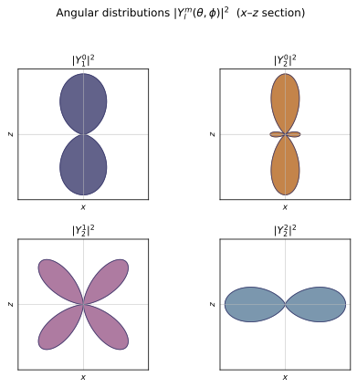
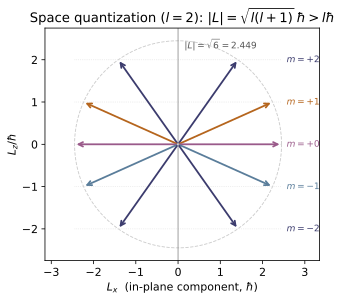
Example problems
From $[L_x,L_y]=i\hbar L_z$ and its cyclic partners, show (a) no two components share eigenstates, but (b) $L^2$ does commute with each, so $L^2$ and one component can be diagonalized together. Answer: (a) $[L_x,L_y]\neq0$ ⇒ incompatible (generalized uncertainty). (b) $[L^2,L_i]=0$. This is why the labels are $(l,m)$ — one for $L^2$, one for $L_z$. Check: commutator(Lx(1),Ly(1)) $=i\,$Lz(1); commutator(L_squared(1),Lz(1)) $=0$. (test_commutators_cyclic, test_L2_commutes_with_each_component.)
Two operators share a complete eigenbasis only if they commute, so test a single common eigenstate: if $|\psi\rangle$ obeyed $L_x|\psi\rangle=a|\psi\rangle$ and $L_y|\psi\rangle=b|\psi\rangle$, then
forcing $L_z|\psi\rangle=0$; cyclically $L_x|\psi\rangle=L_y|\psi\rangle=0$, so $L^2|\psi\rangle=0$ — only the trivial $l=0$ state. Hence (a) no two components share eigenstates. (b) But $[L^2,L_i]=0$, so $L^2$ and one component ($L_z$) do share a basis, labelled $(l,m)$. The code confirms commutator(Lx(1),Ly(1)) $=i\,$Lz(1) and commutator(L_squared(1),Lz(1)) $=0$.
Write the $3\times3$ matrices for $l=1$ and read off the spectrum of $L_z$ and the single eigenvalue of $L^2$. Answer: $L_z=\mathrm{diag}(1,0,-1)$; spectrum $\{-1,0,1\}$; $L^2=2\,\mathbb 1$ since $\hbar^2 l(l+1)=2$. The components are not diagonal, but their squares sum to a multiple of the identity. Check: numpy.linalg.eigvalsh(Lz(1)) → [-1,0,1]; L_squared(1) $=2\,I$ ; casimir_eigenvalue(1) $=2$. (test_Lz_is_diagonal_spectrum, test_casimir_is_l_l_plus_one.)
Order the rungs $m=1,0,-1$. Then $L_z=\hbar\,\mathrm{diag}(1,0,-1)$, with spectrum $\{-1,0,1\}$. The ladder element $\hbar\sqrt{l(l+1)-m(m+1)}=\hbar\sqrt{2-m(m+1)}$ equals $\hbar\sqrt2$ for both $m=0$ and $m=-1$, so
$L_x,L_y$ are not diagonal, but their squares conspire: $L^2=L_x^2+L_y^2+L_z^2=\hbar^2l(l+1)\,\mathbb1=2\hbar^2\mathbb1$. So eigvalsh(Lz(1))$=[-1,0,1]$, L_squared(1)$=2I$, and casimir_eigenvalue(1)$=2$.
The raising operator acts as $L_+|l,m\rangle=\hbar\sqrt{l(l+1)-m(m+1)}\,|l,m+1\rangle$. Show the coefficient vanishes at the top rung $m=l$ (and $L_-$ at $m=-l$), so the ladder is finite — this is what quantizes $m$ to $2l+1$ integer-spaced values. Answer: at $m=l$, $l(l+1)-l(l+1)=0$; at $m=-l$ (with $L_-$), $l(l+1)-(-l)(-l-1)=0$. Check: ladder_coeff(2,2,+1) $=0$, ladder_coeff(2,-2,-1) $=0$; L_plus(2)[:,0] and L_minus(2)[:,-1] are all-zero columns. (test_ladder_matrix_elements.)
The raising coefficient is $c_+(m)=\hbar\sqrt{l(l+1)-m(m+1)}$. At the top rung $m=l$,
The lowering coefficient $c_-(m)=\hbar\sqrt{l(l+1)-m(m-1)}$ at $m=-l$ gives $l(l+1)-(-l)(-l-1)=l(l+1)-l(l+1)=0$, so $L_-|l,-l\rangle=0$. Both ends are sealed, leaving exactly $2l+1$ integer-spaced rungs $m=-l,\dots,l$. For $l=2$ this is ladder_coeff(2,2,+1)$=0$ and ladder_coeff(2,-2,-1)$=0$; correspondingly L_plus(2)[:,0] (the $|2,2\rangle$ column) and L_minus(2)[:,-1] (the $|2,-2\rangle$ column) are all-zero.
Take $l=\tfrac12$ (allowed by the algebra). What are $2L_x,2L_y,2L_z$? Answer: exactly the Pauli matrices $\sigma_x,\sigma_y,\sigma_z$; i.e. $L_i=\tfrac{\hbar}{2}\sigma_i$. The $2\times2$ rep is ~QM-11 (spin) in full. Check: 2Lx(0.5), 2Ly(0.5), 2*Lz(0.5) are the Pauli matrices. (test_spin_half_is_pauli.)
For $l=\tfrac12$ the rungs are $m=\pm\tfrac12$ (dim 2), so $L_z=\tfrac\hbar2\,\mathrm{diag}(1,-1)$. The single ladder element is $\hbar\sqrt{\tfrac12\cdot\tfrac32-(-\tfrac12)(\tfrac12)}=\hbar\sqrt{\tfrac34+\tfrac14}=\hbar$, giving
Hence $\tfrac2\hbar L_x,\tfrac2\hbar L_y,\tfrac2\hbar L_z=\sigma_x,\sigma_y,\sigma_z$, i.e. $L_i=\tfrac\hbar2\sigma_i$. With $\hbar=1$ the code returns 2Lx(0.5)$=\sigma_x$, 2Ly(0.5)$=\sigma_y$, 2*Lz(0.5)$=\sigma_z$ — the entire spin-$\tfrac12$ content of ~QM-11.
Verify $\displaystyle\int {Y_l^m}^{}\,Y_{l'}^{m'}\,d\Omega=\delta_{ll'}\delta_{mm'}$ for a few modes, and explain why they're orthogonal without doing the integral. Answer: the integral is $1$ on the diagonal, $0$ off it; orthogonality follows because the $Y_l^m$ are eigenfunctions of the Hermitian operators $L^2,L_z$ for distinct eigenvalues (Griffiths p.206). Check:* sphere_inner_product(2,1,2,1) $\approx1$; sphere_inner_product(1,0,2,0) $\approx0$. (test_spherical_harmonics_orthonormal.)
Numerically sphere_inner_product(2,1,2,1)$=1.0000$ and sphere_inner_product(1,0,2,0)$=-8.7\times10^{-17}\approx0$. No integral is needed to know this: $L^2$ and $L_z$ are Hermitian, and eigenfunctions of a Hermitian operator belonging to distinct eigenvalues are orthogonal. $Y_1^0$ and $Y_2^0$ have different $L^2$ eigenvalues ($2\hbar^2$ vs $6\hbar^2$), and any two $Y_l^m$ with $m\neq m'$ have different $L_z$ eigenvalues $\hbar m$. Either mismatch forces the overlap to vanish, which is exactly the $\delta_{ll'}\delta_{mm'}$ the checks return.
In position space $L_z=-i\hbar\,\partial/\partial\phi$. Show $Y_l^m$ has eigenvalue $\hbar m$. Answer: $Y_l^m\propto e^{im\phi}$, so $-i\hbar\,\partial_\phi Y_l^m=\hbar m\,Y_l^m$. The "matrix" $L_z$ of P2 and the differential $L_z$ here are the same operator in two representations. Check: Lz_on_Y(3,-2,0.6,0.9) $\approx -2\cdot$spherical_harmonic(3,-2,0.6,0.9). (test_spherical_harmonics_are_Lz_eigenfunctions.)
Write $Y_l^m=N\,P_l^m(\cos\theta)\,e^{im\phi}$; only the $e^{im\phi}$ factor depends on $\phi$. Then
So $Y_l^m$ is an $L_z$ eigenfunction with eigenvalue $\hbar m$ — the very number sitting on the diagonal of the matrix $L_z$ in P2; the two are one operator in two representations. For $(l,m)=(3,-2)$ the eigenvalue is $-2\hbar$, and the finite-difference Lz_on_Y(3,-2,0.6,0.9)$=0.1222+0.5238i$ matches $-2\cdot$spherical_harmonic(3,-2,0.6,0.9)$=0.1222+0.5238i$.
The algebra (P1–P3) allows $l=0,\tfrac12,1,\tfrac32,\dots$, yet the spherical harmonics exist only for integer $l$. Reconcile this. Answer: the $\phi$-equation gives $\Phi=e^{im\phi}$; single-valuedness under $\phi\to\phi+2\pi$ forces $m$ (hence $l$) integer for any spatial wavefunction (Griffiths Eq. 4.22, p.176). The half-integer rungs the algebra permits have no $Y_l^m$ — they are spin (~QM-11), an intrinsic angular momentum with no $\mathbf r\times\mathbf p$ realization. Check: spherical_harmonic(0.5, 0.5, θ, φ) raises ValueError; but Lz(0.5), L_squared(0.5) exist and satisfy the algebra. (test_spherical_harmonics_require_integer_l, test_commutators_cyclic.)
The algebra of P1–P3 only needs the ladder to terminate, which it does for every $l=0,\tfrac12,1,\tfrac32,\dots$. But a spatial wavefunction must be single-valued: the azimuthal factor $\Phi(\phi)=e^{im\phi}$ has to satisfy $\Phi(\phi+2\pi)=\Phi(\phi)$, i.e. $e^{2\pi i m}=1$, which forces $m\in\mathbb Z$ and hence $l\in\mathbb Z$. The half-integer rungs the algebra permits therefore carry no $Y_l^m$ — they are intrinsic spin (~QM-11), matrices with no $\mathbf r\times\mathbf p$ realization. Accordingly spherical_harmonic(0.5,0.5,…) raises ValueError, while Lz(0.5)$=\tfrac12\mathrm{diag}(1,-1)$ and L_squared(0.5)$=\tfrac34\,\mathbb1$ exist and satisfy $[L_x,L_y]=i\hbar L_z$.
For $l=2$, compare the length $|\mathbf L|=\hbar\sqrt{l(l+1)}$ with the largest $L_z$ eigenvalue $\hbar l$. Why can't they be equal? Answer: $\sqrt{l(l+1)}=\sqrt6\approx2.449>2=l$, so the vector is always longer than its biggest projection. Equality would mean $L_x=L_y=0$ with $L_z$ definite — forbidden by $[L_x,L_y]=i\hbar L_z\neq0$ (P1). The classical limit is $l\to\infty$, where $\sqrt{l(l+1)}/l\to1$. Check: math.sqrt(casimir_eigenvalue(2)) $\approx2.449$ vs max(m_values(2)) $=2$.
The length of $\mathbf L$ is fixed by $L^2=\hbar^2l(l+1)$, so $|\mathbf L|=\hbar\sqrt{l(l+1)}$; for $l=2$, $|\mathbf L|=\hbar\sqrt6\approx2.449\hbar$, whereas the largest projection is $L_z^{\max}=\hbar l=2\hbar$. Since $l(l+1)>l^2$ for any $l>0$, always $\sqrt{l(l+1)}>l$. Equality would demand $L_x=L_y=0$ with $L_z$ sharp — impossible, because $[L_x,L_y]=i\hbar L_z\neq0$ (P1) forbids that simultaneous eigenstate. Only as $l\to\infty$ does $\sqrt{l(l+1)}/l\to1$, recovering the classical vector. Hence math.sqrt(casimir_eigenvalue(2))$=2.449$ strictly exceeds max(m_values(2))$=2$.
Run the worked code: cd QM/QM-10_angular_momentum/code && python3 angular_momentum.py
QM-11 — Spin & Two-Level Systems
Quantum Mechanics trunk · QM/QM-11_spin · open in the Teaching Network
Spin is intrinsic angular momentum: an internal degree of freedom with the full angular-momentum algebra but no $\mathbf r\times\mathbf p$ and no spatial wavefunction — only a finite matrix (Griffiths 3e §4.4, p.212). The spin-$\tfrac12$ case is the simplest nontrivial quantum system, a two-level system / qubit.
1. The algebra, again — $[S_i,S_j]=i\hbar\varepsilon_{ijk}S_k$, copied from ~QM-10 with the differential operators thrown away (Griffiths §4.4, p.212). 2. Pauli matrices — $\mathbf S=\tfrac{\hbar}{2}\boldsymbol\sigma$; the single identity $\sigma_i\sigma_j=\delta_{ij}\mathbb 1+i\varepsilon_{ijk}\sigma_k$ contains $\sigma^2=\mathbb 1$, $\{\sigma_i,\sigma_j\}=2\delta_{ij}$ and the commutators; $S^2=\tfrac34\hbar^2\mathbb 1$ (Griffiths §4.4.1, p.214–215). 3. Spin along $\hat{\mathbf n}$ — eigenspinor $\chi_+=(\cos\tfrac\theta2, \sin\tfrac\theta2 e^{i\phi})$; $\langle\mathbf S\rangle=\tfrac\hbar2\hat{\mathbf n}$ (Bloch sphere); the $\cos^2(\theta/2)$ measurement rule (Griffiths Prob. 4.33, p.218). 4. Stern–Gerlach — measuring $S_z$ splits a beam into $2s+1=2$ spots: quantization made visible (Griffiths Example 4.4, p.221), the ~QM-06 postulate in hardware. 5. Larmor precession — $H=-\gamma\,\mathbf B\cdot\mathbf S$; for $\mathbf B\parallel \hat{\mathbf z}$, $\langle S_x\rangle,\langle S_y\rangle$ rotate at $\omega=\gamma B_0$ while $\langle S_z\rangle$ is fixed (Griffiths §4.4.2, p.219–220). 6. Rabi flop — a driven two-level system: $P_\uparrow=(\Omega^2/\Omega_R^2) \sin^2(\Omega_R t/2)$ — complete inversion on resonance (Griffiths Prob. 4.36).
House rule for this module: nothing is asserted — it is built and checked. The Pauli identities and the spin algebra are finite-dimensional and therefore verified to machine precision; the $\hat{\mathbf n}\cdot\mathbf S$ eigenstate, the precession, and the Rabi formula are checked against their closed forms, and the time evolution is confirmed two independent ways (matrix exponential vs. ODE integration of $i\hbar\,\dot\chi=H\chi$). One test imports ~QM-10 and ~MA-18 to prove spin-$\tfrac12$ is their $l=\tfrac12$ / su(2) object.
Key equations
Figures
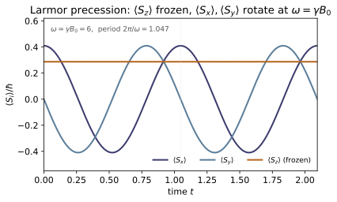

Example problems
Show that the single identity $\sigma_i\sigma_j=\delta_{ij}\mathbb 1+i\varepsilon_{ijk}\sigma_k$ implies both $\{\sigma_i,\sigma_j\}=2\delta_{ij}\mathbb 1$ (so $\sigma_i^2=\mathbb 1$) and $[\sigma_i,\sigma_j]=2i\varepsilon_{ijk}\sigma_k$. Answer: add and subtract the identity with $i\leftrightarrow j$; the symmetric part (using $\varepsilon_{jik}=-\varepsilon_{ijk}$) is the anticommutator, the antisymmetric part the commutator. Check: test_pauli_product_identity, test_pauli_anticommutator, test_pauli_commutator; e.g. sigma_x@sigma_y $=i\,$sigma_z.
Write the identity once and again with $i\leftrightarrow j$, using $\delta_{ji}=\delta_{ij}$ and $\varepsilon_{jik}=-\varepsilon_{ijk}$:
Adding cancels the antisymmetric term: $\{\sigma_i,\sigma_j\}=\sigma_i\sigma_j+\sigma_j\sigma_i=2\delta_{ij}\mathbb 1$, so $\sigma_i^2=\mathbb 1$. Subtracting cancels the $\delta$ term: $[\sigma_i,\sigma_j]=\sigma_i\sigma_j-\sigma_j\sigma_i=2i\varepsilon_{ijk}\sigma_k$. For $i=x,j=y$ this gives $\sigma_x\sigma_y=\delta_{xy}\mathbb 1+i\varepsilon_{xyz}\sigma_z=i\sigma_z$, exactly the sigma_x@sigma_y $=i\,$sigma_z checked in test_pauli_product_identity.
From $\mathbf S=\tfrac\hbar2\boldsymbol\sigma$, verify $[S_x,S_y]=i\hbar S_z$ (and cyclic) and $S^2=\tfrac34\hbar^2\mathbb 1$. Identify $\tfrac34$ as $s(s+1)$. Answer: $[S_x,S_y]=\tfrac{\hbar^2}{4}[\sigma_x,\sigma_y]=\tfrac{\hbar^2}{4}(2i\sigma_z) =i\hbar S_z$; $S^2=\tfrac{\hbar^2}{4}\cdot3\,\mathbb 1$, and $s(s+1)=\tfrac12\cdot\tfrac32=\tfrac34$. This is ~QM-10's algebra at the $s=\tfrac12$ rung — verified by importing it. Check: test_spin_algebra, test_S_squared_is_three_quarter, test_cross_check_QM10_angular_momentum_and_MA18.
With $\mathbf S=\tfrac\hbar2\boldsymbol\sigma$ the spin commutator inherits the Pauli commutator of P1:
and cyclically — the orbital algebra $[L_i,L_j]=i\hbar\varepsilon_{ijk}L_k$ verbatim. Using $\sigma_i^2=\mathbb 1$,
Comparing with $S^2=\hbar^2 s(s+1)\mathbb 1$ gives $s(s+1)=\tfrac34$, i.e. $s=\tfrac12$ (since $\tfrac12\cdot\tfrac32=\tfrac34$). This is ~QM-10's ladder at its half-integer rung, confirmed by test_spin_algebra and test_S_squared_is_three_quarter.
Construct $\hat{\mathbf n}\cdot\mathbf S$ for $\hat{\mathbf n}=(\sin\theta\cos\phi, \sin\theta\sin\phi,\cos\theta)$ and find its $+\hbar/2$ eigenspinor. Answer: $\hat{\mathbf n}\cdot\mathbf S=\tfrac\hbar2\!\begin{pmatrix}\cos\theta&\sin\theta e^{-i\phi}\\ \sin\theta e^{i\phi}&-\cos\theta\end{pmatrix}$, eigenvalues $\pm\hbar/2$ for every direction (since $(\hat{\mathbf n}\cdot\boldsymbol\sigma)^2=\mathbb 1$); $\chi_+=(\cos\tfrac\theta2,\,\sin\tfrac\theta2 e^{i\phi})$. Check: spin_operator_along(θ,φ) @ spin_eigenstate(θ,φ) $=0.5\,$spin_eigenstate(θ,φ). (test_n_dot_S_eigenstate.)
Build $\hat{\mathbf n}\cdot\boldsymbol\sigma=n_x\sigma_x+n_y\sigma_y+n_z\sigma_z$; the off-diagonal entries combine as $n_x\mp in_y=\sin\theta\,e^{\mp i\phi}$, so
Since $(\hat{\mathbf n}\cdot\boldsymbol\sigma)^2=n_in_j\sigma_i\sigma_j=|\hat{\mathbf n}|^2\mathbb 1=\mathbb 1$ (using P1), the eigenvalues are $\pm1$, i.e. $\pm\hbar/2$ for every direction. The top row of $(\hat{\mathbf n}\cdot\mathbf S-\tfrac\hbar2)\chi=0$ reads $(\cos\theta-1)a+\sin\theta\,e^{-i\phi}b=0$, giving $b/a=\tfrac{1-\cos\theta}{\sin\theta}e^{i\phi}=\tan\tfrac\theta2\,e^{i\phi}$, hence $\chi_+=(\cos\tfrac\theta2,\ \sin\tfrac\theta2\,e^{i\phi})^T$. This is the spinor for which spin_operator_along(θ,φ) @ spin_eigenstate(θ,φ) $=0.5\,$spin_eigenstate(θ,φ).
On $\chi_+^{(\hat{\mathbf n})}$, show $\langle\mathbf S\rangle=\tfrac\hbar2\hat{\mathbf n}$, so the expectation has length $\hbar/2$ and points exactly along the prepared axis. Answer: $\langle S_z\rangle=\tfrac\hbar2(\cos^2\tfrac\theta2-\sin^2\tfrac\theta2)=\tfrac\hbar2\cos\theta$, $\langle S_x\rangle=\tfrac\hbar2\sin\theta\cos\phi$, $\langle S_y\rangle=\tfrac\hbar2\sin\theta\sin\phi$ — the components of $\tfrac\hbar2\hat{\mathbf n}$. Check: test_expectation_is_half_n; e.g. [expectation(o, spin_eigenstate(1.0,2.0)) for o in S] $=0.5\,$n_hat(1.0,2.0).
Write $\chi_+=(a,b)$ with $a=\cos\tfrac\theta2$, $b=\sin\tfrac\theta2\,e^{i\phi}$. For the diagonal $\sigma_z$, $\langle\sigma_z\rangle=|a|^2-|b|^2=\cos^2\tfrac\theta2-\sin^2\tfrac\theta2=\cos\theta$, so $\langle S_z\rangle=\tfrac\hbar2\cos\theta$. For the off-diagonal pair, $\chi^\dagger\sigma_x\chi=2\,\mathrm{Re}(a^b)$ and $\chi^\dagger\sigma_y\chi=2\,\mathrm{Im}(a^b)$ with $a^*b=\cos\tfrac\theta2\sin\tfrac\theta2\,e^{i\phi}$:
using $2\cos\tfrac\theta2\sin\tfrac\theta2=\sin\theta$. Thus $\langle\mathbf S\rangle=\tfrac\hbar2\hat{\mathbf n}$ — length $\hbar/2$, pointing along $\hat{\mathbf n}$ (the Bloch sphere). At $\theta=1,\phi=2$ the code returns $\langle\mathbf S\rangle=(-0.1751,\,0.3826,\,0.2702)=0.5\,$n_hat(1.0,2.0), matching test_expectation_is_half_n.
A particle is prepared spin-up along $\hat{\mathbf n}(\theta,\phi)$ and sent into a $z$-oriented Stern–Gerlach magnet. What are the probabilities of the two beams? Answer: $P(\uparrow_z)=|\langle\uparrow_z|\chi_+\rangle|^2=\cos^2(\theta/2)$ and $P(\downarrow_z)=\sin^2(\theta/2)$ — independent of $\phi$, summing to 1. The beam splits into exactly two ($2s+1$) spots: angular momentum is quantized. Check: prob_up_z(spin_eigenstate(θ,φ)) $=\cos^2(θ/2)$; born_probabilities(Sz, spin_eigenstate(θ,φ)). (test_probability_cos_squared, test_stern_gerlach_born_probabilities.)
The prepared state is $\chi_+=(\cos\tfrac\theta2,\ \sin\tfrac\theta2\,e^{i\phi})$ from P3, and the $S_z$ "up" eigenstate is $\uparrow_z=(1,0)$. The Born rule gives the amplitude as the inner product
and likewise $P(\downarrow_z)=|\sin\tfrac\theta2\,e^{i\phi}|^2=\sin^2\tfrac\theta2$. The phase $e^{i\phi}$ drops out of the modulus, so the result is $\phi$-independent, and $\cos^2\tfrac\theta2+\sin^2\tfrac\theta2=1$. Only two outcomes occur — the $2s+1=2$ Stern–Gerlach spots. For $\theta=1$, $\cos^2(0.5)=0.7702$, which is what prob_up_z(spin_eigenstate(1.0,2.0)) and born_probabilities(Sz, …) return ($\{+\hbar/2:0.7702,\,-\hbar/2:0.2298\}$).
A spin tilted at angle $\alpha$ to a field $\mathbf B=B_0\hat{\mathbf z}$ evolves under $H=-\gamma\,\mathbf B\cdot\mathbf S$. Find $\langle\mathbf S\rangle(t)$ and the precession frequency. Answer: $\langle S_x\rangle=\tfrac\hbar2\sin\alpha\cos\omega t$, $\langle S_y\rangle=-\tfrac\hbar2\sin\alpha\sin\omega t$, $\langle S_z\rangle=\tfrac\hbar2\cos\alpha$ (constant), with the Larmor frequency $\omega=\gamma B_0$ — a cone precessing about $\mathbf B$. Check: spin_expectations(hamiltonian_field(γ,[0,0,B0]), spin_eigenstate(α,0), t) vs the closed forms; larmor_frequency(γ,B0). (test_larmor_precession_closed_form, test_larmor_cone_and_period.)
With $\mathbf B=B_0\hat{\mathbf z}$, $H=-\gamma B_0 S_z=-\tfrac{\gamma B_0\hbar}{2}\sigma_z$, so the propagator is diagonal: $U(t)=e^{-iHt/\hbar}=\mathrm{diag}(e^{i\omega t/2},e^{-i\omega t/2})$ with $\omega\equiv\gamma B_0$. Acting on the tilted initial spinor $\chi(0)=(\cos\tfrac\alpha2,\ \sin\tfrac\alpha2)$,
This is the P3/P5 spinor with $\theta=\alpha$ and azimuth $\phi=-\omega t$. Substituting into $\langle\mathbf S\rangle=\tfrac\hbar2\hat{\mathbf n}$:
So $\langle\mathbf S\rangle$ precesses on a cone of half-angle $\alpha$ at $\omega=\gamma B_0$; for $\gamma=2,B_0=3$, larmor_frequency(2,3) $=6$, matching test_larmor_precession_closed_form.
A two-level system starts in the lower level and is driven with Rabi coupling $\Omega$ at detuning $\Delta$. Find the probability of finding it in the upper level, and the largest transfer achievable off resonance. Answer: $P_\uparrow(t)=\dfrac{\Omega^2}{\Omega_R^2}\sin^2\!\dfrac{\Omega_R t}{2}$, $\Omega_R=\sqrt{\Omega^2+\Delta^2}$. On resonance ($\Delta=0$) it reaches 1 (a $\pi$-pulse at $t=\pi/\Omega$); off resonance it saturates at $\Omega^2/(\Omega^2+\Delta^2)<1$. Check: rabi_probability(np.pi,1,0) $=1$; max of rabi_probability(·,1,1.5) $=\Omega^2/\Omega_R^2$; and evolve(rabi_hamiltonian(Ω,Δ), down_z, t) projected on up_z matches the formula. (test_rabi_resonant_full_inversion, test_rabi_detuned_amplitude, test_rabi_matches_time_evolution.)
In the rotating frame $H=\tfrac\hbar2(\Delta\sigma_z+\Omega\sigma_x)$ has eigenvalues $\pm\tfrac\hbar2\Omega_R$ with $\Omega_R=\sqrt{\Omega^2+\Delta^2}$. Evolving $|\!\downarrow\rangle$ and projecting on $|\!\uparrow\rangle$ gives the Rabi formula
On resonance $\Delta=0\Rightarrow\Omega_R=\Omega$, so $P_\uparrow=\sin^2(\Omega t/2)$ reaches $1$ at $t=\pi/\Omega$ (a $\pi$-pulse): rabi_probability(np.pi,1,0) $=1.0$. Off resonance the prefactor caps the flop at $\Omega^2/\Omega_R^2<1$; for $\Omega=1,\Delta=1.5$ the maximum is $1/(1+1.5^2)=1/3.25=0.3077$, matching test_rabi_detuned_amplitude.
Using $R_{\hat{\mathbf n}}(\theta)=e^{-i\theta\,\hat{\mathbf n}\cdot\boldsymbol\sigma/2}$, evaluate $R(2\pi)$ and $R(4\pi)$. Why isn't $R(2\pi)=\mathbb 1$? Answer: $R(\theta)=\cos\tfrac\theta2\,\mathbb 1-i\sin\tfrac\theta2\,(\hat{\mathbf n}\cdot\boldsymbol\sigma)$, so $R(2\pi)=-\mathbb 1$ and $R(4\pi)=+\mathbb 1$: a $360^\circ$ rotation flips the spinor's sign. Spinors carry a rep of $SU(2)$, the double cover of the rotation group $SO(3)$ (~MA-18); the sign is unobservable in isolation but visible in interference. Check: np.allclose(rotation(2np.pi), -I2), np.allclose(rotation(4np.pi), I2). (test_rotation_double_cover.)
Because $(\hat{\mathbf n}\cdot\boldsymbol\sigma)^2=\mathbb 1$, the exponential splits into even and odd powers exactly like $e^{-i\theta/2}$ for a number:
The half-angle is the whole story. At $\theta=2\pi$: $\cos\pi=-1,\ \sin\pi=0$, so $R(2\pi)=-\mathbb 1$; at $\theta=4\pi$: $\cos2\pi=1,\ \sin2\pi=0$, so $R(4\pi)=+\mathbb 1$. A $360^\circ$ rotation flips the spinor's sign — it takes $720^\circ$ to return — because spinors carry a representation of $SU(2)$, the double cover of $SO(3)$ (~MA-18). This is exactly np.allclose(rotation(2np.pi), -I2) and np.allclose(rotation(4np.pi), I2).
Run the worked code: cd QM/QM-11_spin/code && python3 spin.py
QM-12 — Central Potentials & the Hydrogen Atom
Quantum Mechanics trunk · QM/QM-12_hydrogen_atom · open in the Teaching Network
A particle in a central potential $V(r)$, then the Coulomb case (hydrogen) in full — as closed-form formulae and a finite-difference solve you can run:
1. Separation in spherical coordinates. $\psi(r,\theta,\phi)=R(r)\,Y_l^m(\theta,\phi)$ splits the TISE into an angular equation (solved once and for all by the $Y_l^m$ of ~QM-10) and a radial equation that depends on $V(r)$. 2. The radial equation & the centrifugal barrier. With $u=rR$, the radial problem becomes a 1-D Schrödinger equation in the effective potential $V_{\text{eff}}=V(r)+\tfrac{l(l+1)\hbar^2}{2mr^2}$ — the second term is the repulsive centrifugal barrier. 3. The Coulomb problem. $V=-1/r$ (atomic units) gives the Bohr spectrum $E_n=-\tfrac1{2n^2}$ Ha $=-13.6/n^2$ eV — depending on $n$ only. 4. Quantum numbers & degeneracy. $(n,l,m)$ with $l=0..n-1$ and $m=-l..l$; the level $E_n$ is $n^2$-fold degenerate. 5. Radial wavefunctions. $R_{nl}$ built from the associated Laguerre $L_{n-l-1}^{2l+1}$ — normalized, with exactly $n-l-1$ radial nodes; the mean radius $\langle r\rangle=\tfrac12[3n^2-l(l+1)]$ ($=\tfrac32 a_0$ for the ground state).
House rule for this module: the spectrum is obtained two independent ways that must agree — a finite-difference eigensolve of the radial equation, and the closed-form $E_n$/$R_{nl}$ — and every closed form ($\langle r\rangle$, normalization, node count, the $n^2$ degeneracy) is checked numerically. Atomic units $\hbar=m=e=4\pi\varepsilon_0=1$ throughout (so $a_0=1$, energies in hartrees; $\times$HARTREE_EV for eV).
Key equations
Figures
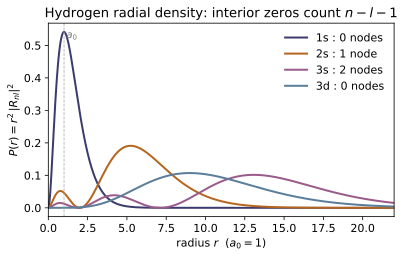
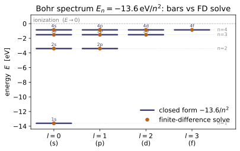
Example problems
Write the effective radial potential for hydrogen and show that for $l>0$ it turns repulsive near the origin. Why does this guarantee $R_{nl}\to0$ faster for larger $l$? Answer: $V_{\text{eff}}=-\tfrac1r+\tfrac{l(l+1)}{2r^2}$; as $r\to0$ the $+l(l+1)/2r^2$ centrifugal term ($\propto r^{-2}$) dominates the Coulomb $-1/r$, so $V_{\text{eff}}\to+\infty$ — a barrier that pushes the particle out and forces $R_{nl}\sim r^l$ at small $r$. Check: effective_potential(0.01, 1) $>0$ but effective_potential(0.01, 0) $<0$; effective_potential(0.1,2) > effective_potential(0.1,1) > effective_potential(0.1,0). (test_effective_potential_centrifugal_barrier.)
The effective radial potential is $V_{\text{eff}}(r)=-\frac1r+\frac{l(l+1)}{2r^2}$. Compare the two pieces as $r\to0$: the centrifugal term $\frac{l(l+1)}{2r^2}\sim r^{-2}$ blows up faster than the Coulomb well $-\frac1r\sim r^{-1}$, so for any $l>0$ it dominates and $V_{\text{eff}}\to+\infty$ — a repulsive wall. Keeping the leading terms in $u''=[l(l+1)/r^2-\dots]u$ near the origin forces $u\sim r^{l+1}$, i.e. $R=u/r\sim r^l$, which is suppressed more steeply the larger $l$. Numerically at $r=0.01$: $l{=}1$ gives $V_{\text{eff}}=9900>0$ (barrier) but $l{=}0$ gives $-100<0$ (pure attraction); at $r=0.1$ the values climb $290>90>-10$ for $l=2,1,0$ — exactly what effective_potential returns.
Without using the closed form, solve the radial equation $u''=[l(l+1)/r^2-2/r-2E]u$ numerically and read off the lowest energies for $l=0$. Confirm $E_1=-0.5$ Ha $=-13.6$ eV and the $1/n^2$ ladder. Answer: $E_n=-1/(2n^2)$: $-0.5,-0.125,-0.0556,\dots$ Ha. The $k$-th state for orbital $l$ has $n=l+1+k$. Check: radial_solve(0,3)[0] $\approx[-0.5,-0.125,-0.0556]$; radial_solve(0,1)[0][0]*HARTREE_EV $\approx-13.6$. (test_radial_solve_recovers_bohr_spectrum.)
Setting $u=rR$ turns the radial equation into $u''=[l(l+1)/r^2-2/r-2E]u$. A 3-point stencil for $-\tfrac12 u''$ on $r_i=i\,\Delta r$ with Dirichlet walls $u(0)=u(r_{\max})=0$ makes $H$ symmetric tridiagonal, $H_{ii}=1/\Delta r^2+V_{\text{eff}}(r_i)$, $H_{i,i\pm1}=-1/(2\Delta r^2)$. Diagonalizing for $l=0$ gives eigenvalues $E_k$ with $n=k+1$. The Bohr prediction $E_n=-1/(2n^2)$ is $-0.5,-0.125,-0.0\overline{5}$ Ha, and the solver returns radial_solve(0,3)[0]$=[-0.49999,-0.12500,-0.05556]$. The ground state in eV is $-0.5\times27.2114=-13.61$ eV (radial_solve(0,1)[0][0]*HARTREE_EV$\approx-13.61$) — the $-13.6/n^2$ ladder recovered purely numerically, no closed form used.
For principal $n$, list the allowed $l$ and, for each, the number of $m$ states. Sum them. Why is the total $n^2$, and which part of that degeneracy is generic to any central potential? Answer: $l=0,1,\dots,n-1$ (from series termination); each $l$ has $2l+1$ values of $m$; $\sum_{l=0}^{n-1}(2l+1)=n^2$. The $2l+1$ ($m$-)degeneracy is generic (rotational symmetry, ~QM-10); the extra coincidence of different $l$ is the "accidental" $1/r$ degeneracy, lifted by ~QM-17. Answer (n=3): $l\in\{0,1,2\}$ → $1+3+5=9=3^2$. Check: count_states(3) $=9=$ degeneracy(3); allowed_l(3) $=[0,1,2]$. (test_degeneracy_is_n_squared, test_allowed_l_and_m.)
Series termination caps $l$ at $n-1$, so the allowed orbitals are $l=0,1,\dots,n-1$ ($n$ of them), each carrying $2l+1$ magnetic substates $m=-l,\dots,+l$. Summing the arithmetic series,
For $n=3$: $l\in\{0,1,2\}$ gives $1+3+5=9=3^2$. The $2l+1$ factor is generic — the rotational $L_z$ degeneracy of any central potential (~QM-10); the extra collapse of different $l$ to one energy is the accidental $1/r$ degeneracy, lifted in ~QM-17. Matches allowed_l(3)$=[0,1,2]$ and count_states(3)$=9=$degeneracy(3).
Construct the normalized ground-state radial function and verify $\int_0^\infty|R_{10}|^2r^2\,dr=1$. Answer: with $n=1,l=0$ the Laguerre is $L_0^1=1$, so $R_{10}=2e^{-r}$; $\int_0^\infty 4e^{-2r}r^2dr=4\cdot 2!/2^3=1$. Check: radial_wavefunction(1,0,0.0) $=2.0$; radial_norm(1,0) $\approx1$. (test_ground_state_is_two_exp, test_radial_normalization.)
For $n=1,l=0$ the Laguerre degree is $n-l-1=0$ and $L_0^{(\alpha)}=1$, so Eq. 4.89 collapses to $R_{10}(r)=\sqrt{(2/1)^3\,\frac{0!}{2\cdot1!}}\;e^{-r}=\sqrt{4}\,e^{-r}=2e^{-r}$, giving $R_{10}(0)=2$. Normalize with $\int_0^\infty r^k e^{-ar}\,dr=k!/a^{k+1}$:
So $R_{10}=2e^{-r}$ is correctly normalized — radial_wavefunction(1,0,0.0)$=2.0$ and radial_norm(1,0)$\approx1$.
How many radial nodes does each of $3s$ ($n{=}3,l{=}0$), $3p$ ($l{=}1$), $3d$ ($l{=}2$) have? What distinguishes orbitals of the same energy? Answer: $n-l-1$ nodes: $3s\!\to\!2$, $3p\!\to\!1$, $3d\!\to\!0$. Same energy $E_3$, different node structure — that is how the degenerate states differ spatially (the $l>0$ zero at $r=0$ is a boundary, not a node). Check: count_radial_nodes(3,0)=2, (3,1)=1, (3,2)=0. (test_radial_node_count.)
The radial function is $R_{nl}\propto (2r/n)^l e^{-r/n}\,L_{n-l-1}^{2l+1}(2r/n)$; the prefactor $(2r/n)^l e^{-r/n}$ never changes sign, so every interior zero comes from the Laguerre polynomial, which has degree $n-l-1$ and exactly that many positive real roots. Hence the radial node count is $n-l-1$: for $n=3$, $3s\to3{-}0{-}1=2$, $3p\to1$, $3d\to0$. All three share the energy $E_3=-1/18$ Ha but differ in node structure — the visible fingerprint that distinguishes the degenerate orbitals (the $l>0$ vanishing at $r=0$ is a boundary, not a node). Matches count_radial_nodes(3,0)=2, (3,1)=1, (3,2)=0.
For the hydrogen ground state, find (a) the most probable radius and (b) the mean radius $\langle r\rangle$. Why aren't they equal? Answer: (a) $P(r)=r^2|R_{10}|^2=4r^2e^{-2r}$ peaks at $r=a_0=1$. (b) $\langle r\rangle=\int r\,P\,dr=\tfrac32 a_0$. They differ because $P(r)$ is skewed with a long large-$r$ tail, so the mean exceeds the mode. General: $\langle r\rangle_{nl}=\tfrac12[3n^2-l(l+1)]$. Check: expectation_r(1,0) $\approx1.5$; the peak of radial_probability(1,0,r) is at $r\approx1$; expectation_r_closed(2,1) $=5$. (test_expectation_r_ground_state, test_radial_probability_peaks_at_bohr_radius, test_expectation_r_matches_closed_form.)
The ground-state radial density is $P(r)=r^2|R_{10}|^2=4r^2e^{-2r}$. Its mode solves $P'(r)=0$: $\frac{d}{dr}(r^2e^{-2r})=2r\,e^{-2r}(1-r)=0\Rightarrow r=1=a_0$, the most probable radius. The mean weights by $r$:
The mean exceeds the mode because $P$ is right-skewed with a long large-$r$ tail. In general $\langle r\rangle_{nl}=\tfrac12[3n^2-l(l+1)]$, e.g. $(2,1)\to\tfrac12[12-2]=5$. Confirmed: expectation_r(1,0)$\approx1.5$, the peak of radial_probability(1,0,r) at $r\approx1.0$, and expectation_r_closed(2,1)$=5$.
The radial polynomial is $L_{n-l-1}^{2l+1}(2r/n)$. Show it reduces, at the lowest order, to a constant, and that the $\alpha=0$ family is exactly the Laguerre polynomial of ~MA-12. Answer: $L_0^{(\alpha)}(x)=1$ for any $\alpha$ — so every $n=l+1$ state ($1s$, $2p$, $3d$, …) has the nodeless form $R\propto r^l e^{-r/n}$. And $L_k^{(0)}=L_k$, the ordinary Laguerre ~MA-12 builds from its recurrence. Check: generalized_laguerre(0,3,2.34) $=1$; generalized_laguerre(k,0,x) $=$ MA-12 laguerre(k,x). (test_generalized_laguerre_reduces_to_MA12.)
The generalized Laguerre polynomial is $L_k^{(\alpha)}(x)=\sum_{j=0}^{k}(-1)^j\binom{k+\alpha}{k-j}\frac{x^j}{j!}$. At $k=0$ only the $j=0$ term survives, $\binom{\alpha}{0}=1$, so $L_0^{(\alpha)}(x)=1$ for every $\alpha$ — therefore each $n=l+1$ state ($1s,2p,3d,\dots$) has the nodeless form $R\propto r^l e^{-r/n}$. Setting $\alpha=0$ reproduces the ordinary Laguerre $L_k=L_k^{(0)}$ that ~MA-12 builds from its recurrence. Hence generalized_laguerre(0,3,2.34)$=1$, and generalized_laguerre(k,0,x) equals MA-12's laguerre(k,x).
For fixed $l$, show $\int_0^\infty R_{nl}R_{n'l}\,r^2dr=\delta_{nn'}$, and explain why without doing the integral. Answer: the integral is $1$ on the diagonal, $0$ off it; orthogonality follows because the $R_{nl}$ (for fixed $l$) are eigenfunctions of the Hermitian radial operator with distinct eigenvalues $E_n$ — the same argument that makes ~QM-10's $Y_l^m$ orthogonal. Check: _trapz(radial_wavefunction(2,0,r)radial_wavefunction(3,0,r)r*r, r) $\approx0$, while $n=n'$ gives $\approx1$. (test_radial_functions_orthogonal.)
The radial operator $H_l=-\tfrac12\frac{d^2}{dr^2}+V_{\text{eff}}(r)$ (acting on $u=rR$ on $L^2(0,\infty)$, equivalently $H$ acting on $R$ under the weight $r^2\,dr$) is Hermitian. For fixed $l$ the $R_{nl}$ are its eigenfunctions with distinct eigenvalues $E_n=-1/2n^2$, and eigenfunctions of a Hermitian operator belonging to different eigenvalues are automatically orthogonal — no integral required, the same argument that orthogonalizes ~QM-10's $Y_l^m$. With the P4 normalization this gives $\int_0^\infty R_{nl}R_{n'l}\,r^2dr=\delta_{nn'}$. Numerically the $(2,0)$–$(3,0)$ overlap is $\approx-2\times10^{-11}\approx0$ while $n=n'$ returns $\approx1$, matching the _trapz(...) check.
Run the worked code: cd QM/QM-12_hydrogen_atom/code && python3 hydrogen.py
QM-13 — Addition of Angular Momenta
Quantum Mechanics trunk · QM/QM-13_addition_angular_momenta · open in the Teaching Network
Two angular momenta combine by re-diagonalizing $J^2$, and the Clebsch–Gordan coefficients are the unitary that does it (Griffiths 3e §4.4.3, p.223).
1. The product space — each angular momentum lives in a $(2j+1)$-dim space; the composite lives in the tensor product, $\dim=(2j_1+1)(2j_2+1)$. $\mathbf J_1,\mathbf J_2$ act by Kronecker products ($J_{1i}=L_i\otimes\mathbb 1$, $J_{2i}=\mathbb 1\otimes L_i$). 2. Total operators — $\mathbf J=\mathbf J_1+\mathbf J_2$; $J_z$ is diagonal ($M=m_1+m_2$, "the $z$-components add"), but $J^2=(\mathbf J_1+\mathbf J_2)^2$ mixes equal-$M$ states (Griffiths p.223). 3. Multiplet content — diagonalizing $J^2$ gives $j_1\otimes j_2=\bigoplus_{J=|j_1-j_2|}^{j_1+j_2}J$, each $J$ once with $2J+1$ states; the dimensions match, $\sum_J(2J+1)=(2j_1+1)(2j_2+1)$ (Griffiths p.225). 4. Clebsch–Gordan — the unitary coupled↔uncoupled change of basis (Eq. 4.183, Table 4.8, p.225–226), built from scratch by the highest-weight + ladder recursion in the Condon–Shortley convention. 5. Two spin-½ — the worked archetype: singlet $J=0$ + triplet $J=1$ (Griffiths Eqs. 4.175–4.176, p.223–224).
House rule for this module: nothing about the coupling is asserted — it is built. $\mathbf J_1,\mathbf J_2$ are assembled from ~QM-10's single-$j$ operators by tensor products; $J^2$ is diagonalized to read off the multiplets; the Clebsch–Gordan matrix is constructed by the ladder recursion and then checked three independent ways — against the explicit Griffiths tables, against unitarity (CG orthonormality), and against sympy's Clebsch–Gordan routine — so the construction is never graded only against itself.
Key equations
Figures
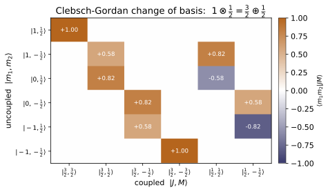
![Coupling two spin-$\tfrac12$'s, $\tfrac12\otimes\tfrac12=1\oplus0$: each coupled state is decomposed into the uncoupled basis $|\!\uparrow\uparrow\rangle,|\!\uparrow\downarrow\rangle,|\!\downarrow\uparrow\rangle,|\!\downarrow\downarrow\rangle$, with bar heights the Clebsch-Gordan amplitudes from ../code. The $M=0$ states split the doubled $|\!\uparrow\downarrow\rangle,|\!\downarrow\uparrow\rangle$ sector: the triplet $|1,0\rangle=(|\!\uparrow\downarrow\rangle+|\!\downarrow\uparrow\rangle)/\sqrt2$ is symmetric, the singlet $|0,0\rangle=(|\!\uparrow\downarrow\rangle-|\!\downarrow\uparrow\rangle)/\sqrt2$ antisymmetric (the QM-21 Bell state).](QM/QM-13_addition_angular_momenta/figures/fig2_singlet_triplet.svg)
Example problems
Two spin-½ particles have four product states. List their $M=m_1+m_2$ values and explain why the appearance of $M=0$ twice signals two different total spins. Answer: $M=+1,0,0,-1$ for $|\!\uparrow\uparrow\rangle,|\!\uparrow\downarrow\rangle,|\!\downarrow\uparrow\rangle,|\!\downarrow\downarrow\rangle$. A single multiplet of total $J$ has $M$ running once each from $-J$ to $J$ in unit steps. Here $M=1$ and $M=-1$ occur once, but $M=0$ twice — impossible for one multiplet, so there must be two: a $J=1$ triplet ($M=1,0,-1$) and a $J=0$ singlet ($M=0$). Hence $\tfrac12\otimes\tfrac12=1\oplus0$. Check: decomposition(0.5,0.5) → '1/2 (x) 1/2 = 1 (+) 0'; dimension_check(0.5,0.5) → (4,4). (test_multiplet_content_series, test_dimension_sum_rule.)
The four product states $|\!\uparrow\uparrow\rangle,|\!\uparrow\downarrow\rangle,|\!\downarrow\uparrow\rangle,|\!\downarrow\downarrow\rangle$ carry $M=m_1+m_2=+1,0,0,-1$. A single spin-$J$ multiplet must contain each $M$ from $-J$ to $J$ exactly once in unit steps; here $M=+1$ and $M=-1$ appear once each, so the largest multiplet is $J=1$ with $M=1,0,-1$ — and that uses up only one of the two $M=0$ states. The leftover $M=0$, with no partner at $M=\pm1$, can only be a $J=0$ singlet. Hence
This is exactly decomposition(0.5,0.5)→'1/2 (x) 1/2 = 1 (+) 0' with dimension_check(0.5,0.5)→(4,4).
Starting from $|1,1\rangle=|\!\uparrow\uparrow\rangle$, apply $J_-=J_{1-}+J_{2-}$ to generate the rest of the triplet, then write the singlet as the orthogonal $M=0$ combination. Answer: $J_-|\!\uparrow\uparrow\rangle=|\!\downarrow\uparrow\rangle+|\!\uparrow\downarrow\rangle$, so $|1,0\rangle=\tfrac1{\sqrt2}(|\!\uparrow\downarrow\rangle+|\!\downarrow\uparrow\rangle)$ and once more $|1,-1\rangle=|\!\downarrow\downarrow\rangle$. The singlet is the orthogonal one, $|0,0\rangle=\tfrac1{\sqrt2}(|\!\uparrow\downarrow\rangle-|\!\downarrow\uparrow\rangle)$ (triplet symmetric, singlet antisymmetric under particle swap). Check: coupled_basis(0.5,0.5) columns equal $[1,0,0,0]$, $[0,\tfrac1{\sqrt2},\tfrac1{\sqrt2},0]$, $[0,0,0,1]$, $[0,\tfrac1{\sqrt2},-\tfrac1{\sqrt2},0]$. (test_singlet_and_triplet_half_half, test_ladder_normalization_within_a_multiplet.)
For spin $\tfrac12$ the lowering operator gives $J_{i-}|\!\uparrow\rangle=\hbar|\!\downarrow\rangle$ (since $\hbar\sqrt{s(s+1)-m(m-1)}=\hbar$ at $s=m=\tfrac12$), so $J_-=J_{1-}+J_{2-}$ acts as
On the coupled side $J_-|1,1\rangle=\hbar\sqrt2\,|1,0\rangle$, so $|1,0\rangle=\tfrac1{\sqrt2}(|\!\uparrow\downarrow\rangle+|\!\downarrow\uparrow\rangle)$; one more lowering gives $|1,-1\rangle=|\!\downarrow\downarrow\rangle$. The singlet is the remaining unit vector of the $M=0$ sector orthogonal to $|1,0\rangle$, $|0,0\rangle=\tfrac1{\sqrt2}(|\!\uparrow\downarrow\rangle-|\!\downarrow\uparrow\rangle)$. In the uncoupled order $|\!\uparrow\uparrow\rangle,|\!\uparrow\downarrow\rangle,|\!\downarrow\uparrow\rangle,|\!\downarrow\downarrow\rangle$ these are the columns coupled_basis(0.5,0.5) returns: $[1,0,0,0]$, $[0,\tfrac1{\sqrt2},\tfrac1{\sqrt2},0]$, $[0,0,0,1]$, $[0,\tfrac1{\sqrt2},-\tfrac1{\sqrt2},0]$.
Couple spin $\tfrac32$ with spin $2$. What total spins are possible, and does the coupled basis still span the right space? Answer: $J=\tfrac72,\tfrac52,\tfrac32,\tfrac12$ (from $j_1+j_2=\tfrac72$ down to $|j_1-j_2|=\tfrac12$). Dimension: $(2\cdot\tfrac32+1)(2\cdot2+1)=4\cdot5=20$, and $\sum(2J+1)=8+6+4+2=20$. ✓ Check: multiplet_content(1.5,2.0) → [3.5,2.5,1.5,0.5]; dimension_check(1.5,2.0) → (20,20). (test_multiplet_content_series, test_dimension_sum_rule.)
The series runs from the "parallel" maximum $J=j_1+j_2=\tfrac32+2=\tfrac72$ down to the "antiparallel" minimum $J=|j_1-j_2|=\tfrac12$ in unit steps, each value once:
Coupling only re-labels the same Hilbert space, so the two basis counts must agree:
This is multiplet_content(1.5,2.0)→[3.5,2.5,1.5,0.5] and dimension_check(1.5,2.0)→(20,20).
Show that $J^2$ is not diagonal in the uncoupled basis (so the product states are not total-spin eigenstates), even though $J_z$ is. What is the culprit? Answer: $J^2=J_1^2+J_2^2+2J_{1z}J_{2z}+J_{1+}J_{2-}+J_{1-}J_{2+}$. The flip-flop term $J_{1\pm}J_{2\mp}$ connects $|m_1,m_2\rangle$ to $|m_1{\mp}1,m_2{\pm}1\rangle$ (same $M$), so $[J^2,J_{1z}]\ne0$ and $J^2$ has off-diagonal blocks. To build $J^2$ eigenstates you must take linear combinations of equal-$M$ product states — those coefficients are the Clebsch–Gordan coefficients. The total $J_z=J_{1z}+J_{2z}$ does commute with $J^2$. Check: J_squared(0.5,0.5) has nonzero off-diagonal entries; commutator($J^2$,J1z) $\ne0$ but commutator($J^2$,Jz) $=0$. (test_J2_not_diagonal_in_uncoupled_basis.)
Expand $J^2=(\mathbf J_1+\mathbf J_2)^2=J_1^2+J_2^2+2J_{1z}J_{2z}+J_{1+}J_{2-}+J_{1-}J_{2+}$. The flip-flop term $J_{1\pm}J_{2\mp}$ sends $|m_1,m_2\rangle\to|m_1{\mp}1,m_2{\pm}1\rangle$ — same $M=m_1+m_2$, but a different product state — so $J^2$ picks up off-diagonal entries inside each equal-$M$ block. For $\tfrac12\otimes\tfrac12$ (order $|\!\uparrow\uparrow\rangle,|\!\uparrow\downarrow\rangle,|\!\downarrow\uparrow\rangle,|\!\downarrow\downarrow\rangle$),
whose central ($M=0$) block is non-diagonal. Thus $[J^2,J_{1z}]\ne0$, while the total $[J^2,J_z]=0$. Numerically J_squared(0.5,0.5) shows the off-diagonal $1$'s, commutator($J^2$,J1z) has largest entry $1\ne0$, and commutator($J^2$,Jz)$=0$.
For $1\otimes\tfrac12$, write $|\tfrac32,\tfrac12\rangle$ and $|\tfrac12,\tfrac12\rangle$ in the uncoupled basis from the table. Answer: $|\tfrac32,\tfrac12\rangle=\sqrt{\tfrac13}\,|1,-\tfrac12\rangle+\sqrt{\tfrac23}\,|0,\tfrac12\rangle$ and $|\tfrac12,\tfrac12\rangle=\sqrt{\tfrac23}\,|1,-\tfrac12\rangle-\sqrt{\tfrac13}\,|0,\tfrac12\rangle$ (orthogonal, as they must be; Condon–Shortley sign on the largest-$m_1$ term). Check: cg_coefficient(1,1,0.5,-0.5,1.5,0.5) $=\sqrt{1/3}$; cg_coefficient(1,0,0.5,0.5,0.5,0.5) $=-\sqrt{1/3}$; cg_table(1,0.5). (test_one_times_half_table, test_cg_selection_rules_and_lookup.)
In $1\otimes\tfrac12$ the $M=\tfrac12$ sector holds exactly two product states, $|1,-\tfrac12\rangle$ and $|0,\tfrac12\rangle$ (both with $m_1+m_2=\tfrac12$); they split one each into the $J=\tfrac32$ and $J=\tfrac12$ multiplets. Reading Table 4.8,
orthogonal unit vectors, the Condon–Shortley sign making the largest-$m_1$ amplitude positive. Thus cg_coefficient(1,1,0.5,-0.5,1.5,0.5)$=\sqrt{1/3}=0.5774$ and the $|0,\tfrac12\rangle$ amplitude of $|\tfrac12,\tfrac12\rangle$, cg_coefficient(1,0,0.5,0.5,0.5,0.5)$=-\sqrt{1/3}=-0.5774$, both entries of cg_table(1,0.5).
Confirm that each $|J,M\rangle$ is a simultaneous eigenstate of $J^2,J_z,J_1^2,J_2^2$ — i.e. that $\{J^2,J_z,J_1^2,J_2^2\}$ is a complete set of commuting observables. Answer: By construction $|J,M\rangle$ has $J^2\to J(J+1)$, $J_z\to M$, $J_1^2\to j_1(j_1+1)$, $J_2^2\to j_2(j_2+1)$. These four operators commute, so a common eigenbasis exists; the change of basis $U$ from the uncoupled basis diagonalizes $J^2$ and $J_z$ together: $U^\dagger J^2 U=\mathrm{diag}\,J(J+1)$. Check: coupled_states_...: each column of coupled_basis(...) is an eigenvector of all four; U.conj().T @ J_squared @ U is diagonal. (test_coupled_states_are_simultaneous_eigenstates, test_U_block_diagonalizes_J2_and_Jz.)
Each coupled vector is built inside a single $(j_1,j_2)$ product space, so it is automatically an eigenstate of the Casimirs $J_1^2\to\hbar^2j_1(j_1+1)$ and $J_2^2\to\hbar^2j_2(j_2+1)$. It is assembled within one $M$-sector (eigenstate of $J_z\to\hbar M$) and forced to be an eigenstate of $J^2\to\hbar^2J(J+1)$ by the highest-weight$+$ladder construction. Since $\{J^2,J_z,J_1^2,J_2^2\}$ mutually commute a common eigenbasis exists, and the change of basis diagonalizes the mixed operator: $U^\dagger J^2U=\mathrm{diag}\,\hbar^2J(J+1)$. For $1\otimes\tfrac12$ this returns $\mathrm{diag}(3.75,3.75,3.75,3.75,0.75,0.75)$ — $J(J+1)=3.75$ for the $J=\tfrac32$ quartet and $0.75$ for the $J=\tfrac12$ doublet — exactly what U.conj().T @ J_squared @ U gives.
The Clebsch–Gordan transform is unitary. State what "the sum of the squares of each row (and column) of the CG table is 1" means physically. Answer: Unitarity says $U^\dagger U=UU^\dagger=\mathbb 1$. Column sum $=1$: each coupled state $|J,M\rangle$ is normalized. Row sum $=1$: an uncoupled state $|m_1,m_2\rangle$, if you measure total $(J,M)$, yields a probability $|\langle j_1 m_1 j_2 m_2|JM\rangle|^2$ for each outcome, and these probabilities sum to 1. Check: U.conj().T @ U $=I$; row/column sums of $|U|^2$ are all $1$. (test_coupled_basis_is_unitary.)
Both bases are orthonormal, so the change of basis $U$ (entries the CG coefficients) is unitary: $U^\dagger U=UU^\dagger=\mathbb1$. The column condition $\sum_{m_1,m_2}|\langle j_1m_1;j_2m_2|JM\rangle|^2=1$ just says each coupled state $|J,M\rangle$ is normalized. The row condition $\sum_{J,M}|\langle j_1m_1;j_2m_2|JM\rangle|^2=1$ is the probabilistic statement: prepare the product state $|m_1,m_2\rangle$, measure total $(J,M)$, and the possible outcomes occur with probabilities $|\langle j_1m_1;j_2m_2|JM\rangle|^2$ that must sum to one. Hence U.conj().T @ U$=I$ and every row (and column) sum of $|U|^2$ equals $1$ (e.g. $[1,1,1,1]$ for $\tfrac12\otimes\tfrac12$).
Verify the whole $1\otimes1$ Clebsch–Gordan table against an independent source, and name where this construction reappears. Answer: Every coefficient matches sympy.physics.wigner.clebsch_gordan to machine precision (same Condon–Shortley convention). The construction reappears as $\mathbf J=\mathbf L+\mathbf S$ in spin–orbit / fine structure (~QM-17, where $\mathbf L\!\cdot\!\mathbf S$ is the §2 cross term, diagonal in the coupled basis) and as the maximally-entangled Bell singlet $(|\!\uparrow\downarrow\rangle-|\!\downarrow\uparrow\rangle)/\sqrt2$ in entanglement (~QM-21). Check: cg_table(1,1) vs sympy.physics.wigner.clebsch_gordan. (test_cg_matches_sympy.)
The highest-weight$+$ladder recursion that builds $U$ is never graded against itself: every entry of cg_table(1,1) is compared to sympy.physics.wigner.clebsch_gordan (the same Condon–Shortley convention) and agrees to machine precision. For instance the $1\otimes1$ singlet comes out as
each coefficient $\pm1/\sqrt3=\pm0.57735$ matching sympy. The identical coupling reappears as $\mathbf J=\mathbf L+\mathbf S$ in fine structure (~QM-17, where $\mathbf L\!\cdot\!\mathbf S$ is diagonal in the coupled basis) and as the maximally entangled Bell singlet $(|\!\uparrow\downarrow\rangle-|\!\downarrow\uparrow\rangle)/\sqrt2$ in ~QM-21.
Run the worked code: cd QM/QM-13_addition_angular_momenta/code && python3 addition.py
QM-14 — Identical Particles
Quantum Mechanics trunk · QM/QM-14_identical_particles · open in the Teaching Network
Indistinguishability and the symmetrization postulate; bosons (symmetric under exchange, $P_{12}\Psi=+\Psi$) versus fermions (antisymmetric, $P_{12}\Psi=-\Psi$); the Pauli exclusion principle as a corollary of antisymmetry; the Slater determinant for $N$ fermions; exchange forces (why fermions effectively repel and bosons bunch, via the $\mp2|\langle x\rangle_{ab}|^2$ term); and a word on spin, the helium atom and the periodic table. (Griffiths 3e, Ch. 5.)
House rule for this module: nothing about symmetry is asserted — it is verified numerically. The boson state is checked to be a $+1$ eigenstate of the exchange operator and the fermion state a $-1$ eigenstate; Pauli is checked as a literal zero vector; the Slater determinant is checked antisymmetric under any pair swap, vanishing on a repeated orbital, and normalized to $\sqrt{N!}$; and the exchange force is checked against two independent closed forms (Griffiths Problems 5.6 and 5.7).
Key equations
Figures

![The exchange 'force', from exchange_dx2 in two potentials. Bars give the mean-square separation $\langle(x_1-x_2)^2\rangle$ for the symmetric (boson), distinguishable, and antisymmetric (fermion) states, each normalized to the distinguishable value (dotted line); annotations are the raw values. In both the infinite well ($n=1,2$) and the harmonic oscillator ($n=0,1$) the ordering is universal: $\langle(\Delta x)^2\rangle_{\mathrm{boson}}<\langle\cdot\rangle_{\mathrm{dist}}<\langle\cdot\rangle_{\mathrm{fermion}}$. The split is the single exchange term $\mp2|\langle x\rangle_{ab}|^2$ — bosons closer, fermions farther — with no real interaction.](QM/QM-14_identical_particles/figures/fig2_exchange_force.svg)
Example problems
For orthonormal one-particle states $|a\rangle,|b\rangle$, build the symmetric and antisymmetric combinations and show each is an eigenstate of the exchange operator $P_{12}$ with eigenvalue $+1$ (boson) and $-1$ (fermion), respectively. Answer: $\Psi_\pm=\tfrac{1}{\sqrt2}(|a\rangle|b\rangle\pm|b\rangle|a\rangle)$; since $P_{12}|a\rangle|b\rangle=|b\rangle|a\rangle$, $P_{12}\Psi_\pm=\pm\Psi_\pm$. Check: a,b = np.eye(3)[0], np.eye(3)[1], P = swap_operator(3): np.allclose(P@symmetrize(a,b), symmetrize(a,b)) and np.allclose(P@antisymmetrize(a,b), -antisymmetrize(a,b)). (test_boson_state_is_symmetric_and_normalized, test_fermion_state_is_antisymmetric_and_normalized.)
With orthonormal $|a\rangle,|b\rangle$ form $\Psi_\pm=\tfrac1{\sqrt2}(|a\rangle|b\rangle\pm|b\rangle|a\rangle)$. The exchange operator swaps the two slots, $P_{12}|a\rangle|b\rangle=|b\rangle|a\rangle$ and $P_{12}|b\rangle|a\rangle=|a\rangle|b\rangle$, so
Orthonormality also fixes the norm, $\langle\Psi_\pm|\Psi_\pm\rangle=\tfrac12(1+1)=1$. Thus the symmetric state is a $+1$ eigenstate (boson) and the antisymmetric a $-1$ eigenstate (fermion): P@symmetrize(a,b) $=$ symmetrize(a,b) and P@antisymmetrize(a,b) $=$ -antisymmetrize(a,b).
Show that two identical fermions cannot occupy the same one-particle state, while two bosons can. Answer: setting $\psi_b=\psi_a$ in $\Psi_-=A[\psi_a(1)\psi_a(2)-\psi_a(1)\psi_a(2)]=0$ — "no wave function at all." For bosons $\Psi_+=2A\,\psi_a(1)\psi_a(2)\neq0$. Check: a = np.array([.3,.4,-.5,.7]); a/=norm(a); norm(antisymmetrize(a,a)) $=0$, while norm(symmetrize(a,a)) $=1$. (test_pauli_exclusion_two_identical_orbitals, test_bosons_may_share_a_state.)
Set $\psi_b=\psi_a$ in the two combinations. The antisymmetric one has two identical tensor terms that cancel exactly,
"no wave function at all" — two identical fermions cannot share a state, the Pauli exclusion principle. The symmetric one does not cancel: $\Psi_+=A\cdot2\,|a\rangle|a\rangle$, which normalizes to the plain product $|a\rangle\otimes|a\rangle$, so any number of bosons may pile into one state. Hence norm(antisymmetrize(a,a)) $=0$ while norm(symmetrize(a,a)) $=1$.
For $\Psi_\pm=A[\psi_a(1)\psi_b(2)\pm\psi_b(1)\psi_a(2)]$ find $A$ (a) when $\psi_a,\psi_b$ are orthonormal, and (b) for bosons with $\psi_a=\psi_b$ normalized. Answer: (a) $\|\psi_a(1)\psi_b(2)\pm\psi_b(1)\psi_a(2)\|=\sqrt2$, so $A=1/\sqrt2$. (b) the symmetric state is $2A\,\psi_a(1)\psi_a(2)$ with $\|\,\|=2|A|=1$, so $A=\tfrac12$. (For non-orthogonal normalized orbitals with overlap $s$, $A=1/\sqrt{2(1\pm|s|^2)}$.) Check: orthonormal a,b = np.eye(2): norm(tensor(a,b)+tensor(b,a))$=\sqrt2$; non-orthogonal b=np.array([1,1])/np.sqrt(2) ($|s|^2=\tfrac12$): norm(tensor(a,b)+tensor(b,a))$=\sqrt3$, ...-...$=1$. (test_general_normalization_nonorthogonal.)
Expand the squared norm of the raw combination using $\langle a|a\rangle=\langle b|b\rangle=1$:
(a) Orthonormal ($s=0$): the norm is $\sqrt2$, so $A=1/\sqrt2$. (b) Bosons with $\psi_a=\psi_b$: the symmetric state is $2A\,|a\rangle|a\rangle$ of norm $2|A|=1$, so $A=\tfrac12$. In general $A=1/\sqrt{2(1\pm|s|^2)}$. Numerically the orthonormal raw norm is $\sqrt2=1.4142$, while for $b=(1,1)/\sqrt2$ (so $|s|^2=\tfrac12$) the sum has norm $\sqrt3=1.7321$ and the difference norm $1$.
Construct the completely antisymmetric state of three fermions in orthonormal orbitals $\phi_1,\phi_2,\phi_3$ and verify it changes sign under the interchange of any pair. Answer: the $3\times3$ Slater determinant, equivalently $\Psi=\tfrac{1}{\sqrt6}\sum_{\sigma}\mathrm{sgn}(\sigma)\,\phi_{\sigma(1)}\phi_{\sigma(2)}\phi_{\sigma(3)}$; any pair swap permutes two columns, so $\Psi\to-\Psi$. Check: e = np.eye(3); Psi = slater_determinant([e[0],e[1],e[2]]); for each pair (p,q): np.allclose(apply_pair_swap(Psi,3,3,p,q), -Psi). (test_slater_antisymmetric_under_any_pair_swap.)
The completely antisymmetric three-fermion state is the antisymmetrizer applied to the product,
the tensor-space form of the $3\times3$ Slater determinant $\det[\phi_i(\mathbf r_j)]$. Interchanging particles $p$ and $q$ permutes two columns of that determinant, which flips its sign, so $P_{pq}\Psi=-\Psi$ for every pair. With $\phi_i=e_i$ the code confirms apply_pair_swap(Psi,3,3,p,q) $=-\Psi$ for all three pairs $(0,1),(0,2),(1,2)$.
Show that the Slater determinant vanishes if two orbitals coincide (Pauli for $N$ fermions), and that for orthonormal orbitals the prefactor is $1/\sqrt{N!}$. Answer: two equal orbitals are two equal rows $\Rightarrow\det=0$. The raw antisymmetric sum has $\langle\Psi|\Psi\rangle=\sum_\sigma1=N!$, so dividing by $\sqrt{N!}$ normalizes it. Check: norm(slater_determinant([e[0],e[1],e[0]])) $=0$; norm(slater_determinant([e[0],e[1],e[2]], normalize_state=False)) $=\sqrt{3!}=\sqrt6$. (test_slater_vanishes_if_two_orbitals_coincide, test_slater_normalization_is_sqrt_N_factorial.)
If two orbitals coincide the determinant has two equal rows, and a determinant with two equal rows is zero — Pauli exclusion for $N$ fermions. For the prefactor, expand the raw antisymmetric sum's norm with orthonormal orbitals: cross terms between distinct permutations vanish (each carries a factor $\langle\phi_i|\phi_j\rangle=0$), leaving one surviving term per permutation,
so the raw norm is $\sqrt{N!}$ and dividing by it normalizes the state. Hence norm(slater_determinant([e[0],e[1],e[0]])) $=0$ and the raw norm norm(...,normalize_state=False) $=\sqrt{3!}=\sqrt6=2.449$.
Two noninteracting particles in the infinite well, one in $\psi_1$, one in $\psi_2$. Compute $\langle(x_1-x_2)^2\rangle$ for distinguishable, boson and fermion cases (width $L=1$). Answer: $\langle x\rangle_n=\tfrac L2$, $\langle x^2\rangle_n=L^2(\tfrac13-\tfrac1{2n^2\pi^2})$, and $\langle x\rangle_{12}=-\tfrac{16L}{9\pi^2}$, giving distinguishable $=L^2(\tfrac16-\tfrac{5}{8\pi^2})\approx0.1033\,L^2$ and an exchange term $2|\langle x\rangle_{12}|^2=\tfrac{512L^2}{81\pi^4}\approx0.0649\,L^2$, so boson $\approx0.0384\,L^2$ and fermion $\approx0.1682\,L^2$. Check: x=np.linspace(0,1,8001); r=exchange_dx2(well_state(1,x),well_state(2,x),x); r["distinguishable"]$\approx0.1033$, r["exchange_term"]$\approx0.0649$, r["boson"] < r["distinguishable"] < r["fermion"]. (test_exchange_force_infinite_well_closed_form, test_exchange_force_ordering_infinite_well.)
For the well $\langle x\rangle_n=\tfrac L2$ and $\langle x^2\rangle_n=L^2(\tfrac13-\tfrac1{2n^2\pi^2})$, while the off-diagonal element is
The distinguishable value is $\langle x^2\rangle_1+\langle x^2\rangle_2-2\langle x\rangle_1\langle x\rangle_2=L^2(\tfrac16-\tfrac5{8\pi^2})\approx0.1033$, and the exchange term is $2|\langle x\rangle_{12}|^2=\tfrac{512L^2}{81\pi^4}\approx0.0649$. Bosons subtract it (closer, $\approx0.0384$), fermions add it (farther, $\approx0.1682$). This matches r["distinguishable"] $\approx0.1033$, r["exchange_term"] $\approx0.0649$, with r["boson"] < r["distinguishable"] < r["fermion"].
Two particles share a harmonic-oscillator potential, one in the ground state, one in the first excited state. Find $\langle(x_1-x_2)^2\rangle$ for the three cases (natural units $\hbar=m=\omega=1$). Answer: $\langle x\rangle_0=\langle x\rangle_1=0$, $\langle x^2\rangle_0=\tfrac12$, $\langle x^2\rangle_1=\tfrac32$, and $\langle x\rangle_{01}=\tfrac1{\sqrt2}$, so distinguishable $=2$, exchange term $2|\langle x\rangle_{01}|^2=1$, hence boson $=1$, fermion $=3$ (units $\hbar/m\omega$). Check: x=np.linspace(-9,9,8001); r=exchange_dx2(ho_state(0,x),ho_state(1,x),x); r["distinguishable"]$\approx2$, r["boson"]$\approx1$, r["fermion"]$\approx3$. (test_exchange_force_harmonic_oscillator_closed_form.)
In natural units $\langle x\rangle_n=0$ and $\langle x^2\rangle_n=n+\tfrac12$, so $\langle x^2\rangle_0=\tfrac12$ and $\langle x^2\rangle_1=\tfrac32$. Writing $x=\tfrac1{\sqrt2}(a+a^\dagger)$ gives the one nonzero off-diagonal element
Then distinguishable $=\langle x^2\rangle_0+\langle x^2\rangle_1-0=2$ and the exchange term $2|\langle x\rangle_{01}|^2=1$, so boson $=2-1=1$ and fermion $=2+1=3$. Confirmed by r["distinguishable"] $\approx2$, r["boson"] $\approx1$, r["fermion"] $\approx3$.
Show that the exchange term vanishes if the two orbitals do not overlap, so spatially separated identical particles behave as distinguishable. Answer: the exchange term is $\mp2|\langle x\rangle_{ab}|^2$ with $\langle x\rangle_{ab}=\int x\,\psi_a^\psi_b\,dx$; if $\psi_a\psi_b=0$ everywhere the integral is $0$, so boson $=$ fermion $=$ distinguishable. Check:* place $\psi_a$ on $[0,1]$ and $\psi_b$ on $[2,3]$: x=np.linspace(0,3,9001), a=np.where(x<=1, well_state(1,x), 0.), b=np.where((x>=2)&(x<=3), well_state(1,x-2), 0.), r=exchange_dx2(a,b,x): abs(r["exchange_term"]) < 1e-10. (test_no_exchange_force_without_overlap.)
The entire identical-particle effect rides on the off-diagonal element $\langle x\rangle_{ab}=\int x\,\psi_a^(x)\psi_b(x)\,dx$. If the orbitals have disjoint support — $\psi_a$ on $[0,1]$, $\psi_b$ on $[2,3]$ — then the product $\psi_a^(x)\psi_b(x)=0$ at every $x$, so the integrand vanishes identically and $\langle x\rangle_{ab}=0$. The exchange term $2|\langle x\rangle_{ab}|^2$ is then $0$ and boson $=$ distinguishable $=$ fermion: spatially separated identical particles behave as distinguishable. The code gives abs(r["exchange_term"]) < 1e-10 (here exactly $0$), with the three $\langle(\Delta x)^2\rangle$ values equal.
The two electrons of helium in the $1s^2$ ground state share the same spatial orbital. What spin state must they be in, and why can't they both be spin up? Answer: the spatial part $1s(1)\,1s(2)$ is symmetric ($P_{12}=+1$); the total two-electron state must be antisymmetric, so the spin part must be the antisymmetric singlet ($P_{12}=-1$). "Both spin up" is the symmetric $|\!\uparrow\uparrow\rangle$ paired with the symmetric spatial state — overall symmetric, forbidden; equivalently the antisymmetrizer of two identical $|\!\uparrow\rangle$ spins is zero (Pauli). Check: P=swap_operator(2); s=singlet(): np.allclose(P@s, -s) (antisym.); norm(antisymmetrize(spin_up(), spin_up())) $=0$ (both-up forbidden); each triplet() state has np.allclose(P@t, +t). (test_spin_singlet_antisymmetric_triplet_symmetric, test_helium_ground_state_requires_singlet.)
The full two-electron state must be antisymmetric. In $1s^2$ both electrons share the same spatial orbital, so the spatial part $1s(1)\,1s(2)$ is symmetric, $P_{12}=+1$. To make the product antisymmetric the spin part must carry $P_{12}=-1$, i.e. the antisymmetric singlet $\tfrac1{\sqrt2}(|\!\uparrow\downarrow\rangle-|\!\downarrow\uparrow\rangle)$; the product of exchange eigenvalues is $(+1)(-1)=-1$. "Both spin up" is the symmetric $|\!\uparrow\uparrow\rangle$, which paired with the symmetric spatial state is overall symmetric — forbidden; equivalently antisymmetrizing two identical $|\!\uparrow\rangle$ spins gives the zero vector. Hence P@s $=-s$, norm(antisymmetrize(spin_up(), spin_up())) $=0$, and each triplet() state satisfies P@t $=+t$.
Run the worked code: cd QM/QM-14_identical_particles/code && python3 identical.py
QM-15 — Approximation Methods I (Perturbation Theory, Variational Principle, WKB)
Quantum Mechanics trunk · QM/QM-15_approximations_i · open in the Teaching Network
The three pillars of time-independent approximation, as code you can run and check against exact diagonalization / exact spectra:
1. Perturbation theory (Griffiths §7.1–7.2). For $H=H^0+\lambda H'$: first-order energy $E_n^{(1)}=\langle n|H'|n\rangle$, the first-order state, and second-order energy $E_n^{(2)}=\sum_{m\neq n}|\langle m|H'|n\rangle|^2/ (E_n^0-E_m^0)$. Degenerate PT: the splitting is the set of eigenvalues of $H'$ in the degenerate subspace. The truncation error is shown to scale as $O(\lambda^2)$ (1st order) and $O(\lambda^3)$ (through 2nd order). 2. Variational principle (Griffiths Ch.8). $\langle H\rangle\ge E_{gs}$ for any trial state; a Gaussian family minimized over its width gives an upper bound — exact for the oscillator, tight-from-above for a quartic well. 3. WKB (Griffiths Ch.9). Bohr–Sommerfeld $\int_{x_1}^{x_2}p\,dx=(n+\tfrac12) \pi\hbar$ recovers the oscillator exactly and other wells asymptotically; tunnelling $T\approx e^{-2\int\kappa\,dx}$ shares the exact exponent of ~QM-08's barrier.
House rule for this module: every approximation is pinned to a truth. PT is checked against exact matrix diagonalization (and its error scaling measured); the variational bound is checked to lie above an exact finite-difference ground state; WKB is checked against the analytic oscillator spectrum, Airy-function zeros, and QM-08's exact transmission. Nothing is asserted that isn't measured.
> Units. Natural units $\hbar=m=\omega=1$ throughout (documented in > approximations.py); the oscillator test bed has $E_n=n+\tfrac12$.
Key equations
Figures
![Variational principle (QM-15). Gaussian trial energy $\langle H\rangle(b)$ for $\psi_b\propto e^{-bx^2}$ vs width $b$: oscillator $V=\tfrac12x^2$ (blue, closed form gaussian_ho_energy) and quartic $V=\tfrac14x^4$ (orange, grid Rayleigh quotient variational_energy). Every point lies above the true ground state (dashed). Minimizing (dots, gaussian_variational_min) hits $E_0=\tfrac12$ exactly for the oscillator — the family contains the true state — but for the quartic the bound settles ~2% above the exact finite-difference $E_{gs}\approx0.421$. $\hbar=m=\omega=1$.](QM/QM-15_approximations_i/figures/fig1_variational.svg)

Example problems
For $H=H^0+\lambda H'$, show the first-order energy shift is $E_n^{(1)}=\langle\psi_n^0|H'|\psi_n^0\rangle$. Apply it to the oscillator with $H'=x^2$ and with $H'=x$. Answer: $\langle n|x^2|n\rangle=n+\tfrac12$ (stiffening raises every level); $\langle n|x|n\rangle=0$ by parity (a uniform field gives no first-order shift). Check: first_order_energy(ho_energies(40), ho_matrix_power(40,2), 2) → 2.5; first_order_energy(ho_energies(40), ho_position(40), 2) → 0.0. (test_first_order_energy_is_expectation_value.)
Insert the series into $H|\psi_n\rangle=E_n|\psi_n\rangle$ and collect $O(\lambda)$: $H^0|\psi_n^{(1)}\rangle+H'|\psi_n^0\rangle=E_n^0|\psi_n^{(1)}\rangle+E_n^{(1)}|\psi_n^0\rangle$. Project onto $\langle\psi_n^0|$; since $H^0$ is Hermitian, $\langle\psi_n^0|H^0|\psi_n^{(1)}\rangle=E_n^0\langle\psi_n^0|\psi_n^{(1)}\rangle$ cancels the matching term on the right, leaving $E_n^{(1)}=\langle\psi_n^0|H'|\psi_n^0\rangle$. With $x=\tfrac1{\sqrt2}(a+a^\dagger)$ the number-conserving terms give $\langle n|x^2|n\rangle=\tfrac12\langle n|(aa^\dagger+a^\dagger a)|n\rangle=\tfrac12(2n+1)=n+\tfrac12$, while $\langle n|x|n\rangle=0$ because $x$ sends $|n\rangle\to|n\pm1\rangle$. At $n=2$ these are $2.5$ and $0$ — matching first_order_energy(...,ho_matrix_power(40,2),2)→2.5 and (...,ho_position(40),2)→0.0.
Derive $E_n^{(2)}=\sum_{m\neq n}|\langle m|H'|n\rangle|^2/(E_n^0-E_m^0)$ and evaluate it for the oscillator with $H'=x^2$. Why is $E_0^{(2)}\le0$ for any $H'$? Answer: $E_n^{(2)}=-\tfrac12(n+\tfrac12)$. For the ground state every denominator $E_0^0-E_m^0<0$, so $E_0^{(2)}\le0$ — second order always pushes the ground state down (states "repel"). Check: second_order_energy(ho_energies(60), ho_matrix_power(60,2), 2) → -1.25. (test_second_order_energy_formula, test_second_order_energy_pushes_ground_state_down.)
Projecting the $O(\lambda^2)$ equation onto $\langle\psi_n^0|$ and substituting $|\psi_n^{(1)}\rangle=\sum_{m\neq n}\frac{\langle m|H'|n\rangle}{E_n^0-E_m^0}|m\rangle$ gives $E_n^{(2)}=\sum_{m\neq n}|\langle m|H'|n\rangle|^2/(E_n^0-E_m^0)$. For $H'=x^2=\tfrac12(a+a^\dagger)^2$ the only off-diagonal links are $\langle n{+}2|x^2|n\rangle=\tfrac12\sqrt{(n{+}1)(n{+}2)}$ and $\langle n{-}2|x^2|n\rangle=\tfrac12\sqrt{n(n{-}1)}$, with denominators $\mp2$:
For $n=2$ this is $-1.25$. For the ground state every $E_m^0>E_0^0$ makes each denominator negative while $|\langle m|H'|n\rangle|^2\ge0$, so $E_0^{(2)}\le0$ — the levels repel. Matches second_order_energy(...,ho_matrix_power(60,2),2)→-1.25.
Truncating after first order should be accurate to $O(\lambda^2)$, and through second order to $O(\lambda^3)$. Verify the scaling against exact diagonalization of $\operatorname{diag}(E^0)+\lambda H'$ (with $H'=x^2$) by halving $\lambda$. Answer: the first-order error drops by $\approx4$ per halving (slope $\lambda^2$), the through-second-order error by $\approx8$ (slope $\lambda^3$). Check: compare perturbed_energy(...,order=1) and order=2 to exact_energy at $\lambda=0.04,0.02,0.01$. (test_first_order_error_is_order_lambda_squared, test_through_second_order_error_is_order_lambda_cubed.)
The exact eigenvalue expands as $E_n=E_n^0+\lambda E_n^{(1)}+\lambda^2 E_n^{(2)}+\lambda^3 E_n^{(3)}+\cdots$. Truncating after first order leaves the remainder $\lambda^2 E_n^{(2)}+O(\lambda^3)=O(\lambda^2)$; through second order leaves $\lambda^3 E_n^{(3)}+O(\lambda^4)=O(\lambda^3)$. So halving $\lambda$ should divide the first-order error by $2^2=4$ and the through-second-order error by $2^3=8$. Diagonalizing $\operatorname{diag}(E^0)+\lambda x^2$ exactly at $\lambda=0.04,0.02,0.01$ gives first-order errors $\{3.85,0.98,0.25\}\times10^{-4}$ (ratios $\times3.9,\times4.0$) and through-second errors $\{1.52,0.20,0.025\}\times10^{-5}$ (ratios $\times7.8,\times7.9$) — exactly the $O(\lambda^2)$ and $O(\lambda^3)$ scalings the test__error_is_order_lambda_ checks assert.
For $H=\tfrac{p^2}{2}+\tfrac12x^2+\lambda x$, find the exact spectrum and compare to perturbation theory. Answer: complete the square: $H=\tfrac{p^2}{2}+\tfrac12(x+\lambda)^2-\tfrac12 \lambda^2$, so $E_n=(n+\tfrac12)-\tfrac12\lambda^2$ exactly. PT gives $E_n^{(1)}=0$, $E_n^{(2)}=-\tfrac12$, and all higher corrections vanish — so through second order PT is exact. Check: perturbed_energy(ho_energies(60), ho_position(60), n, 0.3, order=2) $=(n+\tfrac12)-\tfrac12(0.3)^2$ to machine precision. (test_stark_perturbation_exact_through_second_order.)
Complete the square: $H=\tfrac{p^2}{2}+\tfrac12(x+\lambda)^2-\tfrac12\lambda^2$ is a harmonic oscillator recentred at $x=-\lambda$, so the exact spectrum is $E_n=(n+\tfrac12)-\tfrac12\lambda^2$. Perturbatively, $H'=x$ gives $E_n^{(1)}=\langle n|x|n\rangle=0$ by parity, and only $m=n\pm1$ contribute to second order, with $|\langle n{\pm}1|x|n\rangle|^2= \tfrac12(n{+}1),\tfrac12 n$ and denominators $\mp1$:
The shift $-\tfrac12\lambda^2$ is reproduced already at second order and every higher correction vanishes (the square completes exactly), so PT is exact here. At $\lambda=0.3$, $\tfrac12\lambda^2=0.045$, so perturbed_energy(...,n,0.3,order=2)$=(n+\tfrac12)-0.045$, i.e. $0.455,1.455,2.455$ for $n=0,1,2$.
Two states are degenerate at $E^0$. Why does ordinary PT fail, and what replaces the first-order energy? Show the naive answer (diagonal matrix elements) is wrong when the perturbation couples the two states. Answer: ordinary PT divides by $E_n^0-E_m^0=0$. The first-order splittings are the eigenvalues of $H'$ in the degenerate subspace ($W_{ij}=\langle i|H'|j \rangle$); its eigenvectors are the "good" states. With an off-diagonal $W_{01} \neq0$, the eigenvalues lie outside $\{W_{00},W_{11}\}$ (interlacing), so the diagonal entries are not the splittings. Check: for the $W=\begin{psmallmatrix}0.3&0.4\\0.4&-0.2\end{psmallmatrix}$ block, degenerate_first_order_split(Hp,[0,1]) → [-0.422, 0.522], matching $(E^{\text{exact}}-E^0)/\lambda$ as $\lambda\to0$, while the diagonal gives $[-0.2,0.3]$. (test_degenerate_split_equals_subspace_eigenvalues, test_naive_nondegenerate_answer_is_wrong.)
Ordinary PT puts $E_n^0-E_m^0=0$ in the denominator for the two degenerate states, so it diverges; the cure is that $H'$ itself selects the "good" zeroth-order states. Projecting the $O(\lambda)$ equation into the degenerate subspace turns the first-order problem into the eigenvalue equation $\det(W-E^{(1)}\mathbb 1)=0$ with $W_{ij}=\langle i|H'|j\rangle$. For $W=\begin{pmatrix}0.3&0.4\\0.4&-0.2\end{pmatrix}$,
The off-diagonal $0.4$ pushes the eigenvalues outside the diagonal pair $\{W_{00},W_{11}\}= \{0.3,-0.2\}$ (eigenvalue interlacing), so the naive answer $[-0.2,0.3]$ is wrong. degenerate_first_order_split(Hp,[0,1])→[-0.422, 0.522] matches $(E^{\text{exact}}-E^0)/\lambda$ as $\lambda\to0$.
Prove $\langle H\rangle_\psi\ge E_{gs}$ for any normalized $\psi$. Then minimize a Gaussian trial $\psi_b=(2b/\pi)^{1/4}e^{-bx^2}$ on the oscillator and explain why the bound is hit exactly. Answer: expand $\psi=\sum c_n\psi_n$; $\langle H\rangle=\sum|c_n|^2E_n\ge E_{gs}$. For the oscillator $\langle H\rangle(b)=b/2+1/(8b)$, minimized at $b=\tfrac12$ giving $\langle H\rangle=\tfrac12=E_0$ — exact, because the Gaussian family contains the true ground state. Check: gaussian_variational_min(lambda t: 0.5*t**2, x) → (0.5, 0.5). (test_variational_gaussian_recovers_oscillator_exactly.)
Expand any normalized trial state in the (unknown) energy eigenbasis, $\psi=\sum_n c_n\psi_n$ with $\sum_n|c_n|^2=1$; then $\langle H\rangle=\sum_n|c_n|^2E_n\ge E_{gs}\sum_n|c_n|^2=E_{gs}$ since every $E_n\ge E_{gs}$, with equality only for $\psi=\psi_{gs}$. For the Gaussian on $V=\tfrac12 x^2$,
The bound is saturated because at $b=\tfrac12$ the trial $\psi_b\propto e^{-x^2/2}$ is the exact ground state $\psi_0$. Hence gaussian_variational_min(lambda t: 0.5*t**2, x)→(0.5, 0.5): minimum energy $0.5=E_0$ at width $b=0.5$.
Use a Gaussian trial to bound the ground-state energy of $V=\tfrac14x^4$. Is the bound exact? By how much does it exceed the truth? Answer: minimizing gives $\langle H\rangle_{\min}\approx0.4293$, which lies $\approx2\%$ above the exact $E_{gs}\approx0.4208$ (finite-difference) — a genuine, non-saturated upper bound (the Gaussian is not the true quartic ground state). The inequality holds at every width $b$, not just the optimum. Check: gaussian_variational_min(lambda t: 0.25t4, x)[0] $\ge$ fd_ground_energy(lambda t: 0.25t4, ...). (test_variational_quartic_bound_is_tight_but_above, test_variational_is_an_upper_bound.)
For the Gaussian, $\langle T\rangle=\tfrac{\hbar^2 b}{2m}=\tfrac{b}{2}$ and $\langle x^4\rangle=3\langle x^2\rangle^2=3/(16b^2)$, so on $V=\tfrac14 x^4$
giving $\langle H\rangle_{\min}\approx0.4293$. Unlike the oscillator the Gaussian is not the true quartic ground state, so this is a strict over-estimate: the finite-difference truth is $E_{gs}\approx0.4208$, about $2\%$ below ($0.4293\ge0.4208$). The inequality in fact holds at every width $b$. So gaussian_variational_min(lambda t: 0.25*t**4, x)[0]$=0.4293\ge$ fd_ground_energy(...)$=0.4208$.
Apply $\int_{x_1}^{x_2}p\,dx=(n+\tfrac12)\pi\hbar$ to $V=\tfrac12\omega^2x^2$. Why is WKB exact here but only approximate for $V=\tfrac14x^4$? Answer: the oscillator action is $\int_{-x_0}^{x_0}\sqrt{2(E-\tfrac12x^2)}\,dx =\pi E/\omega$, so $\pi E/\omega=(n+\tfrac12)\pi\Rightarrow E_n=n+\tfrac12$ — exact. WKB drops the $A''/A$ term, which vanishes identically for the oscillator but not for the quartic; there the error is $O(1/n)$ (18% at $n=0$, $<1\%$ by $n=2$) — WKB is a semiclassical (large-$n$) method. Check: bohr_sommerfeld_energy(lambda t:0.5*t**2, n, -80, 80) → n+0.5 exactly; the quartic errors shrink with $n$. (test_wkb_recovers_oscillator_exactly, test_wkb_quartic_improves_with_quantum_number.)
With $p=\sqrt{2(E-\tfrac12 x^2)}$ the turning points are $x_0=\pm\sqrt{2E}$ and the action is the area of a momentum ellipse,
exactly the oscillator spectrum. WKB drops the $A''/A$ term; for the quadratic potential this does not disturb the quantization condition (the result is exact), but for $V=\tfrac14 x^4$ it does, leaving an $O(1/n)$ semiclassical error. Numerically bohr_sommerfeld_energy(lambda t:0.5*t**2, n, -80, 80) returns $0.5,1.5,2.5,3.5$ (exact), while the quartic error falls from $18\%$ at $n=0$ to $1.3\%$ ($n=1$) and $0.6\%$ ($n=2$) — WKB is a large-$n$ method.
For a rectangular barrier ($V_0>E$, width $a$) compute the WKB transmission and compare to QM-08's exact result. What do they share, and where do they differ? Answer: $T_{\text{WKB}}=e^{-2\kappa a}$, $\kappa=\sqrt{2m(V_0-E)}/\hbar$. The exact $T=[1+\tfrac{V_0^2\sinh^2\kappa a}{4E(V_0-E)}]^{-1}\to\tfrac{16E(V_0-E)}{V_0^2} e^{-2\kappa a}$ for a thick barrier: same exponent, the ratio $T_{\text{exact}}/T_{\text{WKB}}\to16E(V_0-E)/V_0^2$ is constant in $a$. WKB captures the dominant exponential and misses only the $O(1)$ prefactor (this is the engine of Gamow's alpha-decay law, Example 9.2). Check: tunneling_rectangular(2,10,a) vs transmission_barrier(2,10,a) (from ~QM-08): the ratio is $2.56=16\cdot2\cdot8/100$ for all thick $a$. (test_wkb_tunneling_shares_exact_exponent.)
In the forbidden region the momentum magnitude is constant, $|p|=\sqrt{2m(V_0-E)}\equiv\hbar\kappa$ with $\kappa=\sqrt{2(V_0-E)}=4$ here, so $\gamma=\kappa a$ and $T_{\text{WKB}}=e^{-2\kappa a}$. QM-08's exact $T=[1+\tfrac{V_0^2\sinh^2\kappa a}{4E(V_0-E)}]^{-1}$ uses $\sinh\kappa a\to\tfrac12 e^{\kappa a}$ for a thick barrier, giving
Both decay with the same exponent $e^{-2\kappa a}$; WKB misses only the constant $O(1)$ prefactor. tunneling_rectangular(2,10,a) and transmission_barrier(2,10,a) give ratio $2.56000$ for all thick $a$ ($a=3,5,8$) — the exponent that powers Gamow's alpha-decay law.
Run the worked code: cd QM/QM-15_approximations_i/code && python3 approximations.py
QM-16 — Approximation Methods II: Time-Dependent Perturbation Theory & Fermi's Golden Rule
Quantum Mechanics trunk · QM/QM-16_time_dependent_perturbation · open in the Teaching Network
What makes a quantum system jump from one state to another: a time-dependent term in the Hamiltonian. Static potentials only give stationary states with constant occupation probabilities (~QM-03); transitions require $H'(t)$. As evaluable formulae and honest dynamics (Griffiths 3e Ch. 11):
1. First-order transition amplitude. Start in $|i\rangle$; to first order in a small perturbation the amplitude to be found in $|f\rangle$ is $c_f^{(1)}(t)=-\tfrac{i}{\hbar}\int_0^t\langle f|H'(t')|i\rangle\, e^{i\omega_{fi}t'}\,dt'$, and $P_{i\to f}=|c_f^{(1)}|^2$. 2. Two-level system & Rabi oscillations. The exact solvable case: a constant coupling drives complete sinusoidal flopping between two levels, the generalized Rabi formula $P=\frac{\Omega_R^2}{\Omega_R^2+\delta^2}\sin^2\!\big(\tfrac12\sqrt{\Omega_R^2+\delta^2}\,t\big)$ — full inversion on resonance ($\delta=0$), capped below 1 off resonance. 3. Sinusoidal perturbations & resonance. A drive $H'=V\cos\omega t$ produces a $\mathrm{sinc}^2$ resonance line: $P(\omega)$ peaks sharply at $\omega=\omega_{fi}$, with peak $\propto t^2$ and width $\propto 1/t$. 4. Fermi's golden rule. A discrete state coupled to a continuum of density $\rho(E_f)$ decays at a constant rate $\Gamma=\frac{2\pi}{\hbar}|\langle f|H'|i\rangle|^2\rho(E_f)$. 5. Emission/absorption & selection rules — a word on how light drives atoms (absorption, stimulated and spontaneous emission), and why most matrix elements vanish (the bridge to ~QM-17).
House rule for this module: nothing is asserted, everything is checked — the Rabi formula against the exact $2\times2$ evolution, first-order PT against the honest time-dependent Schrödinger equation (no RWA, no weak-coupling assumption), and the golden-rule rate against both the linear-in-$t$ derivation and the exponential decay of an $(N{+}1)$-level band model.
Key equations
Figures

![First-order transition probability under a sinusoidal drive $P=|V_{fi}|^2\,\sin^2[(\omega_{fi}-\omega)t/2]/(\omega_{fi}-\omega)^2$ vs the drive frequency, for three driving times (V_fi=0.05, omega_fi=1). The line is a sinc^2 sharply peaked on resonance omega=omega_fi (dotted): the central peak grows like t^2 while the width shrinks like 1/t (first zeros at omega_fi ± 2*pi/t). Driving longer makes the resonance taller and more frequency-selective — the energy-time complementarity behind spectroscopic linewidths and Fermi's golden rule.](QM/QM-16_time_dependent_perturbation/figures/fig2_resonance_lineshape.svg)
Example problems
A system in $|i\rangle$ feels a constant perturbation with matrix element $\langle f|H'|i\rangle=V_{fi}$ over $0\le t'\le t$. Use the first-order amplitude $c_f^{(1)}=-\tfrac{i}{\hbar}\int_0^t V_{fi}e^{i\omega_{fi}t'}dt'$ to find $P_{i\to f}(t)$. Answer: $c_f^{(1)}=-V_{fi}\dfrac{e^{i\omega_{fi}t}-1}{\hbar\,\omega_{fi}}$, so $P_{i\to f}=\dfrac{|V_{fi}|^2}{\hbar^2}\dfrac{4\sin^2(\omega_{fi}t/2)}{\omega_{fi}^2}$ — oscillatory, peaked at small $\omega_{fi}$, and only valid while $P\ll1$. Check: first_order_probability(0.013, 0.7, 9.0) equals $0.013^2\cdot4\sin^2(0.7\cdot9/2)/0.7^2$. (test_first_order_amplitude_constant_closed_form.)
The integral is elementary:
Factor $e^{i\omega_{fi}t}-1=e^{i\omega_{fi}t/2}\,(e^{i\omega_{fi}t/2}-e^{-i\omega_{fi}t/2})=e^{i\omega_{fi}t/2}\,2i\sin(\omega_{fi}t/2)$, so $|e^{i\omega_{fi}t}-1|^2=4\sin^2(\omega_{fi}t/2)$ and
It oscillates in $t$ and is largest for small $\omega_{fi}$ (near-degenerate levels), valid only while $P\ll1$. With $\hbar=1$, first_order_probability(0.013, 0.7, 9.0)$=9.75\times10^{-8}$, matching $0.013^2\cdot4\sin^2(0.7\cdot9/2)/0.7^2$ to the integrator tolerance.
A two-level system is driven on resonance ($\delta=0$) with Rabi frequency $\Omega_R$. (a) Write $P_{i\to f}(t)$. (b) When is the population first fully in $|f\rangle$? (c) Confirm the closed form equals the exact $2\times2$ time evolution. Answer: (a) $P=\sin^2(\Omega_R t/2)$. (b) Full inversion at $t=\pi/\Omega_R$ (a "$\pi$-pulse" — flip a qubit). (c) Diagonalizing $H=\tfrac12\Omega_R\sigma_x$ and evolving $|i\rangle$ gives the same number. Check: rabi_probability(np.pi, 1.0, 0.0) $=1.0$; two_level_exact_probability(np.pi, 0.0, 1.0) $=1.0$. (test_rabi_resonance_full_inversion, test_rabi_formula_matches_exact_dynamics.)
(a) Setting $\delta=0$ in the generalized Rabi formula, the cap $\Omega_R^2/(\Omega_R^2+\delta^2)\to1$ and $\sqrt{\Omega_R^2+\delta^2}\to\Omega_R$, so $P=\sin^2(\Omega_R t/2)$. (b) This first equals $1$ when $\Omega_R t/2=\pi/2$, i.e. $t=\pi/\Omega_R$ — a $\pi$-pulse that completely inverts the population. (c) On resonance $H=\tfrac12\Omega_R\sigma_x$, so
and $|\langle f|\psi(t)\rangle|^2=\sin^2(\Omega_R t/2)$ — identical to (a). Hence rabi_probability(np.pi, 1.0, 0.0)$=1.0$ and two_level_exact_probability(np.pi, 0.0, 1.0)$=1.0$, full inversion at $t=\pi$.
Now drive off resonance, $\delta\neq0$. (a) What is the maximum of $P_{i\to f}$ over all $t$? (b) At what frequency does the population flop? Answer: (a) The amplitude is capped at $\dfrac{\Omega_R^2}{\Omega_R^2+\delta^2}<1$ — you cannot reach $|f\rangle$ with certainty unless $\delta=0$. (b) The flopping frequency rises to the generalized Rabi frequency $\sqrt{\Omega_R^2+\delta^2}$ (generalized_rabi_frequency). Check: with $\Omega_R=1,\delta=3$ the cap is $1/10$; the max of rabi_probability(t,1,3) over a fine $t$-grid attains $0.1$. (test_rabi_resonance_full_inversion.)
(a) The flopping factor $\sin^2(\cdots)$ ranges over $[0,1]$, so the maximum of $P_{i\to f}$ over $t$ is just the prefactor,
reached whenever $\sqrt{\Omega_R^2+\delta^2}\,t/2=\tfrac\pi2+n\pi$. The detuning steals amplitude — you can never deposit the system in $|f\rangle$ with certainty. (b) The sine's argument advances at the generalized Rabi frequency $\sqrt{\Omega_R^2+\delta^2}$, faster than the bare $\Omega_R$. For $\Omega_R=1,\delta=3$ the cap is $1/(1+9)=1/10$; a fine-grid scan of rabi_probability(t,1,3) peaks at $0.0999999\approx0.1$, and generalized_rabi_frequency(1,3)$=\sqrt{10}=3.162$.
Show that the first-order result for a constant rotating-frame coupling, $P^{(1)}=(\Omega_R^2/\delta^2)\sin^2(\delta t/2)$, agrees with the exact Rabi formula (a) when $\Omega_R\ll|\delta|$ (weak coupling) and (b) at short times for any $\delta$. Answer: (a) $\Omega_R^2+\delta^2\to\delta^2$, so the exact cap $\Omega_R^2/(\Omega_R^2+\delta^2)\to\Omega_R^2/\delta^2$ and the two coincide. (b) Both $\to\Omega_R^2t^2/4$ as $t\to0$ — the universal quadratic onset. Check: with $\Omega_R=0.01,\delta=0.6$, first_order_probability(0.005, -0.6, t) $\approx$ rabi_probability(t, 0.01, 0.6); at $\Omega_R=0.5,t=0.02$ both $\approx(\,0.5\cdot0.02/2)^2$. (test_first_order_reproduces_rabi_weak_and_short.)
With constant rotating-frame coupling $V_{fi}=\Omega_R/2$ and Bohr frequency $\omega_{fi}=-\delta$, the P1 result gives $P^{(1)}=(\Omega_R/2)^2\,4\sin^2(\delta t/2)/\delta^2=(\Omega_R^2/\delta^2)\sin^2(\delta t/2)$. (a) For $\Omega_R\ll|\delta|$ the exact cap $\Omega_R^2/(\Omega_R^2+\delta^2)\to\Omega_R^2/\delta^2$ and the flopping frequency $\sqrt{\Omega_R^2+\delta^2}\to|\delta|$, so the exact Rabi probability collapses onto $P^{(1)}$. (b) For short times $\sin^2x\to x^2$, and both become
the $\delta$-independent quadratic onset. Numerically first_order_probability(0.005, -0.6, 7.5)$=1.68\times10^{-4}\approx$ rabi_probability(7.5, 0.01, 0.6)$=1.68\times10^{-4}$, and at $\Omega_R=0.5,t=0.02$ both give $(0.5\cdot0.02/2)^2=2.5\times10^{-5}$.
Under $H'=V\cos(\omega t)$, $P_{i\to f}=|V_{fi}|^2\sin^2[(\omega_{fi}-\omega)t/2]/ (\omega_{fi}-\omega)^2$. As a function of the drive frequency $\omega$: (a) where is the peak and how tall is it? (b) how do the height and width scale with the driving time $t$? Answer: (a) Peak at resonance $\omega=\omega_{fi}$, height $|V_{fi}|^2t^2/4$. (b) Height $\propto t^2$, width $\propto1/t$ (first zeros at $\omega=\omega_{fi}\pm2\pi/t$): drive longer → sharper, more selective line — the origin of spectroscopic resolution. Check: ws[np.argmax(sinusoidal_probability(40.0, ws, 1.0, 0.01))] $\to1.0000$ for ws=np.linspace(0.7,1.3,4001); doubling $t$ quadruples the peak. (test_sinusoidal_resonance_peak, test_sinusoidal_sinc_squared.)
Write $d=\omega_{fi}-\omega$. (a) As $\omega\to\omega_{fi}$, $d\to0$ and $\sin^2(dt/2)/d^2\to(t/2)^2$, so the line peaks at resonance $\omega=\omega_{fi}$ with height
(b) The profile is $\mathrm{sinc}^2(dt/2)$: it vanishes when $dt/2=n\pi$, i.e. first zeros at $\omega=\omega_{fi}\pm2\pi/t$, so the width $\propto1/t$ while the peak $\propto t^2$ — drive longer and the line grows taller and sharper (spectroscopic resolution). For ws=np.linspace(0.7,1.3,4001), ws[np.argmax(sinusoidal_probability(40.0, ws, 1.0, 0.01))]$=1.0000$ and the peak height is $(0.01\cdot40/2)^2=0.04$; going $t=20\to40$ multiplies it by $(40/20)^2=4$.
Integrate the full time-dependent two-level Hamiltonian $H(t)=H_0+V_{fi}\cos(\omega t)\,\sigma_x$ (no rotating-wave approximation) and compare the transition probability to first-order PT. When do they agree? Answer: For weak coupling ($P\ll1$) the honest dynamics matches the full first-order amplitude (both co- and counter-rotating terms) across detunings; near resonance the RWA formula (Eq. 11.35) also matches. Discrepancies at strong driving / large detuning are the Bloch–Siegert shift from the dropped term. Check: evolve_tdse(make_driven_H(0.9, 1.0, 0.01), [1,0], 20.0) then $|\psi_1|^2\approx$ first_order_probability(lambda t: 0.01np.cos(0.9t), 1.0, 20.0). (test_sinusoidal_pt_vs_tdse.)
The honest lab-frame coupling is the full cosine, $\langle f|H'|i\rangle=V_{fi}\cos\omega t'=\tfrac12V_{fi}(e^{i\omega t'}+e^{-i\omega t'})$, so the first-order amplitude keeps both the co- and counter-rotating terms (denominators $\omega_{fi}\mp\omega$),
evolve_tdse integrates $i\partial_t|\psi\rangle=H(t)|\psi\rangle$ exactly — no RWA, no weak-coupling assumption — so for $V_{fi}\ll1$ the population stays $\ll1$ and the neglected $O(V^2)$ orders are tiny, leaving the honest dynamics and first order in agreement. Here evolve_tdse(make_driven_H(0.9, 1.0, 0.01), [1,0], 20.0) gives $|\psi_1|^2=7.14\times10^{-3}$ against first_order_probability(...)$=7.17\times10^{-3}$ — matching to $\sim0.4\%$, the residual being the dropped Bloch–Siegert physics.
An atom in the upper state is hit by resonant light. (a) Compared with the upward (absorption) transition from the lower state, how likely is the downward (emission) transition? (b) Why does laser amplification require a population inversion? Answer: (a) Exactly equal — the formula is symmetric under $a\leftrightarrow b$ (Einstein's stimulated emission: one photon in, two out). (b) Absorption (costs a photon) competes with stimulated emission (creates one); net gain needs more atoms up than down. (The quantized-field treatment — spontaneous emission, Einstein $A/B$, cavity QED — is the bridge to ~QO-03, not yet built.) Check: conceptual; the equal up/down probability is the $a\leftrightarrow b$ symmetry of sinusoidal_probability (swap which level is initial).
(a) The probability carries $|V_{fi}|^2=|\langle f|H'|i\rangle|^2$ with $H'=-qE_0z\cos\omega t$ Hermitian, so $|V_{ba}|=qE_0|\langle b|z|a\rangle|=qE_0|\langle a|z|b\rangle|=|V_{ab}|$. Absorption ($a\to b$) and stimulated emission ($b\to a$) thus ride the same resonance line of §4, with identical peak height $|V_{fi}|^2t^2/4$ — a resonant photon is exactly as likely to drive the atom down (emitting a second, coherent photon) as up. (b) The net upward rate $\propto(N_a-N_b)$: absorption consumes photons while stimulated emission creates them, so amplification (gain $>$ loss) needs $N_b>N_a$, a population inversion. Operationally this is just that $|V_{fi}|^2$ in sinusoidal_probability is invariant under $a\leftrightarrow b$, so the up and down probabilities coincide.
A discrete state is coupled with constant matrix element $V$ to a continuum of density $\rho(E_f)$ at the resonant energy. (a) State the transition rate. (b) How does the survival probability behave at short vs intermediate times? (c) How does $\Gamma$ change if you double $V$, or double $\rho$? Answer: (a) $\Gamma=\dfrac{2\pi}{\hbar}|V|^2\rho(E_f)$. (b) Short times: the total transition probability is linear in $t$ with slope $\Gamma$; intermediate times: $P_i(t)\approx e^{-\Gamma t}$ (exponential decay at that rate). (c) $\Gamma\propto|V|^2$ (×4 if $V$ doubles) and $\propto\rho$ (×2 if $\rho$ doubles). Check: golden_rule_rate(0.0309, 50.0) $=0.3000$; the slope of band_first_order_probability recovers it, and the exact band dynamics decays at $\Gamma$. (test_golden_rule_linear_in_time, test_golden_rule_scaling, test_golden_rule_exponential_decay.)
(a) Summing the §4 sinc² over a continuum of density $\rho$, the narrow resonant slice dominates and the rate settles to Fermi's golden rule
(b) Short times: the band-summed first-order probability $P_{\text{band}}(t)=\sum_k|c_k^{(1)}|^2$ grows linearly with slope $\Gamma$ (first order, no saturation); intermediate times: the exact survival $P_i(t)=|\langle i|e^{-iHt}|i\rangle|^2\approx e^{-\Gamma t}$ — the linear law is the short-time face of the exponential. (c) $\Gamma\propto|V|^2$ (doubling $V$ gives $\times4$) and $\propto\rho$ (doubling $\rho$ gives $\times2$). Here golden_rule_rate(0.0309, 50.0)$=2\pi\cdot0.0309^2\cdot50\approx0.3000$, and both the band_first_order_probability slope and the exact band decay reproduce it.
~QM-17Why are most atomic transitions "forbidden," and what does that mean operationally? Answer: The dipole rate carries $|\langle f|\mathbf r|i\rangle|^2$; parity and angular-momentum algebra force it to vanish unless $\Delta\ell=\pm1$ and $\Delta m=0,\pm1$. "Forbidden" means literally $\langle f|H'|i\rangle=0$, hence $P_{i\to f}=0$ to this order — no amount of driving causes the jump. Worked out in full in ~QM-17. Check: conceptual; in code a vanishing matrix element gives first_order_probability(0.0, w, t) == 0.0 and golden_rule_rate(0.0, rho) == 0.0.
To first order (and in the golden rule) the transition probability is proportional to $|\langle f|H'|i\rangle|^2$; for dipole radiation $H'\propto\mathbf r$, so the rate carries $|\langle f|\mathbf r|i\rangle|^2$. Since $\mathbf r$ is odd under parity, $\langle f|\mathbf r|i\rangle=0$ unless $\psi_f,\psi_i$ have opposite parity ($\Delta\ell$ odd), and the angular (Wigner–Eckart) integral sharpens this to $\Delta\ell=\pm1$, $\Delta m=0,\pm1$. "Forbidden" therefore means literally $\langle f|H'|i\rangle=0$, hence $P_{i\to f}=0$ to this order — no drive strength causes the jump. In code this is the trivial limit first_order_probability(0.0, w, t)$=0.0$ and golden_rule_rate(0.0, rho)$=0.0$.
Run the worked code: cd QM/QM-16_time_dependent_perturbation/code && python3 tdpt.py
QM-17 — Fine Structure, Zeeman & Hyperfine
Quantum Mechanics trunk · QM/QM-17_fine_structure · open in the Teaching Network
The Bohr/Schrödinger spectrum E_n = −13.6 eV/n² is only the leading term. Three small corrections, each a textbook use of perturbation theory (~QM-15), refine it — and each is checked here against a measured number:
1. Fine structure O(α²) — two mechanisms that happen to be the same size: the relativistic kinetic correction −p⁴/8m³c² (depends on n,l) and spin-orbit coupling ∝ L·S (depends on n,l,j), plus the Darwin term for l=0. Their sum is the famous (n,j)-only formula E_fs = −(13.6 eV/n²)(α²/n²)[n/(j+½)−¾], which splits the l-degeneracy but preserves the j-degeneracy. 2. The Zeeman effect — a level in an external field B. Weak field (B ≪ B_internal): the Landé g_J and E = μ_B g_J B m_j (anomalous Zeeman). Strong field (Paschen–Back): B decouples L and S, giving E = μ_B B(m_l + 2m_s). 3. Hyperfine splitting O(α²·m_e/m_p) — the proton is itself a magnetic dipole; spin-spin coupling ∝ S_p·S_e splits the ground state into a triplet/singlet pair. The gap is the 21 cm / 1420 MHz line of neutral hydrogen.
House rule (inherited from ~QM-01): nothing is quoted. The fine-structure constant α, the Rydberg Ry = ½α²mc², the Bohr magneton μ_B, and the 21 cm wavelength are all rederived from CODATA constants (e, ℏ, c, m_e, m_p, ε₀) and checked against reference values in the tests. The central identity E_rel + E_so + E_Darwin = E_fs(n,j) is verified to machine precision for every state — making the constant set self-consistent (Ry derived from α) so the two ways of writing the fine structure agree exactly.
Key equations
Figures

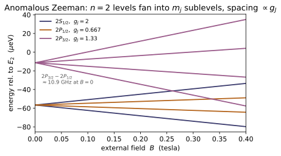
Example problems
Assemble $\alpha=e^2/4\pi\varepsilon_0\hbar c$ from the fundamental constants and show it is the dimensionless number $\approx1/137$. Then show the Bohr energy is $\mathrm{Ry}=\tfrac12\alpha^2 m_ec^2$, so fine structure (a further $\alpha^2$) is $\sim10^{-4}$ of the gross spectrum. Answer: $\alpha=7.297\times10^{-3}=1/137.036$; $\tfrac12\alpha^2 m_ec^2=13.606$ eV. Check: 1/fine_structure_constant() ≈ 137.036; rydberg_energy_eV() ≈ 13.606. (test_fine_structure_constant, test_bohr_energy_from_alpha.)
The combination $\alpha=e^2/4\pi\varepsilon_0\hbar c$ is a pure number: $e^2/4\pi\varepsilon_0$ carries energy$\times$length, $\hbar$ action, $c$ speed, and the units cancel exactly, leaving
The Bohr energy is this $\alpha$ squared below the rest energy, $\mathrm{Ry}=\tfrac12\alpha^2 m_ec^2=\tfrac12(7.297\times10^{-3})^2(511\,\mathrm{keV})=13.606$ eV. Fine structure carries a further $\alpha^2\sim5\times10^{-5}$, so it drops from $13.6$ eV to $\sim10^{-4}$ eV. Matches 1/fine_structure_constant() → $137.036$ and rydberg_energy_eV() → $13.6057$.
The $n=2$ shell splits into $2P_{3/2}$ and $\{2S_{1/2},2P_{1/2}\}$. Using the $(n,j)$ formula, find the $2P_{3/2}-2P_{1/2}$ interval in eV and in GHz. Answer: $\Delta E=\dfrac{13.6\,\alpha^2}{16}\approx4.53\times10^{-5}$ eV $\;\Rightarrow\; f=\Delta E/h\approx10.9$ GHz (the measured value, $\sim$10.97 GHz). Check: (fine_structure_correction_eV(2,1.5)-fine_structure_correction_eV(2,0.5)) ≈ 4.53e-5 eV; *e/h/1e9 ≈ 10.95. (test_n2_fine_structure_splitting.)
With $E^1_{\rm fs}=E_n\dfrac{\alpha^2}{n^2}\!\left[\dfrac{n}{j+\frac12}-\dfrac34\right]$ and $E_2=-3.4$ eV, the bracket is $2/1-\tfrac34=\tfrac54$ for $j=\tfrac12$ and $2/2-\tfrac34=\tfrac14$ for $j=\tfrac32$, so
Dividing by $h$ gives $f=\Delta E/h\approx10.9$ GHz. This is exactly fine_structure_correction_eV(2,1.5)-fine_structure_correction_eV(2,0.5) → $4.528\times10^{-5}$ eV, and $\times e/h/10^9$ → $10.95$ GHz (the lab value is $\sim10.97$).
Show that fine structure depends only on $n$ and $j$: the $2S_{1/2}$ ($\ell=0$) and $2P_{1/2}$ ($\ell=1$) levels stay exactly coincident, while $2P_{1/2}$ and $2P_{3/2}$ split. Verify the three mechanisms recombine differently for the two $\ell$ but give the same shift. Answer: $\ell$-degeneracy is broken, $j$-degeneracy is preserved. For $2S_{1/2}$: $E_{\rm rel}+E_{\rm Darwin}$ (spin-orbit $=0$); for $2P_{1/2}$: $E_{\rm rel}+E_{\rm so}$ (Darwin $=0$); both $=-5.66\times10^{-5}$ eV. Check: fine_structure_correction_eV(2,0.5) equals the $\ell=0$ and $\ell=1$ decompositions; < fine_structure_correction_eV(2,1.5). (test_fine_structure_depends_only_on_n_and_j, test_fine_structure_decomposition.)
The grand result $E^1_{\rm fs}(n,j)$ carries no $\ell$. For $2S_{1/2}$ ($\ell=0$) spin-orbit vanishes, so the shift is relativistic $+$ Darwin, $(-1.472+0.906)\times10^{-4}=-5.66\times10^{-5}$ eV; for $2P_{1/2}$ ($\ell=1$) the Darwin term vanishes, so it is relativistic $+$ spin-orbit, $(-0.264-0.302)\times10^{-4}=-5.66\times10^{-5}$ eV — identical, though assembled from different mechanisms. The $\ell$-degeneracy is therefore broken only through $j$: $2P_{3/2}$ sits higher at $-1.13\times10^{-5}$ eV. Hence fine_structure_correction_eV(2,0.5) → $-5.660\times10^{-5}$ (matching both $\ell$-decompositions) $<$ fine_structure_correction_eV(2,1.5) → $-1.132\times10^{-5}$.
For a $p$ electron ($\ell=1,s=\tfrac12$) evaluate $\langle\mathbf L\!\cdot\!\mathbf S\rangle=\tfrac{\hbar^2}{2}[j(j{+}1)-\ell(\ell{+}1)-s(s{+}1)]$ for $j=\tfrac12,\tfrac32$, and confirm the $(2j+1)$-weighted average vanishes. Answer: $p_{1/2}:-\hbar^2$, $p_{3/2}:+\tfrac12\hbar^2$; center of gravity $2(-\hbar^2)+4(\tfrac12\hbar^2)=0$ — spin-orbit only redistributes the level. Check: LS_coupling(0.5,1) = −1, LS_coupling(1.5,1) = 0.5; 2LS_coupling(0.5,1)+4LS_coupling(1.5,1) = 0. (test_LS_coupling_values.)
From $\langle\mathbf L\!\cdot\!\mathbf S\rangle=\tfrac{\hbar^2}{2}[j(j{+}1)-\ell(\ell{+}1)-s(s{+}1)]$ with $\ell=1,\ s=\tfrac12$ (so $\ell(\ell{+}1)=2,\ s(s{+}1)=\tfrac34$):
Weighting by the multiplicities $2j+1=2,4$: $2(-\hbar^2)+4(\tfrac12\hbar^2)=0$, so spin-orbit only redistributes the doublet about its center of gravity (it adds no net energy). Matches LS_coupling(0.5,1) $=-1$, LS_coupling(1.5,1) $=0.5$, and the weighted sum $=0$ (in units of $\hbar^2$).
Compute $g_J$ for $^2S_{1/2}$, $^2P_{1/2}$, $^2P_{3/2}$, $^2D_{5/2}$ and explain why they bracket the orbital ($1$) and spin ($2$) limits. Answer: $2,\ \tfrac23,\ \tfrac43,\ \tfrac65$. $g_J\to1$ when $s=0$ (orbital only), $g_J\to2$ when $\ell=0$ (spin only); only the projection of $\mathbf S$ on $\mathbf J$ survives the precession. Check: lande_g_factor(0.5,0)=2, lande_g_factor(0.5,1)=2/3, lande_g_factor(1.5,1)=4/3, lande_g_factor(2.5,2)=6/5. (test_lande_g_factor_known_terms, test_lande_g_factor_limits.)
With $g_J=1+\dfrac{j(j{+}1)+s(s{+}1)-\ell(\ell{+}1)}{2j(j{+}1)}$ and $s=\tfrac12$:
They bracket $1$ and $2$ because only the projection of $\mathbf S$ on the conserved $\mathbf J$ survives the precession: $s=0$ leaves the orbital value $1$, $\ell=0$ leaves the spin value $2$. Matches lande_g_factor → $2,\ \tfrac23,\ \tfrac43,\ \tfrac65$.
The Zeeman shift is $\sim\mu_B B$; the spin-orbit (internal) scale in $n=2$ is the fine-structure interval of P2. At what external field do they become comparable — i.e. where does the weak-field (Landé) picture hand over to Paschen–Back? Answer: $\mu_B B\sim\Delta E_{\rm fs}(n{=}2)\Rightarrow B\sim 4.5\times10^{-5}\,\mathrm{eV}/(5.79\times10^{-5}\,\mathrm{eV/T})\approx0.8$ T — hence "strong" fields in hydrogen mean several tesla. Check: bohr_magneton_eV_per_T()*1.0 vs the $n{=}2$ splitting are within an order of magnitude. (test_zeeman_scale_vs_fine_structure.) Compare the two regimes: zeeman_weak_field_eV(0.5,0,0.5,1.0) (Landé) vs zeeman_strong_field_eV(0,0.5,1.0) (Paschen–Back).
The internal (spin-orbit) scale in $n=2$ is the P2 interval $\Delta E_{\rm fs}\approx4.5\times10^{-5}$ eV; the external Zeeman energy is $\mu_B B$ with $\mu_B=5.79\times10^{-5}$ eV/T. They become comparable when
so the weak-field Landé picture gives way to Paschen–Back only at several tesla. At $B=1$ T both limits happen to return $\mu_B B$ here: zeeman_weak_field_eV(0.5,0,0.5,1.0)$=\mu_B g_J B m_j=\mu_B(2)(\tfrac12)=5.79\times10^{-5}$ eV and zeeman_strong_field_eV(0,0.5,1.0)$=\mu_B B(m_\ell+2m_s)=\mu_B(1)=5.79\times10^{-5}$ eV — both the order of bohr_magneton_eV_per_T()*1.0, confirming the crossover near $1$ T.
From the ground-state spin-spin gap $\Delta E=4g_p\hbar^4/3m_pm_e^2c^2a_0^4$, find the frequency and wavelength of the hydrogen hyperfine photon, and identify the spectral region. Answer: $\Delta E\approx5.9\ \mu$eV $\Rightarrow f\approx1420$ MHz, $\lambda\approx21$ cm (microwave / radio). The triplet ($F{=}1$) lies above the singlet ($F{=}0$); the spin-flip emits the 21 cm line. Check: hyperfine_splitting_eV()1e6 ≈ 5.88; hyperfine_frequency()/1e6 ≈ 1421; hyperfine_wavelength()100 ≈ 21.1; spin_spin_coupling(1)-spin_spin_coupling(0) = 1 ($\hbar^2$). (test_21cm_line, test_spin_spin_triplet_singlet.)
Evaluating the closed form with CODATA constants,
(microwave/radio). The gap is the triplet–singlet spin-spin splitting: $\langle\mathbf S_p\!\cdot\!\mathbf S_e\rangle=\tfrac{\hbar^2}{2}[F(F{+}1)-\tfrac32]$ gives $+\tfrac14\hbar^2$ for $F{=}1$ (triplet, raised) and $-\tfrac34\hbar^2$ for $F{=}0$ (singlet, depressed), a gap of $\hbar^2$. Matches hyperfine_splitting_eV()1e6 → $5.877$, hyperfine_frequency()/1e6 → $1421$, hyperfine_wavelength()100 → $21.1$, and spin_spin_coupling(1)-spin_spin_coupling(0) → $1$ ($\hbar^2$).
Order the ground-state Bohr energy, fine-structure shift, and hyperfine gap, and check the step sizes against $\alpha^2$ and $m_e/m_p$. Answer: $13.6\ \mathrm{eV}\gg1.8\times10^{-4}\ \mathrm{eV}\gg5.9\times10^{-6}\ \mathrm{eV}$; fine/Bohr $\sim\alpha^2$, hyper/fine $\sim m_e/m_p$ (up to $g_p$ and numerical factors). The Lamb shift ($\sim\alpha^3$) sits between fine and hyperfine and needs QED (~QM-22). Check: bohr_energy_eV(1), fine_structure_correction_eV(1,0.5), hyperfine_splitting_eV() form the ladder. (test_hierarchy_bohr_fine_hyperfine.)
The three rungs are
The first step is $E^1_{\rm fs}/E_1=\tfrac14\alpha^2\approx1.3\times10^{-5}$ — the $\alpha^2$ of fine structure; the second, $\Delta E_{\rm hf}/E^1_{\rm fs}\approx0.03$, is $\sim m_e/m_p$ ($=5.4\times10^{-4}$) enhanced by $g_p$ and numerical factors. The Lamb shift ($\sim\alpha^3$, QED, ~QM-22) sits between fine and hyperfine. The ladder bohr_energy_eV(1), fine_structure_correction_eV(1,0.5), hyperfine_splitting_eV() returns $-13.606$, $-1.811\times10^{-4}$, $5.877\times10^{-6}$ eV.
Run the worked code: cd QM/QM-17_fine_structure/code && python3 fine_structure.py
QM-18 — Scattering Theory
Quantum Mechanics trunk · QM/QM-18_scattering · open in the Teaching Network
How a beam reveals a potential. One complex function, the scattering amplitude $f(\theta)$, sits between the potential and the detector; there are two complementary ways to compute it (Griffiths 3e Ch. 10).
1. Amplitude & cross-sections — the asymptotic wave $e^{ikz}+f(\theta)e^{ikr}/r$; the differential cross-section $d\sigma/d\Omega=|f|^2$; the total cross-section $\sigma=\int|f|^2d\Omega$ (Griffiths §10.1, p.477–481). 2. Partial-wave analysis — for a central potential, expand in $P_\ell(\cos\theta)$; each $\ell$ scatters independently with a real phase shift $\delta_\ell$: $f=\frac1k\sum(2\ell+1)e^{i\delta_\ell}\sin\delta_\ell\,P_\ell$, $\sigma=\frac{4\pi}{k^2}\sum(2\ell+1)\sin^2\delta_\ell$ (§10.2–10.3, p.482–491). 3. The optical theorem — $\sigma_{\rm tot}=\frac{4\pi}{k}\operatorname{Im}f(0)$, an exact identity (probability conservation; §10.3 / Problem 10.19, p.504). 4. The Born approximation — for weak $V$, $f=-\frac{m}{2\pi\hbar^2}\!\int e^{i\mathbf q\cdot\mathbf r}V\,d^3r$ (the Fourier transform of $V$); the Yukawa potential gives $f=-2m\beta/[\hbar^2(\mu^2+q^2)]$, whose $\mu\to0$ limit is Rutherford (§10.4, p.493–501).
House rule for this module: nothing is asserted — every formula is checked against a closed form or an independent computation. Hard-sphere $\delta_0=-ka$ and $\sigma\to4\pi a^2$ are recovered from the spherical-Bessel boundary condition; the square-well phase shift from log-derivative matching is checked against its s-wave closed form; the two cross-section formulas (sum-of-$\sin^2$ and the optical theorem) are verified to agree to machine precision; and the Born Yukawa amplitude is checked by doing the radial integral numerically and recovering the classical ~CM-08 Rutherford $d\sigma/d\Omega$ in the screened limit.
Key equations
Figures
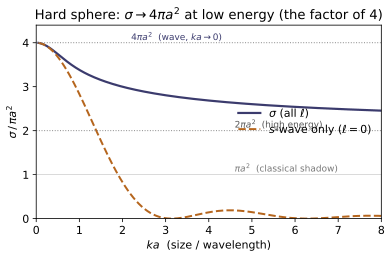

Example problems
Given the asymptotic wave $\psi\simeq A[e^{ikz}+f(\theta)e^{ikr}/r]$, show the differential cross-section is $d\sigma/d\Omega=|f(\theta)|^2$ and that the total cross-section is $\sigma=\int|f|^2\,d\Omega$. Answer: matching scattered flux $|A|^2|f|^2 v/r^2$ through $r^2 d\Omega$ to incident flux $|A|^2 v$ through $d\sigma$ gives $d\sigma=|f|^2d\Omega$. Check: differential_cross_section(thetas,k,deltas) equals abs(partial_wave_amplitude(...))**2, and integrating it over $4\pi$ returns total_cross_section(k,deltas). (test_differential_cross_section_is_f_squared, test_integrated_dcs_equals_total_cross_section.)
The incident plane wave $Ae^{ikz}$ carries probability current $j_{\rm inc}=|A|^2v$ with $v=\hbar k/m$. The scattered wave $Af(\theta)e^{ikr}/r$ has outward radial current $j_r=|A|^2|f|^2v/r^2$, so the rate into solid angle $d\Omega$ is $j_r\,r^2\,d\Omega=|A|^2v\,|f|^2\,d\Omega$. Dividing the scattered rate by the incident flux $|A|^2v$ gives the area
The $1/r^2$ in $j_r$ exactly cancels the $r^2$ in the spherical area element — which is why the $1/r$ amplitude was forced by flux conservation. differential_cross_section returns $|$partial_wave_amplitude$|^2$ identically, and Gauss–Legendre integration of it over $4\pi$ gives $7.860153=$total_cross_section(k,deltas).
A hard sphere of radius $a$. (a) Classically, what is the total cross-section? (b) Quantum mechanically at low energy ($ka\ll1$), what is it, and by what factor do they differ? Answer: (a) the geometric shadow $\sigma_{\rm cl}=\pi a^2$. (b) the s-wave dominates with $\delta_0\approx-ka$, so $\sigma\to(4\pi/k^2)\sin^2(ka)\to4\pi a^2$ — four times larger; the long-wavelength wave diffracts around the whole surface, not just the head-on disc. Check: total_cross_section(k, phase_shifts_hard_sphere(k,1.0,8))/(pi*1.0**2) → 4 as $k\to0$. (test_hard_sphere_low_energy_4pi_a2.)
(a) Classically every ray with impact parameter $b<a$ is deflected and every $b>a$ misses, so the cross-section is the geometric disc $\sigma_{\rm cl}=\pi a^2$. (b) At low energy only $\ell=0$ survives ($\sin^2\delta_\ell\sim(ka)^{2(2\ell+1)}$ suppresses $\ell\ge1$), and $\delta_0=-ka$, so
The ratio is exactly $4$: a wave of wavelength $\gg a$ diffracts around the entire sphere, not just the head-on disc. total_cross_section(k, phase_shifts_hard_sphere(k,1.0,8))/(pi*1.0**2) climbs $3.98682$ ($ka{=}0.1$) $\to3.99880$ ($ka{=}0.03$) $\to3.99997$ ($ka{=}0.005$), tending to $4$.
Show the $\ell=0$ hard-sphere phase shift is $\delta_0=-ka$, and interpret the resulting radial wave function. Answer: the exterior $u_0\propto\sin(kr+\delta_0)$ must vanish at $r=a$, so $\delta_0=-ka$ and $u_0\propto\sin\!\big(k(r-a)\big)$ — the free wave simply pushed outward by the radius. (Equivalently $\tan\delta_\ell=j_\ell(ka)/n_\ell(ka)$, which for $\ell=0$ is $\arctan(-\tan ka)=-ka$.) Check: hard_sphere_phase_shift(0, ka, 1.0) $\approx -ka$ for small $ka$. (test_hard_sphere_swave_phase_shift.)
Outside the core the $\ell=0$ reduced radial wave is free, $u_0(r)\propto\sin(kr+\delta_0)$. A hard core imposes the Dirichlet condition $u_0(a)=0$, so $ka+\delta_0=0\pmod\pi$, giving
Equivalently $\tan\delta_0=j_0(ka)/n_0(ka)=\dfrac{\sin ka/ka}{-\cos ka/ka}=-\tan ka$, the same $-ka$. The wave function is just the free sine pushed outward by the radius $a$. hard_sphere_phase_shift(0, ka, 1.0) returns exactly $-ka$ ($-0.010000$ at $ka{=}0.01$, $-0.200000$ at $ka{=}0.2$).
For an attractive well $V=-V_0$ ($r<a$), set up the $\ell$-th phase shift by matching the interior $j_\ell(k_{\rm in}r)$, $k_{\rm in}=\sqrt{k^2+V_0}$, to the exterior $\cos\delta_\ell\,j_\ell(kr)-\sin\delta_\ell\,n_\ell(kr)$. Specialize to $\ell=0$. Answer: continuity of $R'/R$ gives $\tan\delta_\ell=\dfrac{Lj_\ell(ka)-(ka)j_\ell'(ka)}{Ln_\ell(ka)-(ka)n_\ell'(ka)}$, $L=(k_{\rm in}a)\dfrac{j_\ell'(k_{\rm in}a)}{j_\ell(k_{\rm in}a)}$; for $\ell=0$, $\delta_0=-ka+\arctan[(k/k_{\rm in})\tan(k_{\rm in}a)]$. As $V_0\to0$, $\delta_\ell\to0$. Check: square_well_phase_shift(0,k,a,V0) matches the closed form (in $\sin^2$), and $V_0\to0$ gives no scattering. (test_square_well_swave_closed_form, test_square_well_zero_depth_no_scattering.)
Inside the well, regularity at the origin forces $R=j_\ell(k_{\rm in}r)$, $k_{\rm in}=\sqrt{k^2+V_0}$ (with $\hbar=2m=1$); outside, $R=\cos\delta_\ell\,j_\ell(kr)-\sin\delta_\ell\,n_\ell(kr)$. Continuity of the logarithmic derivative $rR'/R$ at $r=a$, with $L=(k_{\rm in}a)\,j_\ell'(k_{\rm in}a)/j_\ell(k_{\rm in}a)$, gives
For $\ell=0$ ($j_0=\sin x/x,\ n_0=-\cos x/x$) this collapses to $\delta_0=-ka+\arctan[(k/k_{\rm in})\tan(k_{\rm in}a)]$; as $V_0\to0$, $k_{\rm in}\to k$ and $\delta_\ell\to0$. square_well_phase_shift(0,k,a,V0) matches the closed form in $\sin^2\delta_0$ ($0.575489$ at $k{=}0.5,V_0{=}2$; $0.882053$ at $k{=}1.5,V_0{=}4$), and $V_0\to0$ gives $\sin^2\delta_\ell\to0$ (no scattering).
Prove $\sigma_{\rm tot}=\frac{4\pi}{k}\operatorname{Im}f(0)$ from the partial-wave expressions for $f(\theta)$ and $\sigma$, and explain physically why the forward amplitude must be complex. Answer: at $\theta=0$, $P_\ell(1)=1$ and $\operatorname{Im}(e^{i\delta_\ell}\sin\delta_\ell)=\sin^2\delta_\ell$, so $\frac{4\pi}{k}\operatorname{Im}f(0)=\frac{4\pi}{k^2}\sum(2\ell+1)\sin^2\delta_\ell=\sigma$. Physically: flux scattered into all angles is removed from the forward beam by destructive interference, which requires $\operatorname{Im}f(0)>0$. Check: optical_theorem_sigma(k,deltas) equals total_cross_section(k,deltas) for both the hard sphere and the square well. (test_optical_theorem_hard_sphere, test_optical_theorem_square_well.)
Set $\theta=0$ in $f(\theta)=\frac1k\sum_\ell(2\ell+1)e^{i\delta_\ell}\sin\delta_\ell P_\ell(\cos\theta)$; every $P_\ell(1)=1$ and $\operatorname{Im}(e^{i\delta_\ell}\sin\delta_\ell)=\sin^2\delta_\ell$, so
Physically, total scattering depletes the forward beam, and that depletion is the destructive interference of the incident wave with the forward-scattered one — which requires $f(0)$ to carry a positive imaginary part. optical_theorem_sigma(k,deltas) and total_cross_section(k,deltas) agree to machine precision, both $=7.860153$ for the $k{=}1.5,V_0{=}4$ well.
Use the first Born approximation to find $f(\theta)$ for $V(r)=\beta e^{-\mu r}/r$. Answer: $f(\theta)=-\dfrac{2m\beta}{\hbar^2}\dfrac{1}{\mu^2+q^2}$, $q=2k\sin(\theta/2)$, from the radial integral $-\frac{2m}{\hbar^2 q}\int_0^\infty\beta e^{-\mu r}\sin(qr)\,dr =-\frac{2m\beta}{\hbar^2}\frac{1}{\mu^2+q^2}$. It is forward-peaked, and the screening $\mu$ keeps $f(0)$ finite. Check: born_amplitude_radial(theta,k,V) (numerical integral) equals born_amplitude_yukawa(theta,k,beta,mu) (closed form); $|f|$ decreases from $\theta=0$. (test_born_yukawa_closed_form, test_born_forward_peaking, test_yukawa_screening_regularizes_forward.)
For a spherically symmetric $V$ the Born amplitude reduces to $f(\theta)=-\frac{2m}{\hbar^2q}\int_0^\infty rV(r)\sin(qr)\,dr$, $q=2k\sin(\theta/2)$. With $V=\beta e^{-\mu r}/r$ the $r$ cancels, and $\int_0^\infty e^{-\mu r}\sin(qr)\,dr=q/(\mu^2+q^2)$:
Since $q$ grows monotonically from $0$ to $2k$, $|f|$ falls monotonically — forward-peaked — and $\mu>0$ keeps $f(0)=-2m\beta/\hbar^2\mu^2$ finite. The numerical born_amplitude_radial(theta,k,V) equals the closed-form born_amplitude_yukawa(theta,k,beta,mu) ($-2.062907$ at $\theta{=}0.3$, $-0.598600$ at $\theta{=}1.0$).
~CM-08Take the Yukawa amplitude to the Coulomb limit ($\mu\to0$, $\beta=q_1q_2/4\pi\varepsilon_0$) and find $d\sigma/d\Omega$. Compare to the classical result of ~CM-08. Answer: $\dfrac{d\sigma}{d\Omega}=\Big(\dfrac{2m\beta}{\hbar^2}\Big)^2\dfrac1{q^4} =\Big(\dfrac{\beta}{4E}\Big)^2\dfrac1{\sin^4(\theta/2)}$ — exactly the classical Rutherford formula. (Classical mechanics, the Born approximation, and QED all agree for $1/r$.) Check: rutherford_cross_section(theta,k,beta)*sin(theta/2)**4 is $\theta$-independent and equals $\beta^2/(16E^2)$ with $E=k^2$; it equals $|$born_amplitude_yukawa(...,mu=1e-6)$|^2$. (test_born_rutherford_limit.)
Drop the screening ($\mu\to0$) in the Yukawa amplitude: $f=-\frac{2m\beta}{\hbar^2q^2}$, so
with $E=k^2$ ($\hbar=2m=1$). Hence $d\sigma/d\Omega=(\beta/4E)^2/\sin^4(\theta/2)$ — the Rutherford formula, identical to the classical ~CM-08 result, the famous agreement of classical mechanics, the Born approximation and QED for $1/r$. rutherford_cross_section(theta,k,beta)*sin(theta/2)**4 is angle-independent at $\beta^2/(16E^2)=0.0625$ ($\beta{=}E{=}1$), and $|$born_amplitude_yukawa(...,mu=1e-6)$|^2=0.465933$ equals rutherford_cross_section at $\theta{=}1.3$.
From $\sigma=\frac{4\pi}{k^2}\sum(2\ell+1)\sin^2\delta_\ell$, what is the largest a single partial wave can contribute, and when is it reached? Answer: $\sin^2\delta_\ell\le1$, so $\sigma_\ell\le\dfrac{4\pi}{k^2}(2\ell+1)$, saturated at $\delta_\ell=\pi/2$ — a resonance (the partial wave is fully "on"). Check: partial_cross_section(l,k,delta_l) $\le 4\pi(2\ell+1)/k^2$ for every $\ell$. (test_unitarity_bound.)
Each partial wave contributes $\sigma_\ell=\frac{4\pi}{k^2}(2\ell+1)\sin^2\delta_\ell$. Since $\sin^2\delta_\ell\le1$,
the unitarity bound, reached only when $\delta_\ell=\pi/2$ — a resonance, where that partial wave scatters as strongly as conservation of probability allows. partial_cross_section(l,k,delta_l) stays under $4\pi(2\ell+1)/k^2$ for every $\ell$ (e.g. the near-resonant $\ell=1$ wave of the $k{=}1.8,V_0{=}7$ well gives $\sigma_1=11.44140\le11.63553$).
Run the worked code: cd QM/QM-18_scattering/code && python3 scattering.py
QM-19 — Propagators & path integrals
Quantum Mechanics trunk · QM/QM-19_propagators_path_integrals · open in the Teaching Network
The propagator (kernel) $K(x,t;x',0)=\langle x|e^{-i\hat Ht/\hbar}|x'\rangle$ that turns any initial wavefunction into the state at time $t$, $\Psi(x,t)=\int K(x,t;x',0)\,\Psi(x',0)\,dx'$ — as closed forms you can evaluate and a sum-over-paths you can build:
1. The kernel and its eigen-sum $K=\sum_n\psi_n(x)\psi_n^(x')e^{-iE_nt/\hbar}$ (Griffiths Eq. 6.79): completeness at $t=0$, the semigroup law, $|K|^2$ as a travel probability. 2. The free propagator $K_0=\sqrt{m/2\pi i\hbar t}\,\exp[im(x-x')^2/2\hbar t]$: the $\delta$-function initial condition, the composition law, the fact that it solves the free Schrödinger equation (so it is the retarded Green's function), and that it evolves a Gaussian packet to the same state as a direct split-step FFT integration. 3. The Feynman path integral $K=\int\mathcal D[x]\,e^{iS[x]/\hbar}$, $S=\int L\,dt$, $L=\tfrac12 m\dot x^2-V$ — the time-sliced sum over paths, shown to converge to the closed form, with the classical path as the stationary-phase ($\hbar\to0$) limit. 4. The harmonic oscillator (Mehler kernel) by its free limit and by solving the oscillator Schrödinger equation. 5. The ~MA-14 connection: the propagator is* the time-domain Green's function of the Schrödinger operator; its eigen-sum is MA-14's Green's-function spectral sum with $1/\lambda_n\to e^{-iE_nt/\hbar}$ (verified for a box).
House rule for this module: Griffiths has no path-integral chapter, so nothing load-bearing is quoted — every formula (free $K_0$, Mehler, the delta and composition laws, the spreading width, the path-integral convergence, the box eigen-sum, the MA-14 resolvent identity) is checked numerically in test_propagator.py against a closed form, an independent integrator, or imported MA-14 code. The verification is the code.
Key equations
Figures
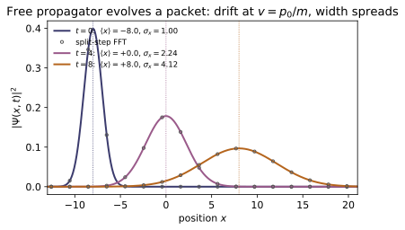
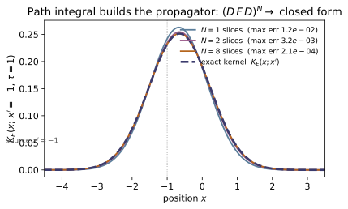
Example problems
Write down $K_0(x,t;x',0)$. Show its modulus is independent of position, and that its phase (stripped of the constant prefactor) equals the classical action $S_{\rm cl}=m(x-x')^2/2t$ of the straight-line path. What constant phase does the $\sqrt{i}$ prefactor contribute? Answer: $|K_0|=\sqrt{m/2\pi\hbar t}$; phase $=S_{\rm cl}/\hbar$; the prefactor $=e^{-i\pi/4}/\sqrt{2\pi\hbar t/m}$ adds the Maslov phase $-\pi/4$. Check: free_propagator(np.array([1.0]),-0.5,0.8); compare $|K_0|$ to 1/np.sqrt(2np.pi0.8) and np.angle(K)+np.pi/4 to classical_action_free(1.0,-0.5,0.8). (test_free_propagator_closed_form.)
The kernel is $K_0=\sqrt{\tfrac{m}{2\pi i\hbar t}}\,\exp\!\big[\tfrac{im(x-x')^2}{2\hbar t}\big]$. The exponent is purely imaginary, so $|e^{iS/\hbar}|=1$ and the modulus lives entirely in the prefactor; since $|1/\sqrt{i}|=1$,
independent of $x,x'$ — every endpoint is reached with equal amplitude, all the physics is in the phase. That phase is $\tfrac{m(x-x')^2}{2\hbar t}=S_{\rm cl}/\hbar$, the action of the straight-line path. Finally $1/\sqrt{i}=e^{-i\pi/4}$, so the prefactor adds the Maslov phase $-\pi/4$. Numerically free_propagator(np.array([1.0]),-0.5,0.8) $=0.36279+0.25947i$ with $|K_0|=0.44603=1/\sqrt{2\pi\cdot0.8}$ and $\arg K_0+\pi/4=1.40625=$ classical_action_free(1.0,-0.5,0.8).
Show that as $t\to0$ the free propagator collapses to $\delta(x-x')$, in the sense that $\int K_0(x,t;x')\,g(x')\,dx'\to g(x)$ for smooth $g$. Why must the verification use a decreasing sequence of $t$? Answer: $K_0$ is a complex Gaussian of width $\sim\sqrt{\hbar t/m}$ and unit integral; as $t\to0$ it concentrates at $x'=x$. The convolution error is $O(t\,g'')$, so it shrinks as $t\to0$. Check: with $g$ a unit Gaussian, the convolution error at $t=0.2,0.1,0.05,0.02$ decreases monotonically to $<10^{-2}$. (test_free_propagator_delta_limit.)
$K_0(x,t;x')$ is a complex Gaussian in $x-x'$ of width $\sim\sqrt{\hbar t/m}$ with unit integral, $\int K_0\,dx'=1$. Expanding a smooth $g$ about $x$ inside the convolution,
because the Gaussian's second moment is $\propto t$. As $t\to0$ the kernel concentrates at $x'=x$ and the integral returns $g(x)$ — a nascent $\delta(x-x')$. The leading error is $O(t\,g'')$, linear in $t$, so it only shrinks for decreasing $t$; a fixed or growing $t$ would not converge. The check confirms this: at $t=0.2,0.1,0.05,0.02$ the errors are $\{3.07,\,1.54,\,0.77,\,0.31\}\times10^{-2}$ — halving as $t$ halves, monotone down to $<10^{-2}$.
Prove $\int K_0(x,t_2;y)\,K_0(y,t_1;x')\,dy=K_0(x,t_1+t_2;x')$ — propagating in two hops equals propagating in one. (It is the Gaussian-convolution statement of $e^{-i\hat Ht_2}e^{-i\hat Ht_1}=e^{-i\hat H(t_1+t_2)}$.) Answer: the $y$-integral is Gaussian; completing the square reproduces $K_0$ at time $t_1+t_2$. Check: the convolution at $t_1=0.5,\ t_2=0.3$ reproduces free_propagator(...,0.8) to $<10^{-2}$ (the residual is real-time Fresnel truncation, not a physics error). (test_free_propagator_composition.)
The $y$-integral is Gaussian. Combining the two exponents, $\tfrac{im}{2\hbar}\big[\tfrac{(x-y)^2}{t_2}+\tfrac{(y-x')^2}{t_1}\big]$, and completing the square in $y$ gives a $y$-independent remainder $\tfrac{im(x-x')^2}{2\hbar(t_1+t_2)}$ plus a Gaussian in $y$. Doing the Fresnel integral, its $\sqrt{2\pi i\hbar\,t_1t_2/m(t_1+t_2)}$ exactly cancels one factor in the product of prefactors:
reproducing $K_0(x,t_1+t_2;x')$ — the Gaussian-convolution form of $e^{-i\hat Ht_2}e^{-i\hat Ht_1}=e^{-i\hat H(t_1+t_2)}$. Numerically with $t_1=0.5,t_2=0.3$ the convolution gives $0.36117+0.26176i$ vs the closed form $K_0(\dots,0.8)=0.36279+0.25947i$, a $2.8\times10^{-3}$ residual that is real-time Fresnel-truncation, not physics.
Propagate $\Psi(x,0)=(2\pi\sigma^2)^{-1/4}e^{-(x-x_0)^2/4\sigma^2+ip_0x}$ with $K_0$. Find the centre and width of $|\Psi(x,t)|^2$, and confirm they match an independent (split-step FFT) evolution of the Schrödinger equation. Answer: centre $=x_0+p_0t/m$ (group velocity), width $\sigma(t)=\sigma\sqrt{1+(\hbar t/2m\sigma^2)^2}$. Check: propagate(gaussian_packet(xs,x0,p0,sigma),xs,t) vs evolve_free_spectral(...) agree to $\sim10^{-14}$; packet_center_width reproduces the formulas. (test_gaussian_packet_vs_spectral, test_gaussian_packet_spreading.)
Propagating a Gaussian by $\Psi(x,t)=\int K_0(x,t;x')\Psi(x',0)\,dx'$ is again a Gaussian integral, so $|\Psi(x,t)|^2$ stays Gaussian. The mean momentum $p_0$ rides through unchanged, so the centroid moves ballistically at the group velocity,
the width growing because the packet's momentum spread $\hbar/2\sigma$ disperses it. In natural units $\hbar=m=1$: at $t=1,3$ with $x_0=-3,p_0=1.5,\sigma=1$, packet_center_width returns centres $-1.5,\,+1.5$ ($=x_0+p_0t$) and widths $1.118,\,1.803$, matching $\sigma\sqrt{1+(t/2)^2}$. And propagate(...) agrees with the independent split-step FFT evolve_free_spectral(...) to $\sim10^{-14}$ — two algorithms, one $\Psi(x,t)$.
Quote the Mehler kernel for the oscillator. Show it (a) reduces to $K_0$ as $\omega\to0$ and (b) satisfies the oscillator Schrödinger equation $i\partial_tK=(-\tfrac12\partial_x^2+\tfrac12\omega^2x^2)K$. Answer: with $\sin\omega t\to\omega t$, $\cos\omega t\to1$ the prefactor and exponent become those of $K_0$; the TDSE residual is zero. Check: harmonic_propagator(...,omega=1e-5) ≈ free_propagator(...); finite differences give a TDSE residual $\sim10^{-9}$. (test_harmonic_free_limit, test_harmonic_satisfies_schrodinger.)
Mehler's kernel is $K=\sqrt{\tfrac{m\omega}{2\pi i\hbar\sin\omega t}}\,\exp\!\big\{\tfrac{im\omega}{2\hbar\sin\omega t}[(x^2+x'^2)\cos\omega t-2xx']\big\}$. (a) As $\omega\to0$, $\sin\omega t\to\omega t$ and $\cos\omega t\to1$, so the prefactor $\to\sqrt{\tfrac{m}{2\pi i\hbar t}}$ and the bracket $\to(x^2+x'^2)-2xx'=(x-x')^2$, giving the free phase $\tfrac{im(x-x')^2}{2\hbar t}$ — exactly $K_0$. (b) Since $K$ is built from the oscillator's stationary states it solves $i\hbar\partial_tK=(-\tfrac{\hbar^2}{2m}\partial_x^2+\tfrac12 m\omega^2x^2)K$. The checks bear both out: harmonic_propagator(...,omega=1e-5) differs from free_propagator(...) by $4.6\times10^{-12}$, and the finite-difference TDSE residual is $7.0\times10^{-9}$ — zero up to stencil error.
Build the time-sliced path integral. For the free particle, show the $N=1,2$ sums-over-paths already reproduce $K_0$. Then explain why a real-time grid sum is numerically fragile, and show that the Wick-rotated Trotter product converges to the closed-form kernel as $N\to\infty$ for $V=\tfrac12\omega^2x^2$. Answer: each free slice is an exact Gaussian, so the free sum is exact for every $N$; the real-time kernel has constant modulus (no damping → sign problem); in imaginary time $t\to-i\tau$ the heat kernel damps and the Strang–Trotter error is $O(1/N^2)$. Check: path_integral_realtime_free(1.0,-0.5,0.8,N) for $N=1,2$ matches $K_0$; path_integral_euclidean(...,N,lambda z:0.5*z**2,...) error falls monotonically with $N=1,4,16,64$ to $<10^{-3}$. (test_path_integral_free_realtime, test_path_integral_euclidean_harmonic_converges.)
Slicing $[0,t]$ into $N$ steps and inserting completeness at each gives $K=\int\!\prod dx_k\prod_k k_\varepsilon(x_{k+1};x_k)$ with the free short-step kernel $k_\varepsilon$. Each intermediate integral is Gaussian and, by the semigroup law of P3, collapses exactly back to $K_0$ — so for the free particle the sum is exact for every $N$ (path_integral_realtime_free matches $K_0$ to $0$ at $N=1$, to $3\times10^{-3}$ at $N=2$, the residual being finite-$R$ truncation). The trouble is that the real-time integrand has constant modulus $|e^{iS/\hbar}|=1$ and never damps — convergence rests on fragile stationary-phase cancellation (the sign problem). Wick-rotating $t\to-i\tau$ turns $e^{iS/\hbar}$ into the positive, decaying heat kernel $e^{-S_E/\hbar}$, and the Strang–Trotter product $(D_{V/2}FD_{V/2})^N\to e^{-\tau\hat H}$ with error $O(1/N^2)$. For $V=\tfrac12\omega^2x^2$ the errors at $N=1,4,16,64$ are $\{9.5\times10^{-3},6.7\times10^{-4},4.3\times10^{-5},2.7\times10^{-6}\}$, falling $\sim16\times$ per $4\times$ refinement — the advertised $O(1/N^2)$ — to $<10^{-3}$.
For the infinite well on $[0,L]$, write $K=\sum_n\psi_n(x)\psi_n^(x')e^{-iE_nt}$. Verify that at $t=0$ it is the completeness relation ($\to\delta$) and that it carries an eigenstate $\psi_m$ forward by a pure phase $e^{-iE_mt}$. Answer: orthonormality gives $\int K\,\psi_m\,dx'=e^{-iE_mt}\psi_m(x)$; truncating at $n_{\max}$ is exact for $m\le n_{\max}$. Check: box_propagator(0.4,Lx,t,60) integrated against box_eigenfunction(m,Lx) equals exp(-1jbox_energy(m)t)box_eigenfunction(m,0.4) to $\sim10^{-15}$, and the $t=0$ sum reconstructs a smooth test function (improving with $n_{\max}$). (test_box_eigensum_propagates.)
With $\psi_n(x)=\sqrt{2/L}\sin(n\pi x/L)$ and $E_n=n^2\pi^2\hbar^2/2mL^2$, write $K=\sum_n\psi_n(x)\psi_n^(x')e^{-iE_nt/\hbar}$. At $t=0$ every phase is $1$ and the sum is the completeness relation $\sum_n\psi_n(x)\psi_n^(x')=\delta(x-x')$, so $\int K\,g\,dx'\to g(x)$ (sharper as $n_{\max}$ grows). For an eigenstate $\psi_m$, orthonormality $\int\psi_n^*\psi_m\,dx'=\delta_{nm}$ collapses the sum to its single $n=m$ term:
a pure phase, and truncation is exact once $m\le n_{\max}$. The check confirms it: for $m=1,2,3$, box_propagator(0.4,Lx,0.5,60) integrated against box_eigenfunction(m,Lx) equals $e^{-iE_m\cdot0.5}\psi_m(0.4)$ to $\sim10^{-15}$ (e.g. $m=1$: $-1.05073-0.83964i$ either way).
~MA-14 linkGriffiths 3e, p.503; import MA-14Argue that $G^R=\theta(t)K$ solves $(i\partial_t-\hat H)G^R=i\delta(x-x')\delta(t)$. Then show the static ($E\to0$) resolvent $\sum_n\psi_n(x)\psi_n^(x')/E_n$ is the Green's function of $\hat H$, and that for the box it equals twice MA-14's green_dirichlet (because $\hat H=-\tfrac12\partial_x^2=\tfrac12 L_{\rm MA14}$). Answer: the $\theta$-step's derivative supplies $\delta(t)$; replacing $e^{-iE_nt}\to1/E_n$ in the eigen-sum gives $\hat H^{-1}$; $\hat H^{-1}=2L^{-1}$ so the kernel is $2\,x_<(1-x_>)$. Check:* box_resolvent_static(x,xp,N) $= 2\cdot$green_series(x,xp,N) to $10^{-10}$ for all $N$, and $\to 2\cdot$green_dirichlet(x,xp) as $N\to\infty$. (test_ma14_resolvent_link.)
With $G^R=\theta(t)K$, the product rule gives $i\hbar\partial_tG^R=i\hbar\,\delta(t)\,K(x,0;x')+\theta(t)\,i\hbar\partial_tK$. For $t>0$ the kernel solves the homogeneous TDSE, $\theta(i\hbar\partial_t-\hat H)K=0$; and $K(x,0;x')=\delta(x-x')$, so
the retarded Green's function (the $\theta$-step's derivative supplies $\delta(t)$, exactly as MA-14's causal Green's function does). Replacing $e^{-iE_nt/\hbar}\to1/E_n$ in the eigen-sum gives $\sum_n\psi_n(x)\psi_n^*(x')/E_n=\langle x|\hat H^{-1}|x'\rangle$. For the box $\hat H=-\tfrac12\partial_x^2=\tfrac12 L_{\rm MA14}$, so $\hat H^{-1}=2L^{-1}$ and the kernel is $2\,x_<(1-x_>)$. The check matches term-by-term: at $(0.3,0.7)$, box_resolvent_static $=2\cdot$green_series to $\lesssim10^{-16}$ and both $\to0.180000=2\cdot(0.3)(1-0.7)=2\,$green_dirichlet.
Run the worked code: cd QM/QM-19_propagators_path_integrals/code && python3 propagator.py
QM-20 — Density Matrix & Open Systems
Quantum Mechanics trunk · QM/QM-20_density_matrix · open in the Teaching Network
The state of a quantum system when you don't fully know it — as evaluable linear algebra. The objects of Griffiths 3e Ch. 12 ("Afterword"), §12.3:
1. Pure vs mixed; the density operator. A pure state is a known ket, $\rho=|\psi\rangle\langle\psi|$; a mixed state is a classical mixture $\rho=\sum_i p_i|\psi_i\rangle\langle\psi_i|$. Every density operator is Hermitian, has unit trace, and is positive semidefinite (its eigenvalues are probabilities $\ge 0$). 2. Purity. $\mathrm{Tr}(\rho^2)\le 1$, with equality iff the state is pure ($\rho^2=\rho$) — the one-number test for pure vs mixed. 3. Expectation. $\langle A\rangle=\mathrm{Tr}(\rho A)$ reproduces $\langle\psi|A|\psi\rangle$ for a pure state and the ensemble average $\sum_i p_i\langle\psi_i|A|\psi_i\rangle$ for a mixed one. 4. Reduced density matrix (partial trace). A subsystem of an entangled pure state is itself mixed: tracing one qubit of the Bell state $|\Phi^+\rangle$ leaves the other in $I/2$ (maximally mixed, $S=\ln 2$), while a product state's subsystem stays pure ($S=0$). This is the operational signature of entanglement. 5. von Neumann entropy. $S=-\mathrm{Tr}(\rho\ln\rho)=-\sum_k\lambda_k\ln\lambda_k$; $S=0$ iff pure, $S=\ln d$ for the maximally mixed state in $d$ dimensions. 6. Time evolution. $i\hbar\dot\rho=[H,\rho]$ (the von Neumann equation). Its solution is unitary, $\rho(t)=U\rho U^\dagger$, conserving the spectrum (hence purity and entropy); a $\rho$ that commutes with $H$ is stationary. Decay of the off-diagonal coherences is decoherence.
House rule for this module: nothing is asserted, everything is checked. $\mathrm{Tr}\,\rho=1$, $\mathrm{Tr}(\rho^2)\!\le\!1$, the two expectation routes, the Bell-subsystem $=I/2$ result, $S=\ln 2$, spectrum/purity conservation under unitary flow, and the stationarity $\Leftrightarrow[H,\rho]=0$ criterion are all verified numerically against closed forms in test_density_matrix.py.
Key equations
Figures
![Depolarizing the qubit $|+\rangle$ toward $I/2$: $\rho(\lambda)=\lambda|+\rangle\langle+|+(1-\lambda)\tfrac{I}{2}$, with every quantity from the module's own routines. Top: purity $\mathrm{Tr}(\rho^2)$ (dots) follows the closed form $\tfrac12(1+\lambda^2)$, falling from $1$ (pure) to the floor $\tfrac12$ as the Bloch radius $r=|\langle\vec\sigma\rangle|=\lambda$ (from expectation) shrinks to $0$. Bottom: the von Neumann entropy rises the other way, $0\to\ln 2$ — one number, two faces of mixedness.](QM/QM-20_density_matrix/figures/fig1_purity_entropy.svg)
![Tracing out one qubit of $|\psi(\theta)\rangle=\cos\theta|00\rangle+\sin\theta|11\rangle$ with partial_trace. The two-qubit whole is pure throughout ($S(\rho_{AB})=0$, dashed), yet the reduced qubit $\rho_A$ is generally mixed: its purity $\mathrm{Tr}(\rho_A^2)$ dips to $\tfrac12$ and its entanglement entropy $S(\rho_A)$ peaks at $\ln 2$ exactly at $\theta=\pi/4$, the Bell state $|\Phi^+\rangle$ (maximally entangled, $\rho_A=I/2$). At $\theta=0$ the state is the product $|00\rangle$ and the part stays pure — the operational signature of entanglement (bridge to QM-21).](QM/QM-20_density_matrix/figures/fig2_entanglement_partial_trace.svg)
Example problems
Construct $\rho$ for an electron with spin up along $x$, $|+\rangle=\tfrac1{\sqrt2}(|0\rangle+|1\rangle)$, and verify it is Hermitian, has trace 1, and $\mathrm{Tr}(\rho^2)=1$. Answer: $\rho=|+\rangle\langle+|=\tfrac12\begin{pmatrix}1&1\\1&1\end{pmatrix}$; eigenvalues $\{1,0\}$, so $\mathrm{Tr}\,\rho=1$ and $\mathrm{Tr}(\rho^2)=1$ (pure). Check: rho = density_matrix_pure(plus); is_density_matrix(rho) is True, purity(rho) $=1$, is_pure(rho) is True. (test_pure_state_is_valid_density_matrix, test_purity_pure_vs_mixed.)
With $|+\rangle=\tfrac1{\sqrt2}\binom{1}{1}$, the projector is
It is real-symmetric, so $\rho=\rho^\dagger$, and $\mathrm{Tr}\,\rho=\tfrac12(1+1)=1$. Squaring, $\rho^2=\tfrac14\begin{pmatrix}2&2\\2&2\end{pmatrix}=\rho$, so $\rho$ is an idempotent rank-1 projector with eigenvalues $\{1,0\}$ and $\mathrm{Tr}(\rho^2)=\sum_k\lambda_k^2=1$ — pure. This is exactly density_matrix_pure(plus), for which is_density_matrix(rho) is True, purity(rho) $=1$, and is_pure(rho) is True.
Construct $\rho$ for an electron that is spin-up or spin-down along $z$ with equal probability. Is it pure? Show in general that $\mathrm{Tr}(\rho^2)\le1$ with equality iff the state is pure. Answer: $\rho=\tfrac12|0\rangle\langle0|+\tfrac12|1\rangle\langle1|=\tfrac12 I$; Hermitian, trace 1, but $\mathrm{Tr}(\rho^2)=\tfrac12<1$ — not pure. In general $\mathrm{Tr}(\rho^2)=\sum_k\lambda_k^2\le(\sum_k\lambda_k)^2=1$, equality iff one $\lambda_k=1$ (i.e. $\rho^2=\rho$). Check: rho = density_matrix_mixed([ket0, ket1], [0.5, 0.5]) equals maximally_mixed(2); purity(rho) $=0.5$, is_pure(rho) is False. (test_mixed_state_is_valid_density_matrix, test_idempotent_iff_pure.)
Adding the two projectors,
It is Hermitian with $\mathrm{Tr}\,\rho=1$, but $\mathrm{Tr}(\rho^2)=\mathrm{Tr}(\tfrac14 I)=\tfrac12<1$ — not pure. In general, in $\rho$'s eigenbasis $\mathrm{Tr}(\rho^2)=\sum_k\lambda_k^2$; since the $\lambda_k\ge0$ sum to $1$, $\sum_k\lambda_k^2\le(\sum_k\lambda_k)^2=1$, with equality iff a single $\lambda_k=1$ (all others $0$), i.e. $\rho^2=\rho$. Hence density_matrix_mixed([ket0, ket1], [0.5, 0.5]) equals maximally_mixed(2), with purity(rho) $=0.5$ and is_pure(rho) False.
Show $\langle A\rangle=\mathrm{Tr}(\rho A)$ reduces to $\langle\psi|A|\psi\rangle$ for a pure state, and to the ensemble average $\sum_i p_i\langle\psi_i|A|\psi_i\rangle$ for a mixture. Evaluate $\langle\sigma_x\rangle$ in $|+\rangle$ and in $I/2$. Answer: insert completeness for the pure case; linearity of the trace for the mixed case. $\langle\sigma_x\rangle_{|+\rangle}=+1$ (determinate); $\langle\sigma_x\rangle_{I/2}=\mathrm{Tr}(\tfrac12 I\,\sigma_x)=0$. Check: expectation(density_matrix_pure(plus), sigma_x) $=1.0$; expectation(maximally_mixed(2), sigma_x) $=0.0$. (test_expectation_pure_equals_braket, test_expectation_mixed_is_ensemble_average.)
Insert completeness $\sum_n|n\rangle\langle n|=I$ for the pure case:
and linearity of the trace gives the mixture $\mathrm{Tr}(\rho A)=\sum_i p_i\langle\psi_i|A|\psi_i\rangle$. For $|+\rangle$, $\sigma_x|+\rangle=+|+\rangle$, so $\langle\sigma_x\rangle=+1$ (determinate); for $I/2$, $\langle\sigma_x\rangle=\mathrm{Tr}(\tfrac12 I\,\sigma_x)=\tfrac12\mathrm{Tr}\,\sigma_x=0$. These reproduce expectation(density_matrix_pure(plus), sigma_x) $=1.0$ and expectation(maximally_mixed(2), sigma_x) $=0.0$ — sharp in the pure eigenstate, fully random in the mixture.
For the Bell state $|\Phi^+\rangle=\tfrac1{\sqrt2}(|00\rangle+|11\rangle)$, find the reduced density matrix of qubit $A$ by tracing out qubit $B$. Is the global state pure? Is the subsystem pure? Reconcile this with "we know the state precisely." Answer: $\rho_A=\mathrm{Tr}_B|\Phi^+\rangle\langle\Phi^+|=\tfrac12|0\rangle\langle0| +\tfrac12|1\rangle\langle1|=I/2$ — maximally mixed. The global state is pure ($S=0$), the subsystem is mixed ($S=\ln2$): this is entanglement, not ignorance — "the subsystem by itself does not occupy a pure state" (Griffiths p.582). Check: bell = density_matrix_pure(bell_phi_plus()); is_pure(bell) is True; partial_trace(bell, [2,2], keep=0) equals maximally_mixed(2). (test_bell_subsystem_is_maximally_mixed.)
Expand $\rho_{AB}=|\Phi^+\rangle\langle\Phi^+|=\tfrac12\big(|00\rangle+|11\rangle\big)\big(\langle00|+\langle11|\big)$ and take the partial trace $\langle a|\rho_A|a'\rangle=\sum_b\langle a,b|\rho_{AB}|a',b\rangle$. The diagonal terms survive; the cross terms $|00\rangle\langle11|,\,|11\rangle\langle00|$ vanish because their $B$-factor is $\langle1|0\rangle=0$:
The global state is pure ($S=0$) but $\rho_A$ is maximally mixed ($S=\ln2$): the mixedness is entanglement, not ignorance — we know $|\Phi^+\rangle$ exactly. Hence is_pure(bell) is True while partial_trace(bell, [2,2], keep=0) equals maximally_mixed(2).
Compare a product state $|0\rangle\otimes|+\rangle$ with the Bell state of P4. Compute the von Neumann entropy $S=-\mathrm{Tr}(\rho\ln\rho)$ of qubit $A$ in each. What does $S_A$ tell you? Answer: product → $\rho_A=|0\rangle\langle0|$, $S_A=0$ (no entanglement); Bell → $\rho_A=I/2$, $S_A=\ln2$ (maximal entanglement of a qubit pair). The reduced-state entropy is the entanglement measure for a pure bipartite state. Check: von_neumann_entropy(partial_trace(density_matrix_pure(tensor(ket0,plus)),[2,2],0)) $=0$; the Bell version $=\ln 2\approx0.6931$. (test_product_subsystem_stays_pure, test_bell_subsystem_is_maximally_mixed.)
The product state $\rho_{AB}=|0\rangle\langle0|\otimes|+\rangle\langle+|$ factorizes, so $\rho_A=\mathrm{Tr}_B\,\rho_{AB}=|0\rangle\langle0|\,\mathrm{Tr}(|+\rangle\langle+|)=|0\rangle\langle0|$ with eigenvalues $\{1,0\}$, giving
For the Bell state $\rho_A=I/2$ has eigenvalues $\{\tfrac12,\tfrac12\}$, so $S_A=-2\cdot\tfrac12\ln\tfrac12=\ln2\approx0.6931$. The reduced-state entropy is therefore the entanglement measure: $0$ for the unentangled product, maximal $\ln2$ for the Bell pair. This matches the code — the product von_neumann_entropy(...) $=0$ and the Bell version $=\ln 2\approx0.6931$.
Show that $\rho$ evolves by $i\hbar\dot\rho=[H,\rho]$, with solution $\rho(t)=U\rho(0)U^\dagger$, $U=e^{-iHt/\hbar}$. (a) Show a pure state stays pure. (b) Show $\rho$ is stationary ($\dot\rho=0$) iff $[H,\rho]=0$. Answer: differentiate $\rho=U\rho_0U^\dagger$ and use $i\hbar\dot U=HU$. (a) $\rho(t)$ is unitarily similar to $\rho(0)$, so $\mathrm{Tr}(\rho^2)$ (and the whole spectrum) is conserved — pure stays pure. (b) $\dot\rho\propto[H,\rho]$ vanishes iff $\rho$ commutes with $H$, i.e. $\rho$ is diagonal in the energy eigenbasis. Check: with H random Hermitian and rho pure, purity(evolve(rho,H,t)) $=1$ for all t; a $\rho$ built diagonal in $H$'s eigenbasis has von_neumann_rhs(rho,H) $=0$ and evolve(rho,H,t) unchanged. (test_unitary_evolution_conserves_purity_and_trace, test_von_neumann_equation_finite_difference, test_stationary_state_commutes_with_H.)
Differentiate $\rho(t)=U\rho_0U^\dagger$ using $i\hbar\dot U=HU$ (hence $i\hbar\dot U^\dagger=-U^\dagger H$):
(a) $\rho(t)=U\rho_0U^\dagger$ is unitarily similar to $\rho_0$, so it shares the same spectrum; thus $\mathrm{Tr}(\rho^2)=\sum_k\lambda_k^2$ is conserved and a pure state ($\lambda=\{1,0\}$) stays pure. (b) $\dot\rho=-\tfrac{i}{\hbar}[H,\rho]$ vanishes iff $[H,\rho]=0$, i.e. $\rho$ is diagonal in the energy eigenbasis. Numerically purity(evolve(rho,H,t)) $=1$ for a pure $\rho$, and a state built diagonal in $H$'s eigenbasis gives von_neumann_rhs(rho,H) $=0$ (norm $0$) and unchanged evolve.
A qubit starts in $|+\rangle\langle+|=\tfrac12\begin{pmatrix}1&1\\1&1\end{pmatrix}$, which has large off-diagonal coherences. (a) Under closed (unitary) evolution, can $\rho$ ever become the diagonal mixed state $I/2$? (b) What additional ingredient turns the coherences off, and what is it called? Answer: (a) No. Unitary evolution conserves the spectrum, so a pure state ($\lambda=\{1,0\}$) can never become mixed ($\lambda=\{\tfrac12,\tfrac12\}$); it can only rotate the coherences, not destroy them. (b) Coupling to an environment (an open system) damps the off-diagonal terms — decoherence — described by a Lindblad master equation (~QO-04); it is "the fundamental mechanism by which quantum mechanics reduces to classical mechanics" (Griffiths p.586). Check: purity(density_matrix_pure(plus)) $=1$ and stays $1$ under any evolve(...); reaching $I/2$ (purity $=0.5$) is impossible unitarily. (test_unitary_evolution_conserves_purity_and_trace.)
Closed evolution $\rho(t)=U\rho_0U^\dagger$ keeps the eigenvalues of $\rho_0$ fixed for all $t$. The start $|+\rangle\langle+|$ has spectrum $\{1,0\}$ ($\mathrm{Tr}(\rho^2)=1$), while $I/2$ has spectrum $\{\tfrac12,\tfrac12\}$ ($\mathrm{Tr}(\rho^2)=\tfrac12$); the two spectra differ, so no unitary maps one to the other. (a) Hence $\rho$ can never become $I/2$ — unitary evolution only rotates the off-diagonal coherences, never erases them. (b) Erasing them needs coupling to an environment: the coherences then decay irreversibly — decoherence — described by a Lindblad master equation (~QO-04). So purity(density_matrix_pure(plus)) $=1$ and stays $1$ under any evolve(...), making purity $=0.5$ ($I/2$) unreachable unitarily.
Run the worked code: cd QM/QM-20_density_matrix/code && python3 density_matrix.py
QM-21 — Entanglement & Foundations
Quantum Mechanics trunk · QM/QM-21_entanglement_foundations · open in the Teaching Network
What it means for a quantum state to be entangled, and why Bell's theorem rules out local hidden variables — as evaluable linear algebra (Griffiths 3e Ch. 12, "Afterword"):
1. EPR paradox. The spin-0 pion decays into the singlet $|\Psi^-\rangle=(|01\rangle-|10\rangle)/\sqrt2$ (Eq. 12.1, p.567). Measuring one spin instantly fixes the other — "spooky action at a distance." EPR concluded QM must be incomplete (a hidden variable $\lambda$). 2. Entangled (non-separable) states. The singlet cannot be written as a product $|a\rangle\otimes|b\rangle$ (Problem 12.1, p.568). Diagnostic: the reduced state of one qubit is pure for a product state but maximally mixed ($=\mathbb I/2$) for a Bell state. 3. The four Bell states $|\Phi^\pm\rangle,|\Psi^\pm\rangle$ — a maximally entangled orthonormal basis. 4. Local hidden variables & Bell. The singlet correlation is $E(\mathbf a,\mathbf b)=-\mathbf a\!\cdot\!\mathbf b$ (Eq. 12.4, p.570). The CHSH combination $S=E(a,b)-E(a,b')+E(a',b)+E(a',b')$ obeys the classical bound $|S|\le2$ for any local theory, but the singlet reaches $|S|=2\sqrt2$ (the Tsirelson bound) at optimal angles — and never exceeds it. Griffiths' own 3-setting form $|P(a,b)-P(a,c)|\le1+P(b,c)$ (Eq. 12.12, p.571) is built too, with his 45° violation reproduced. 5. What it means / doesn't. Violation ⇒ no local hidden variables (nature is nonlocal). But no faster-than-light signaling: Alice's marginal statistics ($\rho_A$) are independent of Bob's choice of measurement (p.571–572).
House rule: nothing is asserted, everything is checked. Separability (purity / Schmidt rank / concurrence), $E=-\mathbf a\!\cdot\!\mathbf b$, the classical bound (exhaustively over all 16 local strategies), the $2\sqrt2$ Tsirelson maximum, and no-signaling are all verified numerically in test_entanglement.py. Self-contained: the qubit/Bell tools are built here (numpy) — the concurrent ~QM-11/~QM-20 code is not imported.
Key equations
Figures
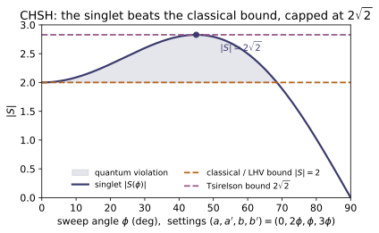

Example problems
Show that $|\psi\rangle=\alpha|01\rangle+\beta|10\rangle$ cannot be written as a product $|a\rangle\otimes|b\rangle$ unless $\alpha=0$ or $\beta=0$. Answer: a product $(a_0|0\rangle+a_1|1\rangle)\otimes(b_0|0\rangle+b_1|1\rangle)$ has amplitudes $(a_0b_0,a_0b_1,a_1b_0,a_1b_1)$, which must satisfy $a_0b_0=a_1b_1=0$ (the $|00\rangle,|11\rangle$ coefficients) yet $a_0b_1=\alpha\neq0$ and $a_1b_0=\beta\neq0$ — impossible. Equivalently the concurrence $C=2|ad-bc|=2|\alpha\beta|$ is nonzero, so the state is entangled. Check: concurrence(np.array([0,a,b,0])) $=2|\alpha\beta|>0$ for $a,b\neq0$; is_product_state(...) is False. (test_no_factorization_theorem.)
A product state expands as $(a_0|0\rangle+a_1|1\rangle)\otimes(b_0|0\rangle+b_1|1\rangle)=a_0b_0|00\rangle+a_0b_1|01\rangle+a_1b_0|10\rangle+a_1b_1|11\rangle$. Matching $\alpha|01\rangle+\beta|10\rangle$ needs $a_0b_0=0$ and $a_1b_1=0$, yet $a_0b_1=\alpha\neq0$ forces $a_0,b_1\neq0$ and $a_1b_0=\beta\neq0$ forces $a_1,b_0\neq0$ — then $a_0b_0\neq0$, a contradiction. So no factorization exists. Equivalently the concurrence $C=2|ad-bc|=2|0\cdot0-\alpha\beta|=2|\alpha\beta|$ is nonzero. With $(\alpha,\beta)=(0.6,0.8)$, concurrence(np.array([0,a,b,0]))$=0.96>0$ and is_product_state(...) is False.
Trace out Bob. For the product state $|0\rangle\otimes|1\rangle$ and for the singlet, what is Alice's reduced state $\rho_A$, and what does its purity say? Answer: product → $\rho_A=|0\rangle\langle0|$, pure, $\mathrm{Tr}(\rho_A^2)=1$ (Alice has a definite state). Singlet → $\rho_A=\tfrac12\mathbb I$, maximally mixed, $\mathrm{Tr}(\rho_A^2)=\tfrac12$ (knowing the pair tells you nothing about Alice alone). That gap is entanglement. Check: purity(partial_trace(density_matrix(product_state(ket0,ket1)),0)) $=1$; purity(partial_trace(density_matrix(singlet()),0)) $=0.5$, and the matrix is $I/2$. (test_product_state_reduced_is_pure, test_bell_state_reduced_is_maximally_mixed.)
With $\rho=|\psi\rangle\langle\psi|$, trace out Bob. The product $|0\rangle\otimes|1\rangle$ keeps its factorization, $\rho_A=|0\rangle\langle0|\,\langle1|1\rangle=|0\rangle\langle0|$, so $\mathrm{Tr}(\rho_A^2)=1$ — pure. For the singlet $|\Psi^-\rangle=\tfrac1{\sqrt2}(|01\rangle-|10\rangle)$,
The maximally mixed $\rho_A$ means Alice's qubit alone reads 50/50 in every basis — the global pure state pins down nothing local; that gap is the entanglement. Matches purity(...)$=1.0$ for the product vs $=0.5$ for the singlet, whose $\rho_A=I/2$.
Compute $E(\mathbf a,\mathbf b)=\langle\Psi^-|(\mathbf a\!\cdot\!\boldsymbol\sigma) \otimes(\mathbf b\!\cdot\!\boldsymbol\sigma)|\Psi^-\rangle$. What is it for parallel, anti-parallel, and perpendicular detectors? Answer: $E=-\mathbf a\!\cdot\!\mathbf b=-\cos\theta_{ab}$. Parallel: $-1$ (perfect anti-correlation, Eq. 12.2); anti-parallel: $+1$ (Eq. 12.3); perpendicular: $0$ (uncorrelated). Check: E_singlet(ndir(0), ndir(0)) $=-1$; E_singlet(ndir(0), ndir(np.pi)) $=+1$; E_singlet(ndir(0), ndir(np.pi/2)) $=0$. (test_singlet_correlation_is_minus_a_dot_b.)
On the singlet the two-spin operator is isotropic, $\langle\Psi^-|\sigma_i\otimes\sigma_j|\Psi^-\rangle=-\delta_{ij}$, so
Parallel detectors ($\theta=0$) give $E=-1$ — whenever Alice reads $+1$, Bob reads $-1$ (perfect anti-correlation); anti-parallel ($\theta=\pi$) give $E=+1$; perpendicular ($\theta=\pi/2$) give $E=0$. Confirmed by E_singlet(ndir(0),ndir(0))$=-1$, E_singlet(ndir(0),ndir(np.pi))$=+1$, and E_singlet(ndir(0),ndir(np.pi/2))$\approx0$.
A local hidden-variable theory obeys $|P(\mathbf a,\mathbf b)-P(\mathbf a,\mathbf c)|\le1+P(\mathbf b,\mathbf c)$. Take $\mathbf a\perp\mathbf b$ with $\mathbf c$ at $45°$ to both. Does quantum mechanics satisfy it? Answer: QM gives $P(a,b)=-\cos90°=0$, $P(a,c)=P(b,c)=-\cos45°=-\tfrac1{\sqrt2}$. LHS $=|0-(-\tfrac1{\sqrt2})|=0.707$; RHS $=1-\tfrac1{\sqrt2}=0.293$. So $0.707\le0.293$ is false — QM violates Bell. Check: bell_3setting(ndir(0), ndir(np.pi/2), ndir(np.pi/4)) returns $(0.707, 0.293)$ with LHS > RHS. (test_griffiths_3setting_bell_violation.)
Using $E(\mathbf a,\mathbf b)=-\cos\theta_{ab}$ with $\mathbf a\perp\mathbf b$ and $\mathbf c$ at $45°$ to each,
The inequality $|P(\mathbf a,\mathbf b)-P(\mathbf a,\mathbf c)|\le1+P(\mathbf b,\mathbf c)$ then reads
which is false: quantum mechanics violates Griffiths' Bell inequality. bell_3setting(ndir(0),ndir(np.pi/2),ndir(np.pi/4)) returns $(0.707,0.293)$ with LHS $>$ RHS.
The CHSH quantity is $S=E(a,b)-E(a,b')+E(a',b)+E(a',b')$. (a) Show $|S|\le2$ for any local deterministic theory. (b) Find the singlet's $S$ at the optimal spin angles $(a,a',b,b')=(0°,90°,45°,135°)$. Answer: (a) $S=A(B-B')+A'(B+B')$ with $A,A',B,B'=\pm1$; one of $B\mp B'$ is $0$, the other $\pm2$, so $|S|=2$ exactly — and any mixture stays $\le2$. (b) Three correlations equal $-\tfrac1{\sqrt2}$ and one $+\tfrac1{\sqrt2}$, giving $S=-2\sqrt2\approx-2.828$ — above the classical $2$, and equal to the Tsirelson bound $2\sqrt2$, which $|S|$ never exceeds. Check: lhv_deterministic_strategies() → all $|S|\le2$, max $=2$; chsh_from_angles(singlet(),0,90,45,135) $=-2\sqrt2$; tsirelson_bound() $=2.828$. (test_chsh_classical_bound_exhaustive, test_chsh_quantum_violation_at_optimal_angles, test_chsh_never_exceeds_tsirelson.)
(a) For a local deterministic assignment $A,A',B,B'\in\{\pm1\}$,
Since $B,B'=\pm1$, exactly one of $B-B'$, $B+B'$ vanishes and the other is $\pm2$, so $|S|=2$ for every strategy; a general LHV theory is a convex mixture of these vertices and stays $|S|\le2$. (b) At $(0°,90°,45°,135°)$ the singlet gives $E(a,b)=E(a',b)=E(a',b')=-\tfrac1{\sqrt2}$ and $E(a,b')=+\tfrac1{\sqrt2}$, so $S=-\tfrac1{\sqrt2}-\tfrac1{\sqrt2}-\tfrac1{\sqrt2}-\tfrac1{\sqrt2}=-2\sqrt2$. Thus lhv_deterministic_strategies() has max $|S|=2$, while chsh_from_angles(singlet(),0,90,45,135)$=-2.828=-2\sqrt2$, exactly tsirelson_bound()$=2.828$.
"Baseballs": a shared random vector $\boldsymbol\lambda$ is set at launch; each detector records $\mathrm{sgn}$ of the spin component along its axis (Alice $A=\mathrm{sgn}(\mathbf a\!\cdot\!\boldsymbol\lambda)$, Bob the negative). With isotropic $\boldsymbol\lambda$, what is $P(\mathbf a,\mathbf b)$, and what CHSH $S$ does it give? Answer: $P(\mathbf a,\mathbf b)=-1+2\eta/\pi$ (linear in the angle $\eta$, vs the quantum $-\cos\eta$). It is a local model, so $|S|\le2$ — at the optimal angles it sits right at $2$, never reaching the quantum $2\sqrt2$. This is Griffiths' explicit demonstration (Prob. 12.3d) that a local theory satisfies Bell. Check: the Monte-Carlo estimate in test_chsh_physical_lhv_model_below_2 returns $|S|\lesssim2$ and well under $2.4$.
For isotropic $\boldsymbol\lambda$ the readings $\mathrm{sgn}(\mathbf a\!\cdot\!\boldsymbol\lambda)$ and $\mathrm{sgn}(\mathbf b\!\cdot\!\boldsymbol\lambda)$ disagree with probability $\eta/\pi$ (the fraction of the sphere between the two flip-planes), $\eta$ being the angle between $\mathbf a,\mathbf b$. With Bob's extra minus sign,
linear in $\eta$ rather than the quantum $-\cos\eta$. Being local it must obey $|S|\le2$; at the optimal angles $\eta=45°,135°$ it gives $S=-2$, sitting right at the classical bound and never reaching $2\sqrt2$. Accordingly the Monte-Carlo test_chsh_physical_lhv_model_below_2 returns $|S|\lesssim2$, well under $2.4$.
Alice and Bob share a Bell state. Can Bob's choice of what to measure (or whether to measure) change Alice's local statistics? Answer: No. For any Bob unitary $U$, $\rho_A=\mathrm{Tr}_B[(\mathbb I\otimes U)\rho(\mathbb I\otimes U^\dagger)]=\mathrm{Tr}_B\rho$; and a non-selective Bob measurement, averaged over outcomes, also leaves $\rho_A$ unchanged ($=\mathbb I/2$ for a Bell state). Alice's data alone are "completely random" regardless of Bob (Griffiths 3e p.572) — the correlations appear only when the two lists are compared, so no information travels. Check: no_signaling_unitary(singlet(), U) and no_signaling_measurement(singlet(), U) return $(\rho_A^{before},\rho_A^{after})$ that are equal to machine precision. (test_no_signaling_under_bob_unitary, test_no_signaling_under_bob_measurement.)
Partial trace is cyclic within Bob's factor, so for any unitary $U$
A non-selective measurement inserts $\sum_kP_k=\mathbb I$, so $\rho'=\sum_k(\mathbb I\otimes P_k)\rho(\mathbb I\otimes P_k)$ likewise gives $\mathrm{Tr}_B\rho'=\mathrm{Tr}_B[\rho\sum_kP_k]=\rho_A$. Bob cannot touch Alice's marginal — for a Bell state it stays $\mathbb I/2$ whatever he does, so her data alone are completely random and carry no signal. Hence no_signaling_unitary(singlet(),U) and no_signaling_measurement(singlet(),U) return $\rho_A^{\text{before}}=\rho_A^{\text{after}}$ to machine precision.
Show the singlet is unchanged by a simultaneous rotation of both spins, $(U\otimes U)|\Psi^-\rangle=|\Psi^-\rangle$ for $U\in SU(2)$, and that the triplet/$|\Phi^+\rangle$ is not. What does invariance mean physically? Answer: the singlet is the rotational scalar — total angular momentum $J=0$ — so it looks the same from every orientation (which is why "spin up" along any axis on one side forces "spin down" along that same axis on the other). The $J=1$ states transform nontrivially. Check: with U = su2(theta, axis), kron(U,U) @ singlet() equals singlet(); for bell_state("Phi+") under a $z$-rotation it does not. (test_singlet_rotational_invariance_J0.)
Write the singlet antisymmetrically, $|\Psi^-\rangle=\tfrac1{\sqrt2}\sum_{ij}\varepsilon_{ij}|i\rangle|j\rangle$ with $\varepsilon_{01}=-\varepsilon_{10}=1$. Under $U\otimes U$ the coefficient of $|k\rangle|l\rangle$ becomes $\sum_{ij}\varepsilon_{ij}U_{ki}U_{lj}=\varepsilon_{kl}\det U$, so
The singlet is the rotational scalar $J=0$ — the same from every orientation, which is exactly why "up along $\hat{\mathbf n}$" for Alice forces "down along $\hat{\mathbf n}$" for Bob on any axis. The symmetric triplet $|\Phi^+\rangle$ ($J=1$) instead picks up relative phases $e^{\mp i\theta}$ on $|00\rangle,|11\rangle$ under a $z$-rotation. Hence kron(U,U) @ singlet() equals singlet(), while for bell_state("Phi+") it does not.
Run the worked code: cd QM/QM-21_entanglement_foundations/code && python3 entanglement.py
QM-22 — Relativistic Quantum Mechanics: Klein–Gordon & Dirac
Quantum Mechanics trunk · QM/QM-22_relativistic_qm · open in the Teaching Network
The relativistic energy–momentum relation $E^2=p^2c^2+m^2c^4$ (stated inline; home module ~RE-06 not built), and the two equations got by quantizing it:
1. Klein–Gordon (spin 0): $(\Box+m^2)\phi=0$; a plane wave $e^{-ip\cdot x}$ solves it iff $E^2=\vec p^{\,2}+m^2$ (both signs → negative-energy modes); and its two flaws — negative energies and an indefinite probability density. 2. Dirac (spin $\tfrac12$): $(i\gamma^\mu\partial_\mu-m)\psi=0$; the gamma matrices and the Clifford algebra $\{\gamma^\mu,\gamma^\nu\}=2g^{\mu\nu}$; why Dirac "square-roots" Klein–Gordon ($\text{Dirac}^2=\text{KG}$); 4-spinors; the 4 plane-wave solutions (2 positive-, 2 negative-energy). 3. Non-relativistic limit → the Pauli equation with the correct $g=2$ and spin–orbit coupling: spin and its $g=2$ emerge automatically from the Dirac structure; the leading energy $E\approx m+p^2/2m$.
House rule (per the weak-coverage rule): Griffiths 3e is non-relativistic — "Klein–Gordon" appears nowhere in 644 pages, and the Dirac equation only in passing (fine-structure remarks, p.388 & p.415, both verified). The physics here is standard and done correctly anyway; the verification is the code, exactly as in ~QM-01_origins. Every identity is checked numerically against a closed form.
Key equations
Figures
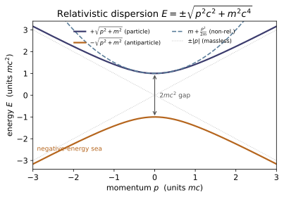
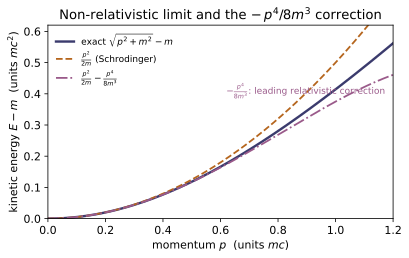
Example problems
Show that the plane wave $\phi=e^{-ip\cdot x}$ satisfies $(\Box+m^2)\phi=0$ iff $E^2=\vec p^{\,2}+m^2$, and that therefore $E=-\sqrt{\vec p^{\,2}+m^2}$ is also a solution. Why is this fatal for a single-particle probability interpretation? (Each $\partial_\mu$ pulls down $-ip_\mu$, so $\Box\phi=-(p\cdot p)\phi$ and $(\Box+m^2)\phi=-(p\cdot p-m^2)\phi$, which vanishes for both roots of $E^2=\vec p^{\,2}+m^2$. The conserved density $\rho\propto\mathrm{Im}(\phi^\partial_t\phi)$ goes negative for the negative-energy root — not a probability.) Answer: both $\pm\sqrt{\vec p^{\,2}+m^2}$ solve KG; no ground state; indefinite $\rho$. Check:* kg_operator_fd(four_momentum([.6,0,.8],1.0,+1),1.0,[.3,.2,.1,.4]) ≈ 0 and ...,-1),... ≈ 0. (test_kg_planewave_on_shell, test_kg_negative_energy_exists.)
Acting on $\phi=e^{-ip\cdot x}$, each $\partial_\mu$ pulls down $-ip_\mu$, so $\Box\phi=\partial_\mu\partial^\mu\phi=(-ip_\mu)(-ip^\mu)\phi=-(p\cdot p)\,\phi$ and
which vanishes iff $E^2=\vec p^{\,2}+m^2$. This is quadratic in $E$, so $E=\pm\sqrt{\vec p^{\,2}+m^2}$ — both roots solve KG and the spectrum is unbounded below. The conserved density $\rho=\frac{i}{2m}(\phi^\partial_t\phi-\phi\,\partial_t\phi^)=\frac{E}{m}|\phi|^2$ flips sign with $E$, so the negative-energy root gives $\rho<0$ — not a probability. With $\vec p=(0.6,0,0.8)$, $m=1$, $E=\sqrt2$; kg_operator_fd returns $\approx2.9\times10^{-7}$ (the finite-difference floor) for both the $+1$ and $-1$ signs — i.e. $\approx0$, confirming each root sits on shell.
From $\{\gamma^\mu,\gamma^\nu\}=2g^{\mu\nu}\mathbb1$ deduce $(\gamma^0)^2=+\mathbb1$, $(\gamma^i)^2=-\mathbb1$, and that distinct gammas anticommute. Argue these cannot be satisfied by numbers, so the $\gamma^\mu$ must be (at least $4\times4$) matrices. Then verify the relation holds for all 16 pairs in the Dirac representation. Answer: $\mu=\nu=0\Rightarrow2(\gamma^0)^2=2\Rightarrow(\gamma^0)^2=\mathbb1$; $\mu=\nu=i\Rightarrow(\gamma^i)^2=-\mathbb1$; $\mu\ne\nu\Rightarrow\gamma^\mu\gamma^\nu=-\gamma^\nu\gamma^\mu$. Anticommuting square-roots of $\pm1$ need a non-abelian (matrix) realization. Check: clifford(mu,nu) $=2\,$metric()[mu,nu]$\,I_4$ for every $\mu,\nu$. (test_clifford_algebra_all_pairs; Pauli blocks cross-checked in test_pauli_cross_check_MA18.)
Set $\mu=\nu=0$: $\{\gamma^0,\gamma^0\}=2(\gamma^0)^2=2g^{00}\mathbb1=+2\mathbb1\Rightarrow(\gamma^0)^2=+\mathbb1$. Set $\mu=\nu=i$: $2(\gamma^i)^2=2g^{ii}\mathbb1=-2\mathbb1\Rightarrow(\gamma^i)^2=-\mathbb1$. For $\mu\ne\nu$, $g^{\mu\nu}=0$ forces
Ordinary numbers always commute ($ab=ba$), so objects that anticommute yet square to the nonzero values $\pm\mathbb1$ cannot be scalars — they must be matrices, and the smallest faithful realization of this Clifford algebra is $4\times4$. The Dirac representation satisfies it for every pair: clifford(0,0)$=+2\mathbb1_4$ (entry $2.0$), clifford(1,1)$=-2\mathbb1_4$ (entry $-2.0$), clifford(0,1)$=0$ — all 16 pairs equal $2g^{\mu\nu}\mathbb1_4$.
Using only $\not{\!p}^{\,2}=(p\cdot p)\mathbb1$ (itself a one-line consequence of the Clifford algebra), show $(\not{\!p}-m)(\not{\!p}+m)=(p\cdot p-m^2)\mathbb1_4$, hence $\det(\not{\!p}-m)=(p\cdot p-m^2)^2$. Conclude that nontrivial spinor solutions exist iff $E^2=\vec p^{\,2}+m^2$ — the Dirac equation still enforces the relativistic relation, and every Dirac solution solves Klein–Gordon. Answer: $\not{\!p}^2-m^2=(p\cdot p-m^2)\mathbb1$; det of a multiple of $\mathbb1_4$ gives the 4th power, but the operator factorizes as a perfect square → $(p\cdot p-m^2)^2$. Check: dirac_squared(four_momentum([.3,.4,0],1.0),1.0) ≈ 0; dirac_determinant(p4,m) $=(p\cdot p-m^2)^2$. (test_dirac_squares_to_klein_gordon, test_dirac_determinant_closed_form.)
Because $p_\mu p_\nu$ is symmetric, only the symmetric (anticommutator) part of $\gamma^\mu\gamma^\nu$ survives:
Hence $(\not{\!p}-m)(\not{\!p}+m)=\not{\!p}^{\,2}-m^2\mathbb1=(p\cdot p-m^2)\mathbb1_4$ — the Klein–Gordon operator. The eigenvalues of $\not{\!p}$ are $\pm\sqrt{p\cdot p}$ (each doubly degenerate), so $\det(\not{\!p}-m)=(\sqrt{p\cdot p}-m)^2(\sqrt{p\cdot p}+m)^2=(p\cdot p-m^2)^2$, vanishing iff $p\cdot p=m^2$, i.e. $E^2=\vec p^{\,2}+m^2$. For $\vec p=(0.3,0.4,0)$, $m=1$, on shell $p\cdot p=1.0=m^2$, so dirac_squared$\approx8\times10^{-17}$ and dirac_determinant$\approx1\times10^{-32}$ (both $\approx0$); off shell the determinant reproduces $(p\cdot p-m^2)^2$ exactly (e.g. $1.1881$).
For $\vec p=(0.3,0.4,0)$, $m=1$, build the two positive-energy spinors $u^{s}$ and two negative-energy spinors $v^{s}$ ($N=\sqrt{E+m}$), and verify $(\not{\!p}-m)u=0$, $(\not{\!p}+m)v=0$. Check the normalizations $\bar u u=+2m$, $\bar v v=-2m$ ($\bar w=w^\dagger\gamma^0$). What does the minus sign signal? Answer: all four solve their equation; $\bar u u=2m=2.0$, $\bar v v=-2m=-2.0$. The negative norm marks the antiparticle (positron) sector — the Dirac echo of KG's indefinite density, resolved by ~QF-01. Check: dirac_solutions([.3,.4,0],1.0); dirac_matrix(p4,1.0)@u0 ≈ 0. (test_dirac_spinors_solve_equation, test_dirac_spinor_normalization.)
In the Dirac rep $\not{\!p}=\begin{pmatrix}E\,\mathbb1&-\vec\sigma\cdot\vec p\\\vec\sigma\cdot\vec p&-E\,\mathbb1\end{pmatrix}$. The lower block of $(\not{\!p}-m)u=0$ gives $\chi=\frac{\vec\sigma\cdot\vec p}{E+m}\varphi$, so with $\varphi=\xi^s$ and $N=\sqrt{E+m}$,
With $\bar w=w^\dagger\gamma^0$ and $(\vec\sigma\cdot\vec p)^2=\vec p^{\,2}$, $\bar uu=N^2\big[1-\frac{p^2}{(E+m)^2}\big]=\frac{(E+m)^2-p^2}{E+m}=2m$ (using $(E+m)^2-p^2=2m(E+m)$); swapping upper/lower blocks flips the bracket, so $\bar vv=-2m$. The minus sign marks the negative-energy/antiparticle (positron) sector. Numerically dirac_solutions([.3,.4,0],1.0) gives $\bar uu_0=2.0$, $\bar vv_0=-2.0$, $u_0^\dagger u_0=2.236=2E$, $\bar u_0v_0=0$, and dirac_matrix(p4,1.0)@u0$\approx0$.
In the non-relativistic limit the upper 2-spinor obeys the Pauli equation with kinetic operator $(\vec\sigma\cdot\vec\pi)^2/2m$. Using $(\vec\sigma\cdot\vec\pi)^2=\vec\pi^{\,2}-q\,\vec\sigma\cdot\vec B$ (from the identity $(\vec\sigma\cdot\vec a)(\vec\sigma\cdot\vec b)=\vec a\cdot\vec b+i\vec\sigma\cdot(\vec a\times\vec b)$ with $[\pi_x,\pi_y]=iqB$), read off the spin Zeeman term and show the gyromagnetic ratio is $g=2$ — i.e. spin couples to $\vec B$ twice as strongly as orbital motion. Answer: $H_{\text{spin}}=-\frac{q}{2m}\vec\sigma\cdot\vec B=-\frac{q}{2m}g\,\vec S\cdot\vec B$ with $\vec S=\tfrac12\vec\sigma\Rightarrow g=2$. Check: dirac_g_factor() → (2.0, ~1e-15). Also verify the underlying identity: test_pauli_vector_identity, test_magnetic_commutator, test_dirac_g_factor_is_two.
Apply $(\vec\sigma\cdot\vec a)(\vec\sigma\cdot\vec b)=\vec a\cdot\vec b+i\vec\sigma\cdot(\vec a\times\vec b)$ with $\vec a=\vec b=\vec\pi$. The kinetic momenta no longer commute: $(\vec\pi\times\vec\pi)_z=[\pi_x,\pi_y]=iqB$ (and cyclic), so
Dividing by $2m$, the Pauli Hamiltonian splits into an orbital piece $\vec\pi^{\,2}/2m$ and a spin piece $H_{\text{spin}}=-\frac{q}{2m}\vec\sigma\cdot\vec B$. Writing $\vec\sigma=2\vec S$ recasts this as $-\frac{q}{2m}g\,\vec S\cdot\vec B$ with $\boxed{g=2}$ — twice the orbital $g=1$, and spin was never inserted by hand. dirac_g_factor() returns $(2.0,\,1.55\times10^{-15})$, the tiny residual confirming the operator identity $(\vec\sigma\cdot\vec\pi)^2-\vec\pi^{\,2}=-q\,\vec\sigma\cdot\vec B$ holds exactly.
Expand $E=\sqrt{\vec p^{\,2}+m^2}$ to two terms past the rest mass and identify each piece physically. Which term, treated as a perturbation, is one of the two contributions to hydrogen's fine structure (~QM-17)? Answer: $E=m+\dfrac{p^2}{2m}-\dfrac{p^4}{8m^3}+\cdots$ — the rest energy, the Schrödinger kinetic energy, and the relativistic correction $-p^4/8m^3$ (the other fine-structure piece is spin–orbit, also from the Dirac reduction). Griffiths derives this perturbatively (§7.3) and notes the exact result follows "from the (relativistic) Dirac equation" (Prob. 7.22, p.388; footnote p.415). Check: energy_expansion([.2,.1,0],1.0,order=2) is closer to nonrel_energy([.2,.1,0],1.0) than the order=1 (Schrödinger) value. (test_nonrelativistic_energy_limit.)
Factor out the rest mass and expand the square root for $|\vec p|\ll m$:
The three terms are the rest energy $m$, the Schrödinger kinetic energy $p^2/2m$, and the leading relativistic correction $-p^4/8m^3$. Treated as a perturbation in hydrogen, this last term is one of the two contributions to the fine structure (~QM-17); the other, spin–orbit coupling, likewise drops out of the Dirac reduction. For $\vec p=(0.2,0.1,0)$, $m=1$, energy_expansion(...,order=2)$=1.0246875$ lies within $7.6\times10^{-6}$ of the exact $m+$nonrel_energy$=1.0246951$ — far closer than the order=1 (Schrödinger) value $1.025$, whose error is $3.0\times10^{-4}$.
Run the worked code: cd QM/QM-22_relativistic_qm/code && python3 relativistic.py